task = tsk("spam")
learner = lrn("classif.sleep",
sleep_train = model_time / 2,
sleep_predict = model_time / 2)
learner$train(task)Scope
This report analyzes the runtime and memory usage of the mlr3 package across different versions. It focuses on the $train() and $predict() methods of the learner and the resample() and benchmark() functions used for model evaluation. The benchmarks vary the training time of the models, the number of resampling iterations, and the size of the dataset. Additionally, the experiments are conducted in parallel to assess the impact of parallelization on both runtime and memory usage. The overhead introduced by encapsulation is examined by comparing different encapsulation methods. Furthermore, the report evaluates the object sizes of various mlr3 objects.
Given the extensive package ecosystem of mlr3, performance bottlenecks can occur at multiple stages. This report aims to help users determine whether the runtime of their workflows falls within expected ranges. If significant runtime or memory anomalies are observed, users are encouraged to report them by opening a GitHub issue.
Benchmarks are conducted on a high-performance cluster optimized for multi-core performance rather than single-core speed. Consequently, runtimes may be faster on a local machine. The benchmarks for $train() and $predict() were conducted on a different, slower cluster.
Summary of Latest mlr3 Version
The benchmarks are comprehensive; therefore, we present a summary of the results for the latest mlr3 version. The runtime of mlr3 should always be considered relative to the training and prediction time of the underlying models. For example, if the training step of a random forest model ranger::ranger() takes 100 ms and the $train() method of lrn("classif.ranger") takes 110 ms, the overhead is 10%. When the same model takes 1 second to train, the overhead introduced by mlr3 is only 1%. Instead of using real models, we simulate the training and prediction time for models by sleeping for 1, 10, 100, and 1000 ms.
We start by measuring the runtime of the $train() method of the learner. For models with a training time of 1000 and 100 ms, the overhead introduced by mlr3 is minimal. Models with a training time of 10 ms take 2 times longer to train in mlr3. For models with a training time of 1 ms, the overhead is approximately 10 times larger than the actual model training time. The overhead of $predict() is similar to $train() and the size of the dataset being predicted plays only a minor role. The $predict_newdata() method converts the data to a task and then predicts on it which doubles the overhead of the $predict() method. The recently introduced $predict_newdata_fast() method is much faster than $predict_newdata(). For models with a prediction time of 10 ms, the overhead is around 10%. For models with a prediction time of 1 ms, the overhead is around 50%.
The overhead of resample() and benchmark() is also very low for models with a training time of 1000 and 100 ms. However, for models with a training time of 10 ms, the overhead approximately doubles the runtime. In cases where the training time is only 1 ms, the overhead results in the runtime being ten times larger than the actual model training time. Running an empty R session consumes 131 MB of memory. Resampling with 10 iterations consumes approximately 164 MB, increasing to around 225 MB when performing 1,000 resampling iterations. Memory usage for benchmarking is comparable to that of resampling.
mlr3 utilizes the future package to enable parallelization over resampling iterations. However, running resample() and benchmark() in parallel introduces overhead due to the initiation of worker processes. Therefore, we compare the runtime of parallel execution with that of sequential execution. For models with a 1-second training time, using resample() and benchmark() in parallel reduces runtime. For models with a 100 ms training time, parallel execution is only advantageous when performing 100 or 1,000 resampling iterations. For models with 10 ms and 1 ms training times, sequential execution only becomes slower than parallel execution when running 1,000 resampling iterations. Memory usage increases significantly with the number of cores since each core initiates a separate R session. Utilizing 10 cores results in a total memory usage of around 1.2 GB.
Encapsulation ensures that signaled conditions (e.g., messages, warnings and errors) are intercepted and that all conditions raised during the training or prediction step are logged into the learner without interrupting the program flow. The encapsulation of the $train() method introduces a runtime overhead of ~1 seconds per model training when using the callr package. In contrast, the encapsulation of the evaluate package adds negligible overhead to the runtime.
When saving and loading mlr3 objects, their size can become significantly larger than expected. This issue is inherent to R6 objects due to data duplication during serialization and deserialization. The latest versions of mlr3 have implemented various strategies to mitigate this problem, substantially reducing the previously observed large increases in object size.
Train
The runtime and memory usage of the $train() method is measured for different mlr3 versions. The train step is performed for different amounts of time (1 ms, 10 ms, 100 ms, and 1000 ms) on the spam dataset with 1000 observations.
Model Time 1000 ms

$train() with models trained for 1000 ms depending on the mlr3 version. The dashed line indicates the total training time of the models. Error bars represent the median absolute deviation of the runtime.| mlr3 Version | paradox Version | Model Time [ms] | Task Size | Median Runtime [ms] | K |
|---|---|---|---|---|---|
| 10 Observations | |||||
| 1.0.1 | 1.0.1 | 1000 | 10 | 1016 | 1.0 |
| 1.0.0 | 1.0.1 | 1000 | 10 | 1016 | 1.0 |
| 0.23.0 | 1.0.1 | 1000 | 10 | 1016 | 1.0 |
| 0.22.1 | 1.0.1 | 1000 | 10 | 1016 | 1.0 |
| 0.22.0 | 1.0.1 | 1000 | 10 | 1016 | 1.0 |
| 0.21.1 | 1.0.1 | 1000 | 10 | 1015 | 1.0 |
| 0.21.0 | 1.0.1 | 1000 | 10 | 1015 | 1.0 |
| 0.20.2 | 1.0.1 | 1000 | 10 | 1015 | 1.0 |
| 0.20.1 | 1.0.1 | 1000 | 10 | 1015 | 1.0 |
| 0.20.0 | 1.0.0 | 1000 | 10 | 1019 | 1.0 |
| 0.19.0 | 0.11.1 | 1000 | 10 | 1016 | 1.0 |
| 0.18.0 | 0.11.1 | 1000 | 10 | 1016 | 1.0 |
| 0.17.2 | 0.11.1 | 1000 | 10 | 1016 | 1.0 |
| 0.17.1 | 0.11.1 | 1000 | 10 | 1016 | 1.0 |
| 0.17.0 | 0.11.1 | 1000 | 10 | 1016 | 1.0 |
| 0.16.0 | 0.11.1 | 1000 | 10 | 1018 | 1.0 |
| 0.15.0 | 0.11.1 | 1000 | 10 | 1019 | 1.0 |
| 0.14.2 | 0.10.0 | 1000 | 10 | 1018 | 1.0 |
| 0.13.4 | 0.9.0 | 1000 | 10 | 1016 | 1.0 |
| 100 Observations | |||||
| 1.0.1 | 1.0.1 | 1000 | 100 | 1016 | 1.0 |
| 1.0.0 | 1.0.1 | 1000 | 100 | 1015 | 1.0 |
| 0.23.0 | 1.0.1 | 1000 | 100 | 1015 | 1.0 |
| 0.22.1 | 1.0.1 | 1000 | 100 | 1016 | 1.0 |
| 0.22.0 | 1.0.1 | 1000 | 100 | 1016 | 1.0 |
| 0.21.1 | 1.0.1 | 1000 | 100 | 1016 | 1.0 |
| 0.21.0 | 1.0.1 | 1000 | 100 | 1015 | 1.0 |
| 0.20.2 | 1.0.1 | 1000 | 100 | 1016 | 1.0 |
| 0.20.1 | 1.0.1 | 1000 | 100 | 1017 | 1.0 |
| 0.20.0 | 1.0.0 | 1000 | 100 | 1020 | 1.0 |
| 0.19.0 | 0.11.1 | 1000 | 100 | 1016 | 1.0 |
| 0.18.0 | 0.11.1 | 1000 | 100 | 1016 | 1.0 |
| 0.17.2 | 0.11.1 | 1000 | 100 | 1016 | 1.0 |
| 0.17.1 | 0.11.1 | 1000 | 100 | 1016 | 1.0 |
| 0.17.0 | 0.11.1 | 1000 | 100 | 1016 | 1.0 |
| 0.16.0 | 0.11.1 | 1000 | 100 | 1017 | 1.0 |
| 0.15.0 | 0.11.1 | 1000 | 100 | 1017 | 1.0 |
| 0.14.2 | 0.10.0 | 1000 | 100 | 1016 | 1.0 |
| 0.13.4 | 0.9.0 | 1000 | 100 | 1016 | 1.0 |
| 1000 Observations | |||||
| 1.0.1 | 1.0.1 | 1000 | 1000 | 1018 | 1.0 |
| 1.0.0 | 1.0.1 | 1000 | 1000 | 1016 | 1.0 |
| 0.23.0 | 1.0.1 | 1000 | 1000 | 1015 | 1.0 |
| 0.22.1 | 1.0.1 | 1000 | 1000 | 1016 | 1.0 |
| 0.22.0 | 1.0.1 | 1000 | 1000 | 1016 | 1.0 |
| 0.21.1 | 1.0.1 | 1000 | 1000 | 1016 | 1.0 |
| 0.21.0 | 1.0.1 | 1000 | 1000 | 1015 | 1.0 |
| 0.20.2 | 1.0.1 | 1000 | 1000 | 1018 | 1.0 |
| 0.20.1 | 1.0.1 | 1000 | 1000 | 1018 | 1.0 |
| 0.20.0 | 1.0.0 | 1000 | 1000 | 1022 | 1.0 |
| 0.19.0 | 0.11.1 | 1000 | 1000 | 1016 | 1.0 |
| 0.18.0 | 0.11.1 | 1000 | 1000 | 1016 | 1.0 |
| 0.17.2 | 0.11.1 | 1000 | 1000 | 1016 | 1.0 |
| 0.17.1 | 0.11.1 | 1000 | 1000 | 1015 | 1.0 |
| 0.17.0 | 0.11.1 | 1000 | 1000 | 1017 | 1.0 |
| 0.16.0 | 0.11.1 | 1000 | 1000 | 1018 | 1.0 |
| 0.15.0 | 0.11.1 | 1000 | 1000 | 1017 | 1.0 |
| 0.14.2 | 0.10.0 | 1000 | 1000 | 1017 | 1.0 |
| 0.13.4 | 0.9.0 | 1000 | 1000 | 1016 | 1.0 |
| 10000 Observations | |||||
| 1.0.1 | 1.0.1 | 1000 | 10000 | 1018 | 1.0 |
| 1.0.0 | 1.0.1 | 1000 | 10000 | 1018 | 1.0 |
| 0.23.0 | 1.0.1 | 1000 | 10000 | 1018 | 1.0 |
| 0.22.1 | 1.0.1 | 1000 | 10000 | 1018 | 1.0 |
| 0.22.0 | 1.0.1 | 1000 | 10000 | 1017 | 1.0 |
| 0.21.1 | 1.0.1 | 1000 | 10000 | 1017 | 1.0 |
| 0.21.0 | 1.0.1 | 1000 | 10000 | 1017 | 1.0 |
| 0.20.2 | 1.0.1 | 1000 | 10000 | 1018 | 1.0 |
| 0.20.1 | 1.0.1 | 1000 | 10000 | 1018 | 1.0 |
| 0.20.0 | 1.0.0 | 1000 | 10000 | 1022 | 1.0 |
| 0.19.0 | 0.11.1 | 1000 | 10000 | 1019 | 1.0 |
| 0.18.0 | 0.11.1 | 1000 | 10000 | 1018 | 1.0 |
| 0.17.2 | 0.11.1 | 1000 | 10000 | 1018 | 1.0 |
| 0.17.1 | 0.11.1 | 1000 | 10000 | 1018 | 1.0 |
| 0.17.0 | 0.11.1 | 1000 | 10000 | 1019 | 1.0 |
| 0.16.0 | 0.11.1 | 1000 | 10000 | 1020 | 1.0 |
| 0.15.0 | 0.11.1 | 1000 | 10000 | 1020 | 1.0 |
| 0.14.2 | 0.10.0 | 1000 | 10000 | 1020 | 1.0 |
| 0.13.4 | 0.9.0 | 1000 | 10000 | 1020 | 1.0 |
Model Time 100 ms

$train() with models trained for 100 ms depending on the mlr3 version. The dashed line indicates the total training time of the models. Error bars represent the median absolute deviation of the runtime.| mlr3 Version | paradox Version | Model Time [ms] | Task Size | Median Runtime [ms] | K |
|---|---|---|---|---|---|
| 10 Observations | |||||
| 1.0.1 | 1.0.1 | 100 | 10 | 114 | 1.1 |
| 1.0.0 | 1.0.1 | 100 | 10 | 114 | 1.1 |
| 0.23.0 | 1.0.1 | 100 | 10 | 112 | 1.1 |
| 0.22.1 | 1.0.1 | 100 | 10 | 112 | 1.1 |
| 0.22.0 | 1.0.1 | 100 | 10 | 111 | 1.1 |
| 0.21.1 | 1.0.1 | 100 | 10 | 113 | 1.1 |
| 0.21.0 | 1.0.1 | 100 | 10 | 112 | 1.1 |
| 0.20.2 | 1.0.1 | 100 | 10 | 113 | 1.1 |
| 0.20.1 | 1.0.1 | 100 | 10 | 113 | 1.1 |
| 0.20.0 | 1.0.0 | 100 | 10 | 116 | 1.2 |
| 0.19.0 | 0.11.1 | 100 | 10 | 113 | 1.1 |
| 0.18.0 | 0.11.1 | 100 | 10 | 113 | 1.1 |
| 0.17.2 | 0.11.1 | 100 | 10 | 112 | 1.1 |
| 0.17.1 | 0.11.1 | 100 | 10 | 113 | 1.1 |
| 0.17.0 | 0.11.1 | 100 | 10 | 112 | 1.1 |
| 0.16.0 | 0.11.1 | 100 | 10 | 116 | 1.2 |
| 0.15.0 | 0.11.1 | 100 | 10 | 116 | 1.2 |
| 0.14.2 | 0.10.0 | 100 | 10 | 117 | 1.2 |
| 0.13.4 | 0.9.0 | 100 | 10 | 115 | 1.2 |
| 100 Observations | |||||
| 1.0.1 | 1.0.1 | 100 | 100 | 113 | 1.1 |
| 1.0.0 | 1.0.1 | 100 | 100 | 112 | 1.1 |
| 0.23.0 | 1.0.1 | 100 | 100 | 112 | 1.1 |
| 0.22.1 | 1.0.1 | 100 | 100 | 111 | 1.1 |
| 0.22.0 | 1.0.1 | 100 | 100 | 113 | 1.1 |
| 0.21.1 | 1.0.1 | 100 | 100 | 112 | 1.1 |
| 0.21.0 | 1.0.1 | 100 | 100 | 112 | 1.1 |
| 0.20.2 | 1.0.1 | 100 | 100 | 114 | 1.1 |
| 0.20.1 | 1.0.1 | 100 | 100 | 114 | 1.1 |
| 0.20.0 | 1.0.0 | 100 | 100 | 116 | 1.2 |
| 0.19.0 | 0.11.1 | 100 | 100 | 113 | 1.1 |
| 0.18.0 | 0.11.1 | 100 | 100 | 112 | 1.1 |
| 0.17.2 | 0.11.1 | 100 | 100 | 114 | 1.1 |
| 0.17.1 | 0.11.1 | 100 | 100 | 114 | 1.1 |
| 0.17.0 | 0.11.1 | 100 | 100 | 113 | 1.1 |
| 0.16.0 | 0.11.1 | 100 | 100 | 116 | 1.2 |
| 0.15.0 | 0.11.1 | 100 | 100 | 116 | 1.2 |
| 0.14.2 | 0.10.0 | 100 | 100 | 117 | 1.2 |
| 0.13.4 | 0.9.0 | 100 | 100 | 116 | 1.2 |
| 1000 Observations | |||||
| 1.0.1 | 1.0.1 | 100 | 1000 | 113 | 1.1 |
| 1.0.0 | 1.0.1 | 100 | 1000 | 114 | 1.1 |
| 0.23.0 | 1.0.1 | 100 | 1000 | 112 | 1.1 |
| 0.22.1 | 1.0.1 | 100 | 1000 | 112 | 1.1 |
| 0.22.0 | 1.0.1 | 100 | 1000 | 113 | 1.1 |
| 0.21.1 | 1.0.1 | 100 | 1000 | 112 | 1.1 |
| 0.21.0 | 1.0.1 | 100 | 1000 | 112 | 1.1 |
| 0.20.2 | 1.0.1 | 100 | 1000 | 113 | 1.1 |
| 0.20.1 | 1.0.1 | 100 | 1000 | 113 | 1.1 |
| 0.20.0 | 1.0.0 | 100 | 1000 | 116 | 1.2 |
| 0.19.0 | 0.11.1 | 100 | 1000 | 114 | 1.1 |
| 0.18.0 | 0.11.1 | 100 | 1000 | 112 | 1.1 |
| 0.17.2 | 0.11.1 | 100 | 1000 | 114 | 1.1 |
| 0.17.1 | 0.11.1 | 100 | 1000 | 114 | 1.1 |
| 0.17.0 | 0.11.1 | 100 | 1000 | 113 | 1.1 |
| 0.16.0 | 0.11.1 | 100 | 1000 | 116 | 1.2 |
| 0.15.0 | 0.11.1 | 100 | 1000 | 116 | 1.2 |
| 0.14.2 | 0.10.0 | 100 | 1000 | 116 | 1.2 |
| 0.13.4 | 0.9.0 | 100 | 1000 | 116 | 1.2 |
| 10000 Observations | |||||
| 1.0.1 | 1.0.1 | 100 | 10000 | 113 | 1.1 |
| 1.0.0 | 1.0.1 | 100 | 10000 | 114 | 1.1 |
| 0.23.0 | 1.0.1 | 100 | 10000 | 113 | 1.1 |
| 0.22.1 | 1.0.1 | 100 | 10000 | 113 | 1.1 |
| 0.22.0 | 1.0.1 | 100 | 10000 | 114 | 1.1 |
| 0.21.1 | 1.0.1 | 100 | 10000 | 114 | 1.1 |
| 0.21.0 | 1.0.1 | 100 | 10000 | 115 | 1.1 |
| 0.20.2 | 1.0.1 | 100 | 10000 | 116 | 1.2 |
| 0.20.1 | 1.0.1 | 100 | 10000 | 114 | 1.1 |
| 0.20.0 | 1.0.0 | 100 | 10000 | 117 | 1.2 |
| 0.19.0 | 0.11.1 | 100 | 10000 | 116 | 1.2 |
| 0.18.0 | 0.11.1 | 100 | 10000 | 114 | 1.1 |
| 0.17.2 | 0.11.1 | 100 | 10000 | 114 | 1.1 |
| 0.17.1 | 0.11.1 | 100 | 10000 | 113 | 1.1 |
| 0.17.0 | 0.11.1 | 100 | 10000 | 114 | 1.1 |
| 0.16.0 | 0.11.1 | 100 | 10000 | 118 | 1.2 |
| 0.15.0 | 0.11.1 | 100 | 10000 | 117 | 1.2 |
| 0.14.2 | 0.10.0 | 100 | 10000 | 117 | 1.2 |
| 0.13.4 | 0.9.0 | 100 | 10000 | 117 | 1.2 |
Model Time 10 ms

$train() with models trained for 10 ms depending on the mlr3 version. The dashed line indicates the total training time of the models. Error bars represent the median absolute deviation of the runtime.| mlr3 Version | paradox Version | Model Time [ms] | Task Size | Median Runtime [ms] | K |
|---|---|---|---|---|---|
| 10 Observations | |||||
| 1.0.1 | 1.0.1 | 10 | 10 | 21 | 2.1 |
| 1.0.0 | 1.0.1 | 10 | 10 | 23 | 2.3 |
| 0.23.0 | 1.0.1 | 10 | 10 | 20 | 2.0 |
| 0.22.1 | 1.0.1 | 10 | 10 | 24 | 2.4 |
| 0.22.0 | 1.0.1 | 10 | 10 | 23 | 2.3 |
| 0.21.1 | 1.0.1 | 10 | 10 | 23 | 2.3 |
| 0.21.0 | 1.0.1 | 10 | 10 | 23 | 2.3 |
| 0.20.2 | 1.0.1 | 10 | 10 | 23 | 2.3 |
| 0.20.1 | 1.0.1 | 10 | 10 | 23 | 2.3 |
| 0.20.0 | 1.0.0 | 10 | 10 | 24 | 2.4 |
| 0.19.0 | 0.11.1 | 10 | 10 | 23 | 2.3 |
| 0.18.0 | 0.11.1 | 10 | 10 | 23 | 2.3 |
| 0.17.2 | 0.11.1 | 10 | 10 | 21 | 2.1 |
| 0.17.1 | 0.11.1 | 10 | 10 | 22 | 2.2 |
| 0.17.0 | 0.11.1 | 10 | 10 | 21 | 2.1 |
| 0.16.0 | 0.11.1 | 10 | 10 | 24 | 2.4 |
| 0.15.0 | 0.11.1 | 10 | 10 | 24 | 2.4 |
| 0.14.2 | 0.10.0 | 10 | 10 | 24 | 2.4 |
| 0.13.4 | 0.9.0 | 10 | 10 | 24 | 2.4 |
| 100 Observations | |||||
| 1.0.1 | 1.0.1 | 10 | 100 | 21 | 2.1 |
| 1.0.0 | 1.0.1 | 10 | 100 | 19 | 1.9 |
| 0.23.0 | 1.0.1 | 10 | 100 | 20 | 2.0 |
| 0.22.1 | 1.0.1 | 10 | 100 | 22 | 2.2 |
| 0.22.0 | 1.0.1 | 10 | 100 | 22 | 2.2 |
| 0.21.1 | 1.0.1 | 10 | 100 | 21 | 2.1 |
| 0.21.0 | 1.0.1 | 10 | 100 | 20 | 2.0 |
| 0.20.2 | 1.0.1 | 10 | 100 | 19 | 1.9 |
| 0.20.1 | 1.0.1 | 10 | 100 | 20 | 2.0 |
| 0.20.0 | 1.0.0 | 10 | 100 | 25 | 2.5 |
| 0.19.0 | 0.11.1 | 10 | 100 | 23 | 2.3 |
| 0.18.0 | 0.11.1 | 10 | 100 | 23 | 2.3 |
| 0.17.2 | 0.11.1 | 10 | 100 | 23 | 2.3 |
| 0.17.1 | 0.11.1 | 10 | 100 | 21 | 2.1 |
| 0.17.0 | 0.11.1 | 10 | 100 | 24 | 2.4 |
| 0.16.0 | 0.11.1 | 10 | 100 | 24 | 2.4 |
| 0.15.0 | 0.11.1 | 10 | 100 | 24 | 2.4 |
| 0.14.2 | 0.10.0 | 10 | 100 | 24 | 2.4 |
| 0.13.4 | 0.9.0 | 10 | 100 | 24 | 2.4 |
| 1000 Observations | |||||
| 1.0.1 | 1.0.1 | 10 | 1000 | 23 | 2.3 |
| 1.0.0 | 1.0.1 | 10 | 1000 | 23 | 2.3 |
| 0.23.0 | 1.0.1 | 10 | 1000 | 19 | 1.9 |
| 0.22.1 | 1.0.1 | 10 | 1000 | 22 | 2.2 |
| 0.22.0 | 1.0.1 | 10 | 1000 | 23 | 2.3 |
| 0.21.1 | 1.0.1 | 10 | 1000 | 23 | 2.3 |
| 0.21.0 | 1.0.1 | 10 | 1000 | 24 | 2.4 |
| 0.20.2 | 1.0.1 | 10 | 1000 | 23 | 2.3 |
| 0.20.1 | 1.0.1 | 10 | 1000 | 24 | 2.4 |
| 0.20.0 | 1.0.0 | 10 | 1000 | 23 | 2.3 |
| 0.19.0 | 0.11.1 | 10 | 1000 | 20 | 2.0 |
| 0.18.0 | 0.11.1 | 10 | 1000 | 23 | 2.3 |
| 0.17.2 | 0.11.1 | 10 | 1000 | 22 | 2.2 |
| 0.17.1 | 0.11.1 | 10 | 1000 | 23 | 2.3 |
| 0.17.0 | 0.11.1 | 10 | 1000 | 22 | 2.2 |
| 0.16.0 | 0.11.1 | 10 | 1000 | 24 | 2.4 |
| 0.15.0 | 0.11.1 | 10 | 1000 | 24 | 2.4 |
| 0.14.2 | 0.10.0 | 10 | 1000 | 24 | 2.4 |
| 0.13.4 | 0.9.0 | 10 | 1000 | 24 | 2.4 |
| 10000 Observations | |||||
| 1.0.1 | 1.0.1 | 10 | 10000 | 22 | 2.2 |
| 1.0.0 | 1.0.1 | 10 | 10000 | 22 | 2.2 |
| 0.23.0 | 1.0.1 | 10 | 10000 | 22 | 2.2 |
| 0.22.1 | 1.0.1 | 10 | 10000 | 24 | 2.4 |
| 0.22.0 | 1.0.1 | 10 | 10000 | 21 | 2.1 |
| 0.21.1 | 1.0.1 | 10 | 10000 | 24 | 2.4 |
| 0.21.0 | 1.0.1 | 10 | 10000 | 23 | 2.3 |
| 0.20.2 | 1.0.1 | 10 | 10000 | 23 | 2.3 |
| 0.20.1 | 1.0.1 | 10 | 10000 | 23 | 2.3 |
| 0.20.0 | 1.0.0 | 10 | 10000 | 26 | 2.6 |
| 0.19.0 | 0.11.1 | 10 | 10000 | 24 | 2.4 |
| 0.18.0 | 0.11.1 | 10 | 10000 | 20 | 2.0 |
| 0.17.2 | 0.11.1 | 10 | 10000 | 21 | 2.1 |
| 0.17.1 | 0.11.1 | 10 | 10000 | 24 | 2.4 |
| 0.17.0 | 0.11.1 | 10 | 10000 | 24 | 2.4 |
| 0.16.0 | 0.11.1 | 10 | 10000 | 24 | 2.4 |
| 0.15.0 | 0.11.1 | 10 | 10000 | 24 | 2.4 |
| 0.14.2 | 0.10.0 | 10 | 10000 | 24 | 2.4 |
| 0.13.4 | 0.9.0 | 10 | 10000 | 24 | 2.4 |
Model Time 1 ms

$train() with models trained for 1 ms depending on the mlr3 version. The dashed line indicates the total training time of the models. Error bars represent the median absolute deviation of the runtime.| mlr3 Version | paradox Version | Model Time [ms] | Task Size | Median Runtime [ms] | K |
|---|---|---|---|---|---|
| 10 Observations | |||||
| 1.0.1 | 1.0.1 | 1 | 10 | 9 | 9.4 |
| 1.0.0 | 1.0.1 | 1 | 10 | 8 | 8.4 |
| 0.23.0 | 1.0.1 | 1 | 10 | 8 | 8.2 |
| 0.22.1 | 1.0.1 | 1 | 10 | 8 | 8.0 |
| 0.22.0 | 1.0.1 | 1 | 10 | 8 | 7.8 |
| 0.21.1 | 1.0.1 | 1 | 10 | 11 | 11 |
| 0.21.0 | 1.0.1 | 1 | 10 | 8 | 7.6 |
| 0.20.2 | 1.0.1 | 1 | 10 | 10 | 10 |
| 0.20.1 | 1.0.1 | 1 | 10 | 8 | 8.2 |
| 0.20.0 | 1.0.0 | 1 | 10 | 11 | 11 |
| 0.19.0 | 0.11.1 | 1 | 10 | 9 | 8.8 |
| 0.18.0 | 0.11.1 | 1 | 10 | 9 | 8.7 |
| 0.17.2 | 0.11.1 | 1 | 10 | 9 | 9.4 |
| 0.17.1 | 0.11.1 | 1 | 10 | 8 | 8.2 |
| 0.17.0 | 0.11.1 | 1 | 10 | 8 | 8.3 |
| 0.16.0 | 0.11.1 | 1 | 10 | 11 | 11 |
| 0.15.0 | 0.11.1 | 1 | 10 | 9 | 9.4 |
| 0.14.2 | 0.10.0 | 1 | 10 | 9 | 8.6 |
| 0.13.4 | 0.9.0 | 1 | 10 | 11 | 11 |
| 100 Observations | |||||
| 1.0.1 | 1.0.1 | 1 | 100 | 8 | 8.1 |
| 1.0.0 | 1.0.1 | 1 | 100 | 8 | 8.2 |
| 0.23.0 | 1.0.1 | 1 | 100 | 8 | 8.3 |
| 0.22.1 | 1.0.1 | 1 | 100 | 8 | 7.8 |
| 0.22.0 | 1.0.1 | 1 | 100 | 9 | 8.5 |
| 0.21.1 | 1.0.1 | 1 | 100 | 7 | 7.4 |
| 0.21.0 | 1.0.1 | 1 | 100 | 8 | 7.7 |
| 0.20.2 | 1.0.1 | 1 | 100 | 8 | 8.5 |
| 0.20.1 | 1.0.1 | 1 | 100 | 8 | 8.1 |
| 0.20.0 | 1.0.0 | 1 | 100 | 11 | 11 |
| 0.19.0 | 0.11.1 | 1 | 100 | 8 | 8.4 |
| 0.18.0 | 0.11.1 | 1 | 100 | 8 | 8.4 |
| 0.17.2 | 0.11.1 | 1 | 100 | 9 | 9.1 |
| 0.17.1 | 0.11.1 | 1 | 100 | 8 | 8.3 |
| 0.17.0 | 0.11.1 | 1 | 100 | 8 | 7.8 |
| 0.16.0 | 0.11.1 | 1 | 100 | 10 | 10 |
| 0.15.0 | 0.11.1 | 1 | 100 | 10 | 9.8 |
| 0.14.2 | 0.10.0 | 1 | 100 | 11 | 11 |
| 0.13.4 | 0.9.0 | 1 | 100 | 10 | 9.7 |
| 1000 Observations | |||||
| 1.0.1 | 1.0.1 | 1 | 1000 | 11 | 11 |
| 1.0.0 | 1.0.1 | 1 | 1000 | 10 | 9.8 |
| 0.23.0 | 1.0.1 | 1 | 1000 | 8 | 8.0 |
| 0.22.1 | 1.0.1 | 1 | 1000 | 8 | 8.1 |
| 0.22.0 | 1.0.1 | 1 | 1000 | 8 | 8.2 |
| 0.21.1 | 1.0.1 | 1 | 1000 | 8 | 8.4 |
| 0.21.0 | 1.0.1 | 1 | 1000 | 8 | 7.7 |
| 0.20.2 | 1.0.1 | 1 | 1000 | 9 | 8.6 |
| 0.20.1 | 1.0.1 | 1 | 1000 | 9 | 8.5 |
| 0.20.0 | 1.0.0 | 1 | 1000 | 13 | 13 |
| 0.19.0 | 0.11.1 | 1 | 1000 | 8 | 8.5 |
| 0.18.0 | 0.11.1 | 1 | 1000 | 8 | 8.3 |
| 0.17.2 | 0.11.1 | 1 | 1000 | 8 | 8.1 |
| 0.17.1 | 0.11.1 | 1 | 1000 | 8 | 7.9 |
| 0.17.0 | 0.11.1 | 1 | 1000 | 9 | 9.0 |
| 0.16.0 | 0.11.1 | 1 | 1000 | 13 | 13 |
| 0.15.0 | 0.11.1 | 1 | 1000 | 9 | 9.5 |
| 0.14.2 | 0.10.0 | 1 | 1000 | 9 | 9.2 |
| 0.13.4 | 0.9.0 | 1 | 1000 | 11 | 11 |
| 10000 Observations | |||||
| 1.0.1 | 1.0.1 | 1 | 10000 | 9 | 9.2 |
| 1.0.0 | 1.0.1 | 1 | 10000 | 12 | 12 |
| 0.23.0 | 1.0.1 | 1 | 10000 | 13 | 13 |
| 0.22.1 | 1.0.1 | 1 | 10000 | 10 | 9.9 |
| 0.22.0 | 1.0.1 | 1 | 10000 | 12 | 12 |
| 0.21.1 | 1.0.1 | 1 | 10000 | 11 | 11 |
| 0.21.0 | 1.0.1 | 1 | 10000 | 11 | 11 |
| 0.20.2 | 1.0.1 | 1 | 10000 | 10 | 10 |
| 0.20.1 | 1.0.1 | 1 | 10000 | 10 | 9.6 |
| 0.20.0 | 1.0.0 | 1 | 10000 | 13 | 13 |
| 0.19.0 | 0.11.1 | 1 | 10000 | 10 | 10 |
| 0.18.0 | 0.11.1 | 1 | 10000 | 10 | 9.7 |
| 0.17.2 | 0.11.1 | 1 | 10000 | 10 | 10 |
| 0.17.1 | 0.11.1 | 1 | 10000 | 10 | 9.5 |
| 0.17.0 | 0.11.1 | 1 | 10000 | 10 | 9.7 |
| 0.16.0 | 0.11.1 | 1 | 10000 | 10 | 10 |
| 0.15.0 | 0.11.1 | 1 | 10000 | 11 | 11 |
| 0.14.2 | 0.10.0 | 1 | 10000 | 10 | 10 |
| 0.13.4 | 0.9.0 | 1 | 10000 | 13 | 13 |
Predict
The runtime of the $predict() method is measured for different mlr3 versions. The predict step is performed for different amounts of time (1 ms, 10 ms, 100 ms, and 1000 ms) on the spam dataset with different amounts of observations (10, 100, 1000, and 10000).
task = tsk("spam")
learner = lrn("classif.sleep",
sleep_train = model_time / 2,
sleep_predict = model_time / 2)
learner$train(task)
learner$predict(task)Model Time 1000 ms
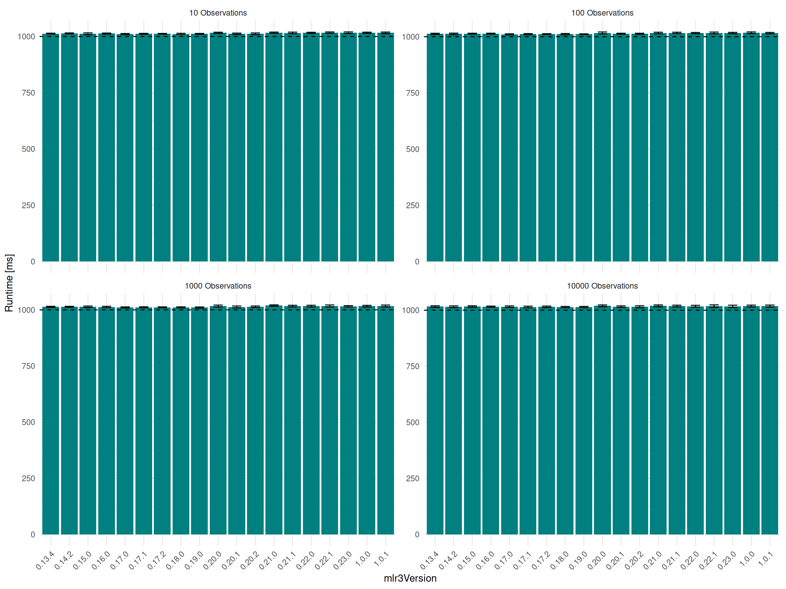
$predict() with models trained for 1000 ms depending on the mlr3 version. The dashed line indicates the total training time of the models. Error bars represent the median absolute deviation of the runtime.| mlr3 Version | paradox Version | Model Time [ms] | Task Size | Median Runtime [ms] | K |
|---|---|---|---|---|---|
| 10 Observations | |||||
| 1.0.1 | 1.0.1 | 1000 | 10 | 1016 | 1.0 |
| 1.0.0 | 1.0.1 | 1000 | 10 | 1016 | 1.0 |
| 0.23.0 | 1.0.1 | 1000 | 10 | 1017 | 1.0 |
| 0.22.1 | 1.0.1 | 1000 | 10 | 1017 | 1.0 |
| 0.22.0 | 1.0.1 | 1000 | 10 | 1016 | 1.0 |
| 0.21.1 | 1.0.1 | 1000 | 10 | 1016 | 1.0 |
| 0.21.0 | 1.0.1 | 1000 | 10 | 1017 | 1.0 |
| 0.20.2 | 1.0.1 | 1000 | 10 | 1012 | 1.0 |
| 0.20.1 | 1.0.1 | 1000 | 10 | 1012 | 1.0 |
| 0.20.0 | 1.0.0 | 1000 | 10 | 1016 | 1.0 |
| 0.19.0 | 0.11.1 | 1000 | 10 | 1012 | 1.0 |
| 0.18.0 | 0.11.1 | 1000 | 10 | 1011 | 1.0 |
| 0.17.2 | 0.11.1 | 1000 | 10 | 1012 | 1.0 |
| 0.17.1 | 0.11.1 | 1000 | 10 | 1012 | 1.0 |
| 0.17.0 | 0.11.1 | 1000 | 10 | 1011 | 1.0 |
| 0.16.0 | 0.11.1 | 1000 | 10 | 1013 | 1.0 |
| 0.15.0 | 0.11.1 | 1000 | 10 | 1012 | 1.0 |
| 0.14.2 | 0.10.0 | 1000 | 10 | 1014 | 1.0 |
| 0.13.4 | 0.9.0 | 1000 | 10 | 1013 | 1.0 |
| 100 Observations | |||||
| 1.0.1 | 1.0.1 | 1000 | 100 | 1016 | 1.0 |
| 1.0.0 | 1.0.1 | 1000 | 100 | 1018 | 1.0 |
| 0.23.0 | 1.0.1 | 1000 | 100 | 1016 | 1.0 |
| 0.22.1 | 1.0.1 | 1000 | 100 | 1017 | 1.0 |
| 0.22.0 | 1.0.1 | 1000 | 100 | 1016 | 1.0 |
| 0.21.1 | 1.0.1 | 1000 | 100 | 1017 | 1.0 |
| 0.21.0 | 1.0.1 | 1000 | 100 | 1017 | 1.0 |
| 0.20.2 | 1.0.1 | 1000 | 100 | 1013 | 1.0 |
| 0.20.1 | 1.0.1 | 1000 | 100 | 1013 | 1.0 |
| 0.20.0 | 1.0.0 | 1000 | 100 | 1017 | 1.0 |
| 0.19.0 | 0.11.1 | 1000 | 100 | 1011 | 1.0 |
| 0.18.0 | 0.11.1 | 1000 | 100 | 1012 | 1.0 |
| 0.17.2 | 0.11.1 | 1000 | 100 | 1012 | 1.0 |
| 0.17.1 | 0.11.1 | 1000 | 100 | 1011 | 1.0 |
| 0.17.0 | 0.11.1 | 1000 | 100 | 1011 | 1.0 |
| 0.16.0 | 0.11.1 | 1000 | 100 | 1014 | 1.0 |
| 0.15.0 | 0.11.1 | 1000 | 100 | 1014 | 1.0 |
| 0.14.2 | 0.10.0 | 1000 | 100 | 1012 | 1.0 |
| 0.13.4 | 0.9.0 | 1000 | 100 | 1013 | 1.0 |
| 1000 Observations | |||||
| 1.0.1 | 1.0.1 | 1000 | 1000 | 1017 | 1.0 |
| 1.0.0 | 1.0.1 | 1000 | 1000 | 1016 | 1.0 |
| 0.23.0 | 1.0.1 | 1000 | 1000 | 1016 | 1.0 |
| 0.22.1 | 1.0.1 | 1000 | 1000 | 1018 | 1.0 |
| 0.22.0 | 1.0.1 | 1000 | 1000 | 1017 | 1.0 |
| 0.21.1 | 1.0.1 | 1000 | 1000 | 1017 | 1.0 |
| 0.21.0 | 1.0.1 | 1000 | 1000 | 1019 | 1.0 |
| 0.20.2 | 1.0.1 | 1000 | 1000 | 1014 | 1.0 |
| 0.20.1 | 1.0.1 | 1000 | 1000 | 1013 | 1.0 |
| 0.20.0 | 1.0.0 | 1000 | 1000 | 1017 | 1.0 |
| 0.19.0 | 0.11.1 | 1000 | 1000 | 1010 | 1.0 |
| 0.18.0 | 0.11.1 | 1000 | 1000 | 1011 | 1.0 |
| 0.17.2 | 0.11.1 | 1000 | 1000 | 1012 | 1.0 |
| 0.17.1 | 0.11.1 | 1000 | 1000 | 1012 | 1.0 |
| 0.17.0 | 0.11.1 | 1000 | 1000 | 1011 | 1.0 |
| 0.16.0 | 0.11.1 | 1000 | 1000 | 1013 | 1.0 |
| 0.15.0 | 0.11.1 | 1000 | 1000 | 1014 | 1.0 |
| 0.14.2 | 0.10.0 | 1000 | 1000 | 1014 | 1.0 |
| 0.13.4 | 0.9.0 | 1000 | 1000 | 1013 | 1.0 |
| 10000 Observations | |||||
| 1.0.1 | 1.0.1 | 1000 | 10000 | 1018 | 1.0 |
| 1.0.0 | 1.0.1 | 1000 | 10000 | 1019 | 1.0 |
| 0.23.0 | 1.0.1 | 1000 | 10000 | 1017 | 1.0 |
| 0.22.1 | 1.0.1 | 1000 | 10000 | 1018 | 1.0 |
| 0.22.0 | 1.0.1 | 1000 | 10000 | 1017 | 1.0 |
| 0.21.1 | 1.0.1 | 1000 | 10000 | 1019 | 1.0 |
| 0.21.0 | 1.0.1 | 1000 | 10000 | 1019 | 1.0 |
| 0.20.2 | 1.0.1 | 1000 | 10000 | 1015 | 1.0 |
| 0.20.1 | 1.0.1 | 1000 | 10000 | 1016 | 1.0 |
| 0.20.0 | 1.0.0 | 1000 | 10000 | 1019 | 1.0 |
| 0.19.0 | 0.11.1 | 1000 | 10000 | 1014 | 1.0 |
| 0.18.0 | 0.11.1 | 1000 | 10000 | 1014 | 1.0 |
| 0.17.2 | 0.11.1 | 1000 | 10000 | 1015 | 1.0 |
| 0.17.1 | 0.11.1 | 1000 | 10000 | 1014 | 1.0 |
| 0.17.0 | 0.11.1 | 1000 | 10000 | 1015 | 1.0 |
| 0.16.0 | 0.11.1 | 1000 | 10000 | 1016 | 1.0 |
| 0.15.0 | 0.11.1 | 1000 | 10000 | 1016 | 1.0 |
| 0.14.2 | 0.10.0 | 1000 | 10000 | 1015 | 1.0 |
| 0.13.4 | 0.9.0 | 1000 | 10000 | 1016 | 1.0 |
Model Time 100 ms
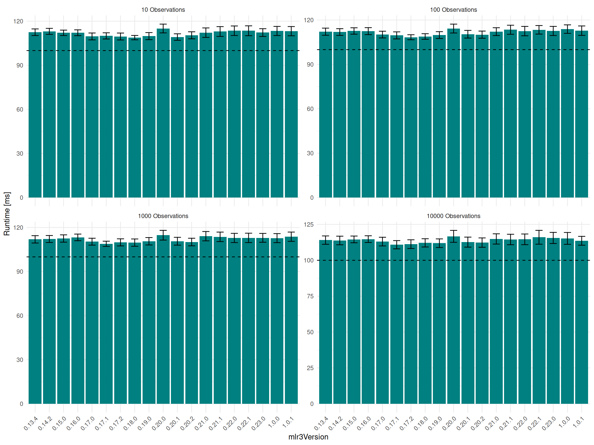
$predict() with models trained for 100 ms depending on the mlr3 version. The dashed line indicates the total training time of the models. Error bars represent the median absolute deviation of the runtime.| mlr3 Version | paradox Version | Model Time [ms] | Task Size | Median Runtime [ms] | K |
|---|---|---|---|---|---|
| 10 Observations | |||||
| 1.0.1 | 1.0.1 | 100 | 10 | 113 | 1.1 |
| 1.0.0 | 1.0.1 | 100 | 10 | 113 | 1.1 |
| 0.23.0 | 1.0.1 | 100 | 10 | 112 | 1.1 |
| 0.22.1 | 1.0.1 | 100 | 10 | 113 | 1.1 |
| 0.22.0 | 1.0.1 | 100 | 10 | 113 | 1.1 |
| 0.21.1 | 1.0.1 | 100 | 10 | 113 | 1.1 |
| 0.21.0 | 1.0.1 | 100 | 10 | 112 | 1.1 |
| 0.20.2 | 1.0.1 | 100 | 10 | 110 | 1.1 |
| 0.20.1 | 1.0.1 | 100 | 10 | 109 | 1.1 |
| 0.20.0 | 1.0.0 | 100 | 10 | 115 | 1.2 |
| 0.19.0 | 0.11.1 | 100 | 10 | 110 | 1.1 |
| 0.18.0 | 0.11.1 | 100 | 10 | 109 | 1.1 |
| 0.17.2 | 0.11.1 | 100 | 10 | 110 | 1.1 |
| 0.17.1 | 0.11.1 | 100 | 10 | 110 | 1.1 |
| 0.17.0 | 0.11.1 | 100 | 10 | 110 | 1.1 |
| 0.16.0 | 0.11.1 | 100 | 10 | 112 | 1.1 |
| 0.15.0 | 0.11.1 | 100 | 10 | 112 | 1.1 |
| 0.14.2 | 0.10.0 | 100 | 10 | 113 | 1.1 |
| 0.13.4 | 0.9.0 | 100 | 10 | 112 | 1.1 |
| 100 Observations | |||||
| 1.0.1 | 1.0.1 | 100 | 100 | 113 | 1.1 |
| 1.0.0 | 1.0.1 | 100 | 100 | 114 | 1.1 |
| 0.23.0 | 1.0.1 | 100 | 100 | 113 | 1.1 |
| 0.22.1 | 1.0.1 | 100 | 100 | 113 | 1.1 |
| 0.22.0 | 1.0.1 | 100 | 100 | 113 | 1.1 |
| 0.21.1 | 1.0.1 | 100 | 100 | 113 | 1.1 |
| 0.21.0 | 1.0.1 | 100 | 100 | 112 | 1.1 |
| 0.20.2 | 1.0.1 | 100 | 100 | 110 | 1.1 |
| 0.20.1 | 1.0.1 | 100 | 100 | 110 | 1.1 |
| 0.20.0 | 1.0.0 | 100 | 100 | 114 | 1.1 |
| 0.19.0 | 0.11.1 | 100 | 100 | 110 | 1.1 |
| 0.18.0 | 0.11.1 | 100 | 100 | 109 | 1.1 |
| 0.17.2 | 0.11.1 | 100 | 100 | 108 | 1.1 |
| 0.17.1 | 0.11.1 | 100 | 100 | 110 | 1.1 |
| 0.17.0 | 0.11.1 | 100 | 100 | 110 | 1.1 |
| 0.16.0 | 0.11.1 | 100 | 100 | 113 | 1.1 |
| 0.15.0 | 0.11.1 | 100 | 100 | 113 | 1.1 |
| 0.14.2 | 0.10.0 | 100 | 100 | 112 | 1.1 |
| 0.13.4 | 0.9.0 | 100 | 100 | 112 | 1.1 |
| 1000 Observations | |||||
| 1.0.1 | 1.0.1 | 100 | 1000 | 114 | 1.1 |
| 1.0.0 | 1.0.1 | 100 | 1000 | 113 | 1.1 |
| 0.23.0 | 1.0.1 | 100 | 1000 | 113 | 1.1 |
| 0.22.1 | 1.0.1 | 100 | 1000 | 113 | 1.1 |
| 0.22.0 | 1.0.1 | 100 | 1000 | 113 | 1.1 |
| 0.21.1 | 1.0.1 | 100 | 1000 | 114 | 1.1 |
| 0.21.0 | 1.0.1 | 100 | 1000 | 114 | 1.1 |
| 0.20.2 | 1.0.1 | 100 | 1000 | 110 | 1.1 |
| 0.20.1 | 1.0.1 | 100 | 1000 | 111 | 1.1 |
| 0.20.0 | 1.0.0 | 100 | 1000 | 115 | 1.1 |
| 0.19.0 | 0.11.1 | 100 | 1000 | 111 | 1.1 |
| 0.18.0 | 0.11.1 | 100 | 1000 | 110 | 1.1 |
| 0.17.2 | 0.11.1 | 100 | 1000 | 110 | 1.1 |
| 0.17.1 | 0.11.1 | 100 | 1000 | 109 | 1.1 |
| 0.17.0 | 0.11.1 | 100 | 1000 | 110 | 1.1 |
| 0.16.0 | 0.11.1 | 100 | 1000 | 113 | 1.1 |
| 0.15.0 | 0.11.1 | 100 | 1000 | 113 | 1.1 |
| 0.14.2 | 0.10.0 | 100 | 1000 | 112 | 1.1 |
| 0.13.4 | 0.9.0 | 100 | 1000 | 112 | 1.1 |
| 10000 Observations | |||||
| 1.0.1 | 1.0.1 | 100 | 10000 | 114 | 1.1 |
| 1.0.0 | 1.0.1 | 100 | 10000 | 115 | 1.2 |
| 0.23.0 | 1.0.1 | 100 | 10000 | 116 | 1.2 |
| 0.22.1 | 1.0.1 | 100 | 10000 | 116 | 1.2 |
| 0.22.0 | 1.0.1 | 100 | 10000 | 115 | 1.1 |
| 0.21.1 | 1.0.1 | 100 | 10000 | 114 | 1.1 |
| 0.21.0 | 1.0.1 | 100 | 10000 | 115 | 1.1 |
| 0.20.2 | 1.0.1 | 100 | 10000 | 112 | 1.1 |
| 0.20.1 | 1.0.1 | 100 | 10000 | 113 | 1.1 |
| 0.20.0 | 1.0.0 | 100 | 10000 | 117 | 1.2 |
| 0.19.0 | 0.11.1 | 100 | 10000 | 112 | 1.1 |
| 0.18.0 | 0.11.1 | 100 | 10000 | 112 | 1.1 |
| 0.17.2 | 0.11.1 | 100 | 10000 | 111 | 1.1 |
| 0.17.1 | 0.11.1 | 100 | 10000 | 111 | 1.1 |
| 0.17.0 | 0.11.1 | 100 | 10000 | 113 | 1.1 |
| 0.16.0 | 0.11.1 | 100 | 10000 | 115 | 1.1 |
| 0.15.0 | 0.11.1 | 100 | 10000 | 115 | 1.1 |
| 0.14.2 | 0.10.0 | 100 | 10000 | 114 | 1.1 |
| 0.13.4 | 0.9.0 | 100 | 10000 | 114 | 1.1 |
Model Time 10 ms
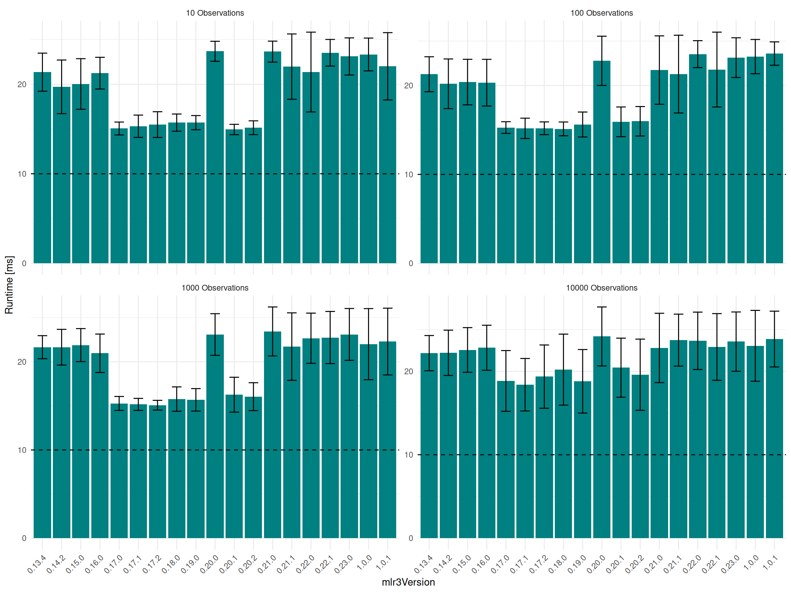
$predict() with models trained for 10 ms depending on the mlr3 version. The dashed line indicates the total training time of the models. Error bars represent the median absolute deviation of the runtime.| mlr3 Version | paradox Version | Model Time [ms] | Task Size | Median Runtime [ms] | K |
|---|---|---|---|---|---|
| 10 Observations | |||||
| 1.0.1 | 1.0.1 | 10 | 10 | 22 | 2.2 |
| 1.0.0 | 1.0.1 | 10 | 10 | 23 | 2.3 |
| 0.23.0 | 1.0.1 | 10 | 10 | 23 | 2.3 |
| 0.22.1 | 1.0.1 | 10 | 10 | 24 | 2.4 |
| 0.22.0 | 1.0.1 | 10 | 10 | 21 | 2.1 |
| 0.21.1 | 1.0.1 | 10 | 10 | 22 | 2.2 |
| 0.21.0 | 1.0.1 | 10 | 10 | 24 | 2.4 |
| 0.20.2 | 1.0.1 | 10 | 10 | 15 | 1.5 |
| 0.20.1 | 1.0.1 | 10 | 10 | 15 | 1.5 |
| 0.20.0 | 1.0.0 | 10 | 10 | 24 | 2.4 |
| 0.19.0 | 0.11.1 | 10 | 10 | 16 | 1.6 |
| 0.18.0 | 0.11.1 | 10 | 10 | 16 | 1.6 |
| 0.17.2 | 0.11.1 | 10 | 10 | 15 | 1.5 |
| 0.17.1 | 0.11.1 | 10 | 10 | 15 | 1.5 |
| 0.17.0 | 0.11.1 | 10 | 10 | 15 | 1.5 |
| 0.16.0 | 0.11.1 | 10 | 10 | 21 | 2.1 |
| 0.15.0 | 0.11.1 | 10 | 10 | 20 | 2.0 |
| 0.14.2 | 0.10.0 | 10 | 10 | 20 | 2.0 |
| 0.13.4 | 0.9.0 | 10 | 10 | 21 | 2.1 |
| 100 Observations | |||||
| 1.0.1 | 1.0.1 | 10 | 100 | 24 | 2.4 |
| 1.0.0 | 1.0.1 | 10 | 100 | 23 | 2.3 |
| 0.23.0 | 1.0.1 | 10 | 100 | 23 | 2.3 |
| 0.22.1 | 1.0.1 | 10 | 100 | 22 | 2.2 |
| 0.22.0 | 1.0.1 | 10 | 100 | 24 | 2.4 |
| 0.21.1 | 1.0.1 | 10 | 100 | 21 | 2.1 |
| 0.21.0 | 1.0.1 | 10 | 100 | 22 | 2.2 |
| 0.20.2 | 1.0.1 | 10 | 100 | 16 | 1.6 |
| 0.20.1 | 1.0.1 | 10 | 100 | 16 | 1.6 |
| 0.20.0 | 1.0.0 | 10 | 100 | 23 | 2.3 |
| 0.19.0 | 0.11.1 | 10 | 100 | 16 | 1.6 |
| 0.18.0 | 0.11.1 | 10 | 100 | 15 | 1.5 |
| 0.17.2 | 0.11.1 | 10 | 100 | 15 | 1.5 |
| 0.17.1 | 0.11.1 | 10 | 100 | 15 | 1.5 |
| 0.17.0 | 0.11.1 | 10 | 100 | 15 | 1.5 |
| 0.16.0 | 0.11.1 | 10 | 100 | 20 | 2.0 |
| 0.15.0 | 0.11.1 | 10 | 100 | 20 | 2.0 |
| 0.14.2 | 0.10.0 | 10 | 100 | 20 | 2.0 |
| 0.13.4 | 0.9.0 | 10 | 100 | 21 | 2.1 |
| 1000 Observations | |||||
| 1.0.1 | 1.0.1 | 10 | 1000 | 22 | 2.2 |
| 1.0.0 | 1.0.1 | 10 | 1000 | 22 | 2.2 |
| 0.23.0 | 1.0.1 | 10 | 1000 | 23 | 2.3 |
| 0.22.1 | 1.0.1 | 10 | 1000 | 23 | 2.3 |
| 0.22.0 | 1.0.1 | 10 | 1000 | 23 | 2.3 |
| 0.21.1 | 1.0.1 | 10 | 1000 | 22 | 2.2 |
| 0.21.0 | 1.0.1 | 10 | 1000 | 23 | 2.3 |
| 0.20.2 | 1.0.1 | 10 | 1000 | 16 | 1.6 |
| 0.20.1 | 1.0.1 | 10 | 1000 | 16 | 1.6 |
| 0.20.0 | 1.0.0 | 10 | 1000 | 23 | 2.3 |
| 0.19.0 | 0.11.1 | 10 | 1000 | 16 | 1.6 |
| 0.18.0 | 0.11.1 | 10 | 1000 | 16 | 1.6 |
| 0.17.2 | 0.11.1 | 10 | 1000 | 15 | 1.5 |
| 0.17.1 | 0.11.1 | 10 | 1000 | 15 | 1.5 |
| 0.17.0 | 0.11.1 | 10 | 1000 | 15 | 1.5 |
| 0.16.0 | 0.11.1 | 10 | 1000 | 21 | 2.1 |
| 0.15.0 | 0.11.1 | 10 | 1000 | 22 | 2.2 |
| 0.14.2 | 0.10.0 | 10 | 1000 | 22 | 2.2 |
| 0.13.4 | 0.9.0 | 10 | 1000 | 22 | 2.2 |
| 10000 Observations | |||||
| 1.0.1 | 1.0.1 | 10 | 10000 | 24 | 2.4 |
| 1.0.0 | 1.0.1 | 10 | 10000 | 23 | 2.3 |
| 0.23.0 | 1.0.1 | 10 | 10000 | 24 | 2.4 |
| 0.22.1 | 1.0.1 | 10 | 10000 | 23 | 2.3 |
| 0.22.0 | 1.0.1 | 10 | 10000 | 24 | 2.4 |
| 0.21.1 | 1.0.1 | 10 | 10000 | 24 | 2.4 |
| 0.21.0 | 1.0.1 | 10 | 10000 | 23 | 2.3 |
| 0.20.2 | 1.0.1 | 10 | 10000 | 20 | 2.0 |
| 0.20.1 | 1.0.1 | 10 | 10000 | 20 | 2.0 |
| 0.20.0 | 1.0.0 | 10 | 10000 | 24 | 2.4 |
| 0.19.0 | 0.11.1 | 10 | 10000 | 19 | 1.9 |
| 0.18.0 | 0.11.1 | 10 | 10000 | 20 | 2.0 |
| 0.17.2 | 0.11.1 | 10 | 10000 | 19 | 1.9 |
| 0.17.1 | 0.11.1 | 10 | 10000 | 18 | 1.8 |
| 0.17.0 | 0.11.1 | 10 | 10000 | 19 | 1.9 |
| 0.16.0 | 0.11.1 | 10 | 10000 | 23 | 2.3 |
| 0.15.0 | 0.11.1 | 10 | 10000 | 23 | 2.3 |
| 0.14.2 | 0.10.0 | 10 | 10000 | 22 | 2.2 |
| 0.13.4 | 0.9.0 | 10 | 10000 | 22 | 2.2 |
Model Time 1 ms
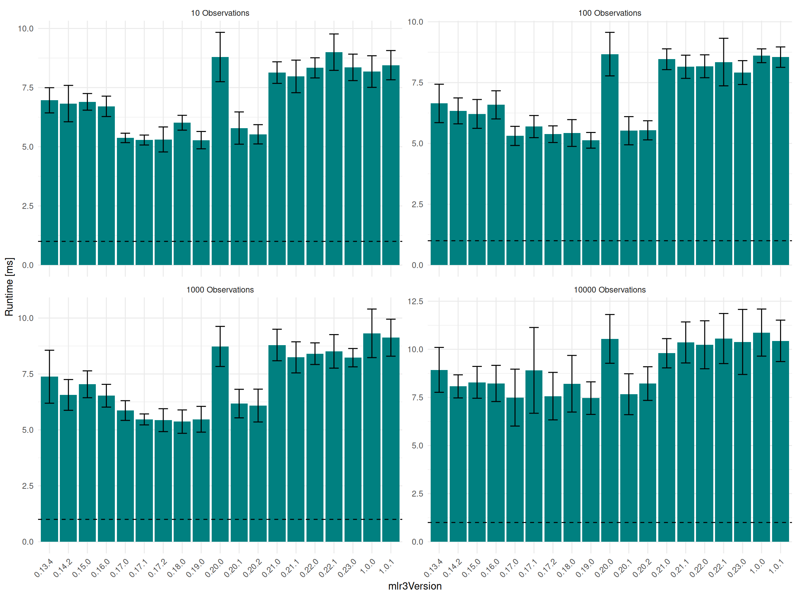
$predict() with models trained for 1 ms depending on the mlr3 version. The dashed line indicates the total training time of the models. Error bars represent the median absolute deviation of the runtime.| mlr3 Version | paradox Version | Model Time [ms] | Task Size | Median Runtime [ms] | K |
|---|---|---|---|---|---|
| 10 Observations | |||||
| 1.0.1 | 1.0.1 | 1 | 10 | 8 | 8.4 |
| 1.0.0 | 1.0.1 | 1 | 10 | 8 | 8.2 |
| 0.23.0 | 1.0.1 | 1 | 10 | 8 | 8.4 |
| 0.22.1 | 1.0.1 | 1 | 10 | 9 | 9.0 |
| 0.22.0 | 1.0.1 | 1 | 10 | 8 | 8.3 |
| 0.21.1 | 1.0.1 | 1 | 10 | 8 | 8.0 |
| 0.21.0 | 1.0.1 | 1 | 10 | 8 | 8.1 |
| 0.20.2 | 1.0.1 | 1 | 10 | 6 | 5.5 |
| 0.20.1 | 1.0.1 | 1 | 10 | 6 | 5.8 |
| 0.20.0 | 1.0.0 | 1 | 10 | 9 | 8.8 |
| 0.19.0 | 0.11.1 | 1 | 10 | 5 | 5.3 |
| 0.18.0 | 0.11.1 | 1 | 10 | 6 | 6.0 |
| 0.17.2 | 0.11.1 | 1 | 10 | 5 | 5.3 |
| 0.17.1 | 0.11.1 | 1 | 10 | 5 | 5.3 |
| 0.17.0 | 0.11.1 | 1 | 10 | 5 | 5.4 |
| 0.16.0 | 0.11.1 | 1 | 10 | 7 | 6.7 |
| 0.15.0 | 0.11.1 | 1 | 10 | 7 | 6.9 |
| 0.14.2 | 0.10.0 | 1 | 10 | 7 | 6.8 |
| 0.13.4 | 0.9.0 | 1 | 10 | 7 | 7.0 |
| 100 Observations | |||||
| 1.0.1 | 1.0.1 | 1 | 100 | 9 | 8.5 |
| 1.0.0 | 1.0.1 | 1 | 100 | 9 | 8.6 |
| 0.23.0 | 1.0.1 | 1 | 100 | 8 | 7.9 |
| 0.22.1 | 1.0.1 | 1 | 100 | 8 | 8.3 |
| 0.22.0 | 1.0.1 | 1 | 100 | 8 | 8.2 |
| 0.21.1 | 1.0.1 | 1 | 100 | 8 | 8.2 |
| 0.21.0 | 1.0.1 | 1 | 100 | 8 | 8.5 |
| 0.20.2 | 1.0.1 | 1 | 100 | 6 | 5.5 |
| 0.20.1 | 1.0.1 | 1 | 100 | 6 | 5.5 |
| 0.20.0 | 1.0.0 | 1 | 100 | 9 | 8.7 |
| 0.19.0 | 0.11.1 | 1 | 100 | 5 | 5.1 |
| 0.18.0 | 0.11.1 | 1 | 100 | 5 | 5.4 |
| 0.17.2 | 0.11.1 | 1 | 100 | 5 | 5.4 |
| 0.17.1 | 0.11.1 | 1 | 100 | 6 | 5.7 |
| 0.17.0 | 0.11.1 | 1 | 100 | 5 | 5.3 |
| 0.16.0 | 0.11.1 | 1 | 100 | 7 | 6.6 |
| 0.15.0 | 0.11.1 | 1 | 100 | 6 | 6.2 |
| 0.14.2 | 0.10.0 | 1 | 100 | 6 | 6.3 |
| 0.13.4 | 0.9.0 | 1 | 100 | 7 | 6.6 |
| 1000 Observations | |||||
| 1.0.1 | 1.0.1 | 1 | 1000 | 9 | 9.1 |
| 1.0.0 | 1.0.1 | 1 | 1000 | 9 | 9.3 |
| 0.23.0 | 1.0.1 | 1 | 1000 | 8 | 8.2 |
| 0.22.1 | 1.0.1 | 1 | 1000 | 9 | 8.5 |
| 0.22.0 | 1.0.1 | 1 | 1000 | 8 | 8.4 |
| 0.21.1 | 1.0.1 | 1 | 1000 | 8 | 8.2 |
| 0.21.0 | 1.0.1 | 1 | 1000 | 9 | 8.8 |
| 0.20.2 | 1.0.1 | 1 | 1000 | 6 | 6.1 |
| 0.20.1 | 1.0.1 | 1 | 1000 | 6 | 6.2 |
| 0.20.0 | 1.0.0 | 1 | 1000 | 9 | 8.7 |
| 0.19.0 | 0.11.1 | 1 | 1000 | 5 | 5.5 |
| 0.18.0 | 0.11.1 | 1 | 1000 | 5 | 5.4 |
| 0.17.2 | 0.11.1 | 1 | 1000 | 5 | 5.4 |
| 0.17.1 | 0.11.1 | 1 | 1000 | 5 | 5.5 |
| 0.17.0 | 0.11.1 | 1 | 1000 | 6 | 5.9 |
| 0.16.0 | 0.11.1 | 1 | 1000 | 7 | 6.5 |
| 0.15.0 | 0.11.1 | 1 | 1000 | 7 | 7.0 |
| 0.14.2 | 0.10.0 | 1 | 1000 | 7 | 6.6 |
| 0.13.4 | 0.9.0 | 1 | 1000 | 7 | 7.4 |
| 10000 Observations | |||||
| 1.0.1 | 1.0.1 | 1 | 10000 | 10 | 10 |
| 1.0.0 | 1.0.1 | 1 | 10000 | 11 | 11 |
| 0.23.0 | 1.0.1 | 1 | 10000 | 10 | 10 |
| 0.22.1 | 1.0.1 | 1 | 10000 | 11 | 11 |
| 0.22.0 | 1.0.1 | 1 | 10000 | 10 | 10 |
| 0.21.1 | 1.0.1 | 1 | 10000 | 10 | 10 |
| 0.21.0 | 1.0.1 | 1 | 10000 | 10 | 9.8 |
| 0.20.2 | 1.0.1 | 1 | 10000 | 8 | 8.2 |
| 0.20.1 | 1.0.1 | 1 | 10000 | 8 | 7.7 |
| 0.20.0 | 1.0.0 | 1 | 10000 | 11 | 11 |
| 0.19.0 | 0.11.1 | 1 | 10000 | 7 | 7.5 |
| 0.18.0 | 0.11.1 | 1 | 10000 | 8 | 8.2 |
| 0.17.2 | 0.11.1 | 1 | 10000 | 8 | 7.6 |
| 0.17.1 | 0.11.1 | 1 | 10000 | 9 | 8.9 |
| 0.17.0 | 0.11.1 | 1 | 10000 | 7 | 7.5 |
| 0.16.0 | 0.11.1 | 1 | 10000 | 8 | 8.2 |
| 0.15.0 | 0.11.1 | 1 | 10000 | 8 | 8.3 |
| 0.14.2 | 0.10.0 | 1 | 10000 | 8 | 8.1 |
| 0.13.4 | 0.9.0 | 1 | 10000 | 9 | 8.9 |
Predict Newdata
The runtime of the $predict_newdata() method is measured for different mlr3 versions. The predict step is performed for different amounts of time (1 ms, 10 ms, 100 ms, and 1000 ms) on the spam dataset with different amounts of observations (1, 10, 100, 1000, and 10000).
task = tsk("spam")
learner = lrn("classif.sleep",
sleep_train = model_time / 2,
sleep_predict = model_time / 2)
learner$train(task)
learner$predict_newdata(newdata)Model Time 1000 ms
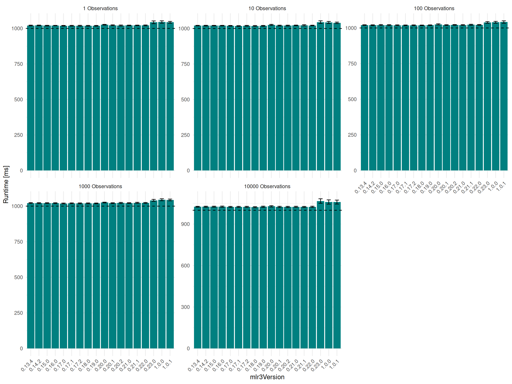
$predict_newdata() with models trained for 1000 ms depending on the mlr3 version. The dashed line indicates the total training time of the models. Error bars represent the median absolute deviation of the runtime.| mlr3 Version | paradox Version | Model Time [ms] | Task Size | Median Runtime [ms] | K |
|---|---|---|---|---|---|
| 1 Observation | |||||
| 1.0.1 | 1.0.1 | 1000 | 1 | 1043 | 1.0 |
| 1.0.0 | 1.0.1 | 1000 | 1 | 1045 | 1.0 |
| 0.23.0 | 1.0.1 | 1000 | 1 | 1043 | 1.0 |
| 0.22.0 | 1.0.1 | 1000 | 1 | 1021 | 1.0 |
| 0.21.1 | 1.0.1 | 1000 | 1 | 1021 | 1.0 |
| 0.21.0 | 1.0.1 | 1000 | 1 | 1021 | 1.0 |
| 0.20.2 | 1.0.1 | 1000 | 1 | 1020 | 1.0 |
| 0.20.1 | 1.0.1 | 1000 | 1 | 1022 | 1.0 |
| 0.20.0 | 1.0.0 | 1000 | 1 | 1026 | 1.0 |
| 0.19.0 | 0.11.1 | 1000 | 1 | 1018 | 1.0 |
| 0.18.0 | 0.11.1 | 1000 | 1 | 1018 | 1.0 |
| 0.17.2 | 0.11.1 | 1000 | 1 | 1019 | 1.0 |
| 0.17.1 | 0.11.1 | 1000 | 1 | 1019 | 1.0 |
| 0.17.0 | 0.11.1 | 1000 | 1 | 1019 | 1.0 |
| 0.16.0 | 0.11.1 | 1000 | 1 | 1020 | 1.0 |
| 0.15.0 | 0.11.1 | 1000 | 1 | 1019 | 1.0 |
| 0.14.2 | 0.10.0 | 1000 | 1 | 1021 | 1.0 |
| 0.13.4 | 0.9.0 | 1000 | 1 | 1020 | 1.0 |
| 10 Observations | |||||
| 1.0.1 | 1.0.1 | 1000 | 10 | 1040 | 1.0 |
| 1.0.0 | 1.0.1 | 1000 | 10 | 1043 | 1.0 |
| 0.23.0 | 1.0.1 | 1000 | 10 | 1045 | 1.0 |
| 0.22.0 | 1.0.1 | 1000 | 10 | 1021 | 1.0 |
| 0.21.1 | 1.0.1 | 1000 | 10 | 1023 | 1.0 |
| 0.21.0 | 1.0.1 | 1000 | 10 | 1022 | 1.0 |
| 0.20.2 | 1.0.1 | 1000 | 10 | 1020 | 1.0 |
| 0.20.1 | 1.0.1 | 1000 | 10 | 1020 | 1.0 |
| 0.20.0 | 1.0.0 | 1000 | 10 | 1025 | 1.0 |
| 0.19.0 | 0.11.1 | 1000 | 10 | 1019 | 1.0 |
| 0.18.0 | 0.11.1 | 1000 | 10 | 1018 | 1.0 |
| 0.17.2 | 0.11.1 | 1000 | 10 | 1019 | 1.0 |
| 0.17.1 | 0.11.1 | 1000 | 10 | 1017 | 1.0 |
| 0.17.0 | 0.11.1 | 1000 | 10 | 1019 | 1.0 |
| 0.16.0 | 0.11.1 | 1000 | 10 | 1020 | 1.0 |
| 0.15.0 | 0.11.1 | 1000 | 10 | 1020 | 1.0 |
| 0.14.2 | 0.10.0 | 1000 | 10 | 1020 | 1.0 |
| 0.13.4 | 0.9.0 | 1000 | 10 | 1020 | 1.0 |
| 100 Observations | |||||
| 1.0.1 | 1.0.1 | 1000 | 100 | 1042 | 1.0 |
| 1.0.0 | 1.0.1 | 1000 | 100 | 1040 | 1.0 |
| 0.23.0 | 1.0.1 | 1000 | 100 | 1039 | 1.0 |
| 0.22.0 | 1.0.1 | 1000 | 100 | 1022 | 1.0 |
| 0.21.1 | 1.0.1 | 1000 | 100 | 1022 | 1.0 |
| 0.21.0 | 1.0.1 | 1000 | 100 | 1021 | 1.0 |
| 0.20.2 | 1.0.1 | 1000 | 100 | 1021 | 1.0 |
| 0.20.1 | 1.0.1 | 1000 | 100 | 1020 | 1.0 |
| 0.20.0 | 1.0.0 | 1000 | 100 | 1025 | 1.0 |
| 0.19.0 | 0.11.1 | 1000 | 100 | 1020 | 1.0 |
| 0.18.0 | 0.11.1 | 1000 | 100 | 1018 | 1.0 |
| 0.17.2 | 0.11.1 | 1000 | 100 | 1019 | 1.0 |
| 0.17.1 | 0.11.1 | 1000 | 100 | 1018 | 1.0 |
| 0.17.0 | 0.11.1 | 1000 | 100 | 1019 | 1.0 |
| 0.16.0 | 0.11.1 | 1000 | 100 | 1020 | 1.0 |
| 0.15.0 | 0.11.1 | 1000 | 100 | 1021 | 1.0 |
| 0.14.2 | 0.10.0 | 1000 | 100 | 1019 | 1.0 |
| 0.13.4 | 0.9.0 | 1000 | 100 | 1020 | 1.0 |
| 1000 Observations | |||||
| 1.0.1 | 1.0.1 | 1000 | 1000 | 1043 | 1.0 |
| 1.0.0 | 1.0.1 | 1000 | 1000 | 1045 | 1.0 |
| 0.23.0 | 1.0.1 | 1000 | 1000 | 1041 | 1.0 |
| 0.22.0 | 1.0.1 | 1000 | 1000 | 1023 | 1.0 |
| 0.21.1 | 1.0.1 | 1000 | 1000 | 1023 | 1.0 |
| 0.21.0 | 1.0.1 | 1000 | 1000 | 1022 | 1.0 |
| 0.20.2 | 1.0.1 | 1000 | 1000 | 1022 | 1.0 |
| 0.20.1 | 1.0.1 | 1000 | 1000 | 1021 | 1.0 |
| 0.20.0 | 1.0.0 | 1000 | 1000 | 1025 | 1.0 |
| 0.19.0 | 0.11.1 | 1000 | 1000 | 1019 | 1.0 |
| 0.18.0 | 0.11.1 | 1000 | 1000 | 1020 | 1.0 |
| 0.17.2 | 0.11.1 | 1000 | 1000 | 1020 | 1.0 |
| 0.17.1 | 0.11.1 | 1000 | 1000 | 1020 | 1.0 |
| 0.17.0 | 0.11.1 | 1000 | 1000 | 1019 | 1.0 |
| 0.16.0 | 0.11.1 | 1000 | 1000 | 1021 | 1.0 |
| 0.15.0 | 0.11.1 | 1000 | 1000 | 1021 | 1.0 |
| 0.14.2 | 0.10.0 | 1000 | 1000 | 1021 | 1.0 |
| 0.13.4 | 0.9.0 | 1000 | 1000 | 1022 | 1.0 |
| 10000 Observations | |||||
| 1.0.1 | 1.0.1 | 1000 | 10000 | 1059 | 1.1 |
| 1.0.0 | 1.0.1 | 1000 | 10000 | 1060 | 1.1 |
| 0.23.0 | 1.0.1 | 1000 | 10000 | 1067 | 1.1 |
| 0.22.0 | 1.0.1 | 1000 | 10000 | 1025 | 1.0 |
| 0.21.1 | 1.0.1 | 1000 | 10000 | 1024 | 1.0 |
| 0.21.0 | 1.0.1 | 1000 | 10000 | 1025 | 1.0 |
| 0.20.2 | 1.0.1 | 1000 | 10000 | 1024 | 1.0 |
| 0.20.1 | 1.0.1 | 1000 | 10000 | 1024 | 1.0 |
| 0.20.0 | 1.0.0 | 1000 | 10000 | 1028 | 1.0 |
| 0.19.0 | 0.11.1 | 1000 | 10000 | 1025 | 1.0 |
| 0.18.0 | 0.11.1 | 1000 | 10000 | 1022 | 1.0 |
| 0.17.2 | 0.11.1 | 1000 | 10000 | 1025 | 1.0 |
| 0.17.1 | 0.11.1 | 1000 | 10000 | 1025 | 1.0 |
| 0.17.0 | 0.11.1 | 1000 | 10000 | 1024 | 1.0 |
| 0.16.0 | 0.11.1 | 1000 | 10000 | 1026 | 1.0 |
| 0.15.0 | 0.11.1 | 1000 | 10000 | 1026 | 1.0 |
| 0.14.2 | 0.10.0 | 1000 | 10000 | 1026 | 1.0 |
| 0.13.4 | 0.9.0 | 1000 | 10000 | 1025 | 1.0 |
Model Time 100 ms
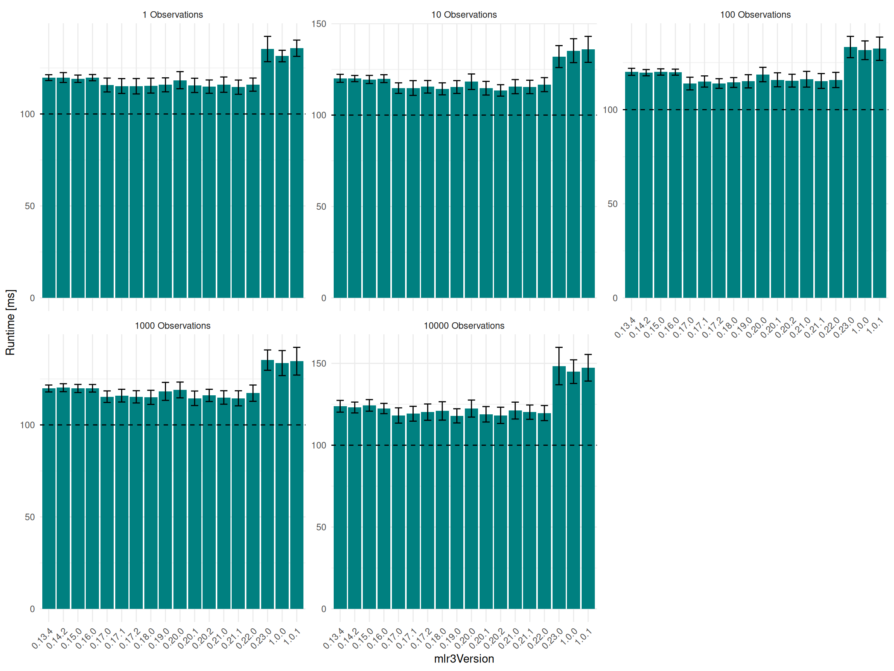
$predict_newdata() with models trained for 100 ms depending on the mlr3 version. The dashed line indicates the total training time of the models. Error bars represent the median absolute deviation of the runtime.| mlr3 Version | paradox Version | Model Time [ms] | Task Size | Median Runtime [ms] | K |
|---|---|---|---|---|---|
| 1 Observation | |||||
| 1.0.1 | 1.0.1 | 100 | 1 | 136 | 1.4 |
| 1.0.0 | 1.0.1 | 100 | 1 | 132 | 1.3 |
| 0.23.0 | 1.0.1 | 100 | 1 | 135 | 1.4 |
| 0.22.0 | 1.0.1 | 100 | 1 | 116 | 1.2 |
| 0.21.1 | 1.0.1 | 100 | 1 | 115 | 1.1 |
| 0.21.0 | 1.0.1 | 100 | 1 | 116 | 1.2 |
| 0.20.2 | 1.0.1 | 100 | 1 | 115 | 1.1 |
| 0.20.1 | 1.0.1 | 100 | 1 | 116 | 1.2 |
| 0.20.0 | 1.0.0 | 100 | 1 | 118 | 1.2 |
| 0.19.0 | 0.11.1 | 100 | 1 | 116 | 1.2 |
| 0.18.0 | 0.11.1 | 100 | 1 | 115 | 1.2 |
| 0.17.2 | 0.11.1 | 100 | 1 | 115 | 1.2 |
| 0.17.1 | 0.11.1 | 100 | 1 | 115 | 1.2 |
| 0.17.0 | 0.11.1 | 100 | 1 | 116 | 1.2 |
| 0.16.0 | 0.11.1 | 100 | 1 | 120 | 1.2 |
| 0.15.0 | 0.11.1 | 100 | 1 | 119 | 1.2 |
| 0.14.2 | 0.10.0 | 100 | 1 | 120 | 1.2 |
| 0.13.4 | 0.9.0 | 100 | 1 | 120 | 1.2 |
| 10 Observations | |||||
| 1.0.1 | 1.0.1 | 100 | 10 | 136 | 1.4 |
| 1.0.0 | 1.0.1 | 100 | 10 | 135 | 1.4 |
| 0.23.0 | 1.0.1 | 100 | 10 | 132 | 1.3 |
| 0.22.0 | 1.0.1 | 100 | 10 | 117 | 1.2 |
| 0.21.1 | 1.0.1 | 100 | 10 | 115 | 1.2 |
| 0.21.0 | 1.0.1 | 100 | 10 | 116 | 1.2 |
| 0.20.2 | 1.0.1 | 100 | 10 | 113 | 1.1 |
| 0.20.1 | 1.0.1 | 100 | 10 | 115 | 1.1 |
| 0.20.0 | 1.0.0 | 100 | 10 | 118 | 1.2 |
| 0.19.0 | 0.11.1 | 100 | 10 | 115 | 1.2 |
| 0.18.0 | 0.11.1 | 100 | 10 | 114 | 1.1 |
| 0.17.2 | 0.11.1 | 100 | 10 | 115 | 1.2 |
| 0.17.1 | 0.11.1 | 100 | 10 | 115 | 1.1 |
| 0.17.0 | 0.11.1 | 100 | 10 | 115 | 1.1 |
| 0.16.0 | 0.11.1 | 100 | 10 | 120 | 1.2 |
| 0.15.0 | 0.11.1 | 100 | 10 | 119 | 1.2 |
| 0.14.2 | 0.10.0 | 100 | 10 | 120 | 1.2 |
| 0.13.4 | 0.9.0 | 100 | 10 | 120 | 1.2 |
| 100 Observations | |||||
| 1.0.1 | 1.0.1 | 100 | 100 | 132 | 1.3 |
| 1.0.0 | 1.0.1 | 100 | 100 | 132 | 1.3 |
| 0.23.0 | 1.0.1 | 100 | 100 | 133 | 1.3 |
| 0.22.0 | 1.0.1 | 100 | 100 | 116 | 1.2 |
| 0.21.1 | 1.0.1 | 100 | 100 | 115 | 1.2 |
| 0.21.0 | 1.0.1 | 100 | 100 | 116 | 1.2 |
| 0.20.2 | 1.0.1 | 100 | 100 | 115 | 1.2 |
| 0.20.1 | 1.0.1 | 100 | 100 | 116 | 1.2 |
| 0.20.0 | 1.0.0 | 100 | 100 | 119 | 1.2 |
| 0.19.0 | 0.11.1 | 100 | 100 | 115 | 1.2 |
| 0.18.0 | 0.11.1 | 100 | 100 | 114 | 1.1 |
| 0.17.2 | 0.11.1 | 100 | 100 | 114 | 1.1 |
| 0.17.1 | 0.11.1 | 100 | 100 | 115 | 1.1 |
| 0.17.0 | 0.11.1 | 100 | 100 | 114 | 1.1 |
| 0.16.0 | 0.11.1 | 100 | 100 | 120 | 1.2 |
| 0.15.0 | 0.11.1 | 100 | 100 | 120 | 1.2 |
| 0.14.2 | 0.10.0 | 100 | 100 | 120 | 1.2 |
| 0.13.4 | 0.9.0 | 100 | 100 | 120 | 1.2 |
| 1000 Observations | |||||
| 1.0.1 | 1.0.1 | 100 | 1000 | 135 | 1.3 |
| 1.0.0 | 1.0.1 | 100 | 1000 | 134 | 1.3 |
| 0.23.0 | 1.0.1 | 100 | 1000 | 135 | 1.4 |
| 0.22.0 | 1.0.1 | 100 | 1000 | 117 | 1.2 |
| 0.21.1 | 1.0.1 | 100 | 1000 | 114 | 1.1 |
| 0.21.0 | 1.0.1 | 100 | 1000 | 115 | 1.1 |
| 0.20.2 | 1.0.1 | 100 | 1000 | 116 | 1.2 |
| 0.20.1 | 1.0.1 | 100 | 1000 | 114 | 1.1 |
| 0.20.0 | 1.0.0 | 100 | 1000 | 119 | 1.2 |
| 0.19.0 | 0.11.1 | 100 | 1000 | 118 | 1.2 |
| 0.18.0 | 0.11.1 | 100 | 1000 | 115 | 1.1 |
| 0.17.2 | 0.11.1 | 100 | 1000 | 115 | 1.2 |
| 0.17.1 | 0.11.1 | 100 | 1000 | 116 | 1.2 |
| 0.17.0 | 0.11.1 | 100 | 1000 | 115 | 1.2 |
| 0.16.0 | 0.11.1 | 100 | 1000 | 120 | 1.2 |
| 0.15.0 | 0.11.1 | 100 | 1000 | 120 | 1.2 |
| 0.14.2 | 0.10.0 | 100 | 1000 | 120 | 1.2 |
| 0.13.4 | 0.9.0 | 100 | 1000 | 120 | 1.2 |
| 10000 Observations | |||||
| 1.0.1 | 1.0.1 | 100 | 10000 | 147 | 1.5 |
| 1.0.0 | 1.0.1 | 100 | 10000 | 145 | 1.4 |
| 0.23.0 | 1.0.1 | 100 | 10000 | 148 | 1.5 |
| 0.22.0 | 1.0.1 | 100 | 10000 | 120 | 1.2 |
| 0.21.1 | 1.0.1 | 100 | 10000 | 120 | 1.2 |
| 0.21.0 | 1.0.1 | 100 | 10000 | 121 | 1.2 |
| 0.20.2 | 1.0.1 | 100 | 10000 | 118 | 1.2 |
| 0.20.1 | 1.0.1 | 100 | 10000 | 119 | 1.2 |
| 0.20.0 | 1.0.0 | 100 | 10000 | 122 | 1.2 |
| 0.19.0 | 0.11.1 | 100 | 10000 | 118 | 1.2 |
| 0.18.0 | 0.11.1 | 100 | 10000 | 121 | 1.2 |
| 0.17.2 | 0.11.1 | 100 | 10000 | 120 | 1.2 |
| 0.17.1 | 0.11.1 | 100 | 10000 | 119 | 1.2 |
| 0.17.0 | 0.11.1 | 100 | 10000 | 118 | 1.2 |
| 0.16.0 | 0.11.1 | 100 | 10000 | 122 | 1.2 |
| 0.15.0 | 0.11.1 | 100 | 10000 | 124 | 1.2 |
| 0.14.2 | 0.10.0 | 100 | 10000 | 123 | 1.2 |
| 0.13.4 | 0.9.0 | 100 | 10000 | 124 | 1.2 |
Model Time 10 ms
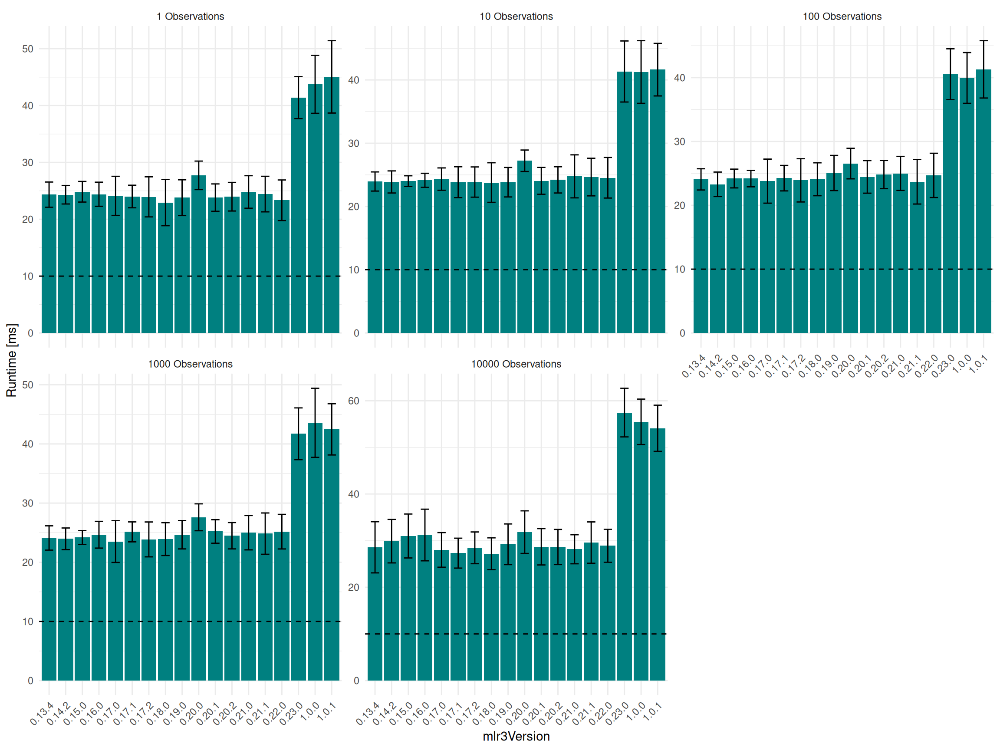
$predict_newdata() with models trained for 10 ms depending on the mlr3 version. The dashed line indicates the total training time of the models. Error bars represent the median absolute deviation of the runtime.| mlr3 Version | paradox Version | Model Time [ms] | Task Size | Median Runtime [ms] | K |
|---|---|---|---|---|---|
| 1 Observation | |||||
| 1.0.1 | 1.0.1 | 10 | 1 | 45 | 4.5 |
| 1.0.0 | 1.0.1 | 10 | 1 | 44 | 4.4 |
| 0.23.0 | 1.0.1 | 10 | 1 | 41 | 4.1 |
| 0.22.0 | 1.0.1 | 10 | 1 | 23 | 2.3 |
| 0.21.1 | 1.0.1 | 10 | 1 | 24 | 2.4 |
| 0.21.0 | 1.0.1 | 10 | 1 | 25 | 2.5 |
| 0.20.2 | 1.0.1 | 10 | 1 | 24 | 2.4 |
| 0.20.1 | 1.0.1 | 10 | 1 | 24 | 2.4 |
| 0.20.0 | 1.0.0 | 10 | 1 | 28 | 2.8 |
| 0.19.0 | 0.11.1 | 10 | 1 | 24 | 2.4 |
| 0.18.0 | 0.11.1 | 10 | 1 | 23 | 2.3 |
| 0.17.2 | 0.11.1 | 10 | 1 | 24 | 2.4 |
| 0.17.1 | 0.11.1 | 10 | 1 | 24 | 2.4 |
| 0.17.0 | 0.11.1 | 10 | 1 | 24 | 2.4 |
| 0.16.0 | 0.11.1 | 10 | 1 | 24 | 2.4 |
| 0.15.0 | 0.11.1 | 10 | 1 | 25 | 2.5 |
| 0.14.2 | 0.10.0 | 10 | 1 | 24 | 2.4 |
| 0.13.4 | 0.9.0 | 10 | 1 | 24 | 2.4 |
| 10 Observations | |||||
| 1.0.1 | 1.0.1 | 10 | 10 | 42 | 4.2 |
| 1.0.0 | 1.0.1 | 10 | 10 | 41 | 4.1 |
| 0.23.0 | 1.0.1 | 10 | 10 | 41 | 4.1 |
| 0.22.0 | 1.0.1 | 10 | 10 | 25 | 2.5 |
| 0.21.1 | 1.0.1 | 10 | 10 | 25 | 2.5 |
| 0.21.0 | 1.0.1 | 10 | 10 | 25 | 2.5 |
| 0.20.2 | 1.0.1 | 10 | 10 | 24 | 2.4 |
| 0.20.1 | 1.0.1 | 10 | 10 | 24 | 2.4 |
| 0.20.0 | 1.0.0 | 10 | 10 | 27 | 2.7 |
| 0.19.0 | 0.11.1 | 10 | 10 | 24 | 2.4 |
| 0.18.0 | 0.11.1 | 10 | 10 | 24 | 2.4 |
| 0.17.2 | 0.11.1 | 10 | 10 | 24 | 2.4 |
| 0.17.1 | 0.11.1 | 10 | 10 | 24 | 2.4 |
| 0.17.0 | 0.11.1 | 10 | 10 | 24 | 2.4 |
| 0.16.0 | 0.11.1 | 10 | 10 | 24 | 2.4 |
| 0.15.0 | 0.11.1 | 10 | 10 | 24 | 2.4 |
| 0.14.2 | 0.10.0 | 10 | 10 | 24 | 2.4 |
| 0.13.4 | 0.9.0 | 10 | 10 | 24 | 2.4 |
| 100 Observations | |||||
| 1.0.1 | 1.0.1 | 10 | 100 | 41 | 4.1 |
| 1.0.0 | 1.0.1 | 10 | 100 | 40 | 4.0 |
| 0.23.0 | 1.0.1 | 10 | 100 | 41 | 4.1 |
| 0.22.0 | 1.0.1 | 10 | 100 | 25 | 2.5 |
| 0.21.1 | 1.0.1 | 10 | 100 | 24 | 2.4 |
| 0.21.0 | 1.0.1 | 10 | 100 | 25 | 2.5 |
| 0.20.2 | 1.0.1 | 10 | 100 | 25 | 2.5 |
| 0.20.1 | 1.0.1 | 10 | 100 | 24 | 2.4 |
| 0.20.0 | 1.0.0 | 10 | 100 | 27 | 2.7 |
| 0.19.0 | 0.11.1 | 10 | 100 | 25 | 2.5 |
| 0.18.0 | 0.11.1 | 10 | 100 | 24 | 2.4 |
| 0.17.2 | 0.11.1 | 10 | 100 | 24 | 2.4 |
| 0.17.1 | 0.11.1 | 10 | 100 | 24 | 2.4 |
| 0.17.0 | 0.11.1 | 10 | 100 | 24 | 2.4 |
| 0.16.0 | 0.11.1 | 10 | 100 | 24 | 2.4 |
| 0.15.0 | 0.11.1 | 10 | 100 | 24 | 2.4 |
| 0.14.2 | 0.10.0 | 10 | 100 | 23 | 2.3 |
| 0.13.4 | 0.9.0 | 10 | 100 | 24 | 2.4 |
| 1000 Observations | |||||
| 1.0.1 | 1.0.1 | 10 | 1000 | 42 | 4.2 |
| 1.0.0 | 1.0.1 | 10 | 1000 | 44 | 4.4 |
| 0.23.0 | 1.0.1 | 10 | 1000 | 42 | 4.2 |
| 0.22.0 | 1.0.1 | 10 | 1000 | 25 | 2.5 |
| 0.21.1 | 1.0.1 | 10 | 1000 | 25 | 2.5 |
| 0.21.0 | 1.0.1 | 10 | 1000 | 25 | 2.5 |
| 0.20.2 | 1.0.1 | 10 | 1000 | 24 | 2.4 |
| 0.20.1 | 1.0.1 | 10 | 1000 | 25 | 2.5 |
| 0.20.0 | 1.0.0 | 10 | 1000 | 28 | 2.8 |
| 0.19.0 | 0.11.1 | 10 | 1000 | 25 | 2.5 |
| 0.18.0 | 0.11.1 | 10 | 1000 | 24 | 2.4 |
| 0.17.2 | 0.11.1 | 10 | 1000 | 24 | 2.4 |
| 0.17.1 | 0.11.1 | 10 | 1000 | 25 | 2.5 |
| 0.17.0 | 0.11.1 | 10 | 1000 | 24 | 2.4 |
| 0.16.0 | 0.11.1 | 10 | 1000 | 25 | 2.5 |
| 0.15.0 | 0.11.1 | 10 | 1000 | 24 | 2.4 |
| 0.14.2 | 0.10.0 | 10 | 1000 | 24 | 2.4 |
| 0.13.4 | 0.9.0 | 10 | 1000 | 24 | 2.4 |
| 10000 Observations | |||||
| 1.0.1 | 1.0.1 | 10 | 10000 | 54 | 5.4 |
| 1.0.0 | 1.0.1 | 10 | 10000 | 55 | 5.5 |
| 0.23.0 | 1.0.1 | 10 | 10000 | 57 | 5.7 |
| 0.22.0 | 1.0.1 | 10 | 10000 | 29 | 2.9 |
| 0.21.1 | 1.0.1 | 10 | 10000 | 30 | 3.0 |
| 0.21.0 | 1.0.1 | 10 | 10000 | 28 | 2.8 |
| 0.20.2 | 1.0.1 | 10 | 10000 | 29 | 2.9 |
| 0.20.1 | 1.0.1 | 10 | 10000 | 29 | 2.9 |
| 0.20.0 | 1.0.0 | 10 | 10000 | 32 | 3.2 |
| 0.19.0 | 0.11.1 | 10 | 10000 | 29 | 2.9 |
| 0.18.0 | 0.11.1 | 10 | 10000 | 27 | 2.7 |
| 0.17.2 | 0.11.1 | 10 | 10000 | 28 | 2.8 |
| 0.17.1 | 0.11.1 | 10 | 10000 | 27 | 2.7 |
| 0.17.0 | 0.11.1 | 10 | 10000 | 28 | 2.8 |
| 0.16.0 | 0.11.1 | 10 | 10000 | 31 | 3.1 |
| 0.15.0 | 0.11.1 | 10 | 10000 | 31 | 3.1 |
| 0.14.2 | 0.10.0 | 10 | 10000 | 30 | 3.0 |
| 0.13.4 | 0.9.0 | 10 | 10000 | 29 | 2.9 |
Model Time 1 ms
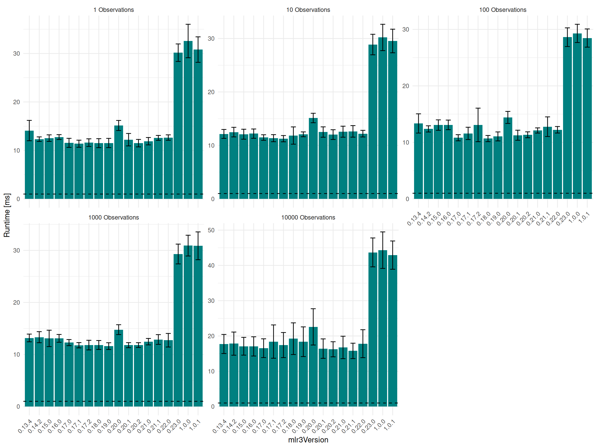
$predict_newdata() with models trained for 1 ms depending on the mlr3 version. The dashed line indicates the total training time of the models. Error bars represent the median absolute deviation of the runtime.| mlr3 Version | paradox Version | Model Time [ms] | Task Size | Median Runtime [ms] | K |
|---|---|---|---|---|---|
| 1 Observation | |||||
| 1.0.1 | 1.0.1 | 1 | 1 | 31 | 31 |
| 1.0.0 | 1.0.1 | 1 | 1 | 33 | 33 |
| 0.23.0 | 1.0.1 | 1 | 1 | 30 | 30 |
| 0.22.0 | 1.0.1 | 1 | 1 | 13 | 13 |
| 0.21.1 | 1.0.1 | 1 | 1 | 13 | 13 |
| 0.21.0 | 1.0.1 | 1 | 1 | 12 | 12 |
| 0.20.2 | 1.0.1 | 1 | 1 | 11 | 11 |
| 0.20.1 | 1.0.1 | 1 | 1 | 12 | 12 |
| 0.20.0 | 1.0.0 | 1 | 1 | 15 | 15 |
| 0.19.0 | 0.11.1 | 1 | 1 | 12 | 12 |
| 0.18.0 | 0.11.1 | 1 | 1 | 11 | 11 |
| 0.17.2 | 0.11.1 | 1 | 1 | 12 | 12 |
| 0.17.1 | 0.11.1 | 1 | 1 | 11 | 11 |
| 0.17.0 | 0.11.1 | 1 | 1 | 12 | 12 |
| 0.16.0 | 0.11.1 | 1 | 1 | 13 | 13 |
| 0.15.0 | 0.11.1 | 1 | 1 | 13 | 13 |
| 0.14.2 | 0.10.0 | 1 | 1 | 12 | 12 |
| 0.13.4 | 0.9.0 | 1 | 1 | 14 | 14 |
| 10 Observations | |||||
| 1.0.1 | 1.0.1 | 1 | 10 | 30 | 30 |
| 1.0.0 | 1.0.1 | 1 | 10 | 30 | 30 |
| 0.23.0 | 1.0.1 | 1 | 10 | 29 | 29 |
| 0.22.0 | 1.0.1 | 1 | 10 | 12 | 12 |
| 0.21.1 | 1.0.1 | 1 | 10 | 13 | 13 |
| 0.21.0 | 1.0.1 | 1 | 10 | 13 | 13 |
| 0.20.2 | 1.0.1 | 1 | 10 | 12 | 12 |
| 0.20.1 | 1.0.1 | 1 | 10 | 13 | 13 |
| 0.20.0 | 1.0.0 | 1 | 10 | 15 | 15 |
| 0.19.0 | 0.11.1 | 1 | 10 | 12 | 12 |
| 0.18.0 | 0.11.1 | 1 | 10 | 12 | 12 |
| 0.17.2 | 0.11.1 | 1 | 10 | 11 | 11 |
| 0.17.1 | 0.11.1 | 1 | 10 | 11 | 11 |
| 0.17.0 | 0.11.1 | 1 | 10 | 11 | 11 |
| 0.16.0 | 0.11.1 | 1 | 10 | 12 | 12 |
| 0.15.0 | 0.11.1 | 1 | 10 | 12 | 12 |
| 0.14.2 | 0.10.0 | 1 | 10 | 12 | 12 |
| 0.13.4 | 0.9.0 | 1 | 10 | 12 | 12 |
| 100 Observations | |||||
| 1.0.1 | 1.0.1 | 1 | 100 | 28 | 28 |
| 1.0.0 | 1.0.1 | 1 | 100 | 29 | 29 |
| 0.23.0 | 1.0.1 | 1 | 100 | 29 | 29 |
| 0.22.0 | 1.0.1 | 1 | 100 | 12 | 12 |
| 0.21.1 | 1.0.1 | 1 | 100 | 13 | 13 |
| 0.21.0 | 1.0.1 | 1 | 100 | 12 | 12 |
| 0.20.2 | 1.0.1 | 1 | 100 | 11 | 11 |
| 0.20.1 | 1.0.1 | 1 | 100 | 11 | 11 |
| 0.20.0 | 1.0.0 | 1 | 100 | 14 | 14 |
| 0.19.0 | 0.11.1 | 1 | 100 | 11 | 11 |
| 0.18.0 | 0.11.1 | 1 | 100 | 11 | 11 |
| 0.17.2 | 0.11.1 | 1 | 100 | 13 | 13 |
| 0.17.1 | 0.11.1 | 1 | 100 | 12 | 12 |
| 0.17.0 | 0.11.1 | 1 | 100 | 11 | 11 |
| 0.16.0 | 0.11.1 | 1 | 100 | 13 | 13 |
| 0.15.0 | 0.11.1 | 1 | 100 | 13 | 13 |
| 0.14.2 | 0.10.0 | 1 | 100 | 12 | 12 |
| 0.13.4 | 0.9.0 | 1 | 100 | 13 | 13 |
| 1000 Observations | |||||
| 1.0.1 | 1.0.1 | 1 | 1000 | 31 | 31 |
| 1.0.0 | 1.0.1 | 1 | 1000 | 31 | 31 |
| 0.23.0 | 1.0.1 | 1 | 1000 | 29 | 29 |
| 0.22.0 | 1.0.1 | 1 | 1000 | 13 | 13 |
| 0.21.1 | 1.0.1 | 1 | 1000 | 13 | 13 |
| 0.21.0 | 1.0.1 | 1 | 1000 | 12 | 12 |
| 0.20.2 | 1.0.1 | 1 | 1000 | 12 | 12 |
| 0.20.1 | 1.0.1 | 1 | 1000 | 12 | 12 |
| 0.20.0 | 1.0.0 | 1 | 1000 | 15 | 15 |
| 0.19.0 | 0.11.1 | 1 | 1000 | 12 | 12 |
| 0.18.0 | 0.11.1 | 1 | 1000 | 12 | 12 |
| 0.17.2 | 0.11.1 | 1 | 1000 | 12 | 12 |
| 0.17.1 | 0.11.1 | 1 | 1000 | 12 | 12 |
| 0.17.0 | 0.11.1 | 1 | 1000 | 12 | 12 |
| 0.16.0 | 0.11.1 | 1 | 1000 | 13 | 13 |
| 0.15.0 | 0.11.1 | 1 | 1000 | 13 | 13 |
| 0.14.2 | 0.10.0 | 1 | 1000 | 13 | 13 |
| 0.13.4 | 0.9.0 | 1 | 1000 | 13 | 13 |
| 10000 Observations | |||||
| 1.0.1 | 1.0.1 | 1 | 10000 | 43 | 43 |
| 1.0.0 | 1.0.1 | 1 | 10000 | 44 | 44 |
| 0.23.0 | 1.0.1 | 1 | 10000 | 44 | 44 |
| 0.22.0 | 1.0.1 | 1 | 10000 | 18 | 18 |
| 0.21.1 | 1.0.1 | 1 | 10000 | 16 | 16 |
| 0.21.0 | 1.0.1 | 1 | 10000 | 17 | 17 |
| 0.20.2 | 1.0.1 | 1 | 10000 | 16 | 16 |
| 0.20.1 | 1.0.1 | 1 | 10000 | 16 | 16 |
| 0.20.0 | 1.0.0 | 1 | 10000 | 23 | 23 |
| 0.19.0 | 0.11.1 | 1 | 10000 | 18 | 18 |
| 0.18.0 | 0.11.1 | 1 | 10000 | 19 | 19 |
| 0.17.2 | 0.11.1 | 1 | 10000 | 17 | 17 |
| 0.17.1 | 0.11.1 | 1 | 10000 | 18 | 18 |
| 0.17.0 | 0.11.1 | 1 | 10000 | 17 | 17 |
| 0.16.0 | 0.11.1 | 1 | 10000 | 17 | 17 |
| 0.15.0 | 0.11.1 | 1 | 10000 | 17 | 17 |
| 0.14.2 | 0.10.0 | 1 | 10000 | 18 | 18 |
| 0.13.4 | 0.9.0 | 1 | 10000 | 18 | 18 |
Predict Newdata Fast
The runtime of the $predict_newdata_fast() method is measured for different mlr3 versions. The predict step is performed for different amounts of time (1 ms, 10 ms, 100 ms, and 1000 ms) on the spam dataset with different amounts of observations (1, 10, 100, 1000, and 10000).
task = tsk("spam")
learner = lrn("classif.sleep",
sleep_train = model_time / 2,
sleep_predict = model_time / 2)
learner$train(task)
learner$predict_newdata_fast(task)Model Time 1000 ms
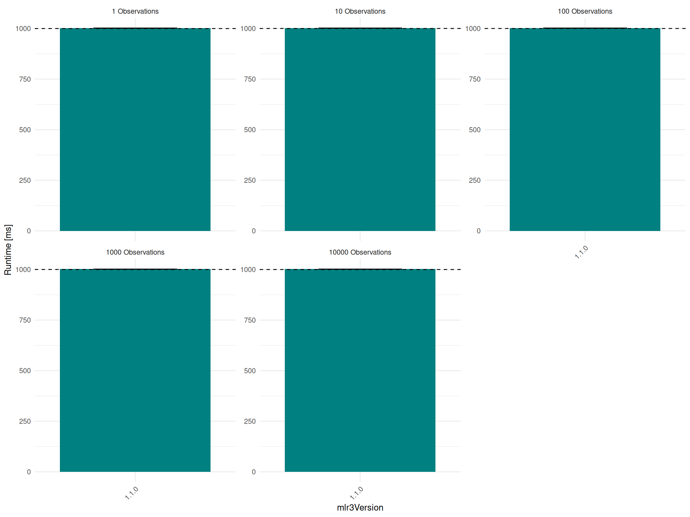
$predict_newdata_fast() with models trained for 1000 ms depending on the mlr3 version. The dashed line indicates the total training time of the models. Error bars represent the median absolute deviation of the runtime.| mlr3 Version | paradox Version | Model Time [ms] | Task Size | Median Runtime [ms] | K |
|---|---|---|---|---|---|
| 1 Observation | |||||
| 1.1.0 | 1.0.1 | 1000 | 1 | 1002 | 1.0 |
| 10 Observations | |||||
| 1.1.0 | 1.0.1 | 1000 | 10 | 1002 | 1.0 |
| 100 Observations | |||||
| 1.1.0 | 1.0.1 | 1000 | 100 | 1002 | 1.0 |
| 1000 Observations | |||||
| 1.1.0 | 1.0.1 | 1000 | 1000 | 1002 | 1.0 |
| 10000 Observations | |||||
| 1.1.0 | 1.0.1 | 1000 | 10000 | 1002 | 1.0 |
Model Time 100 ms
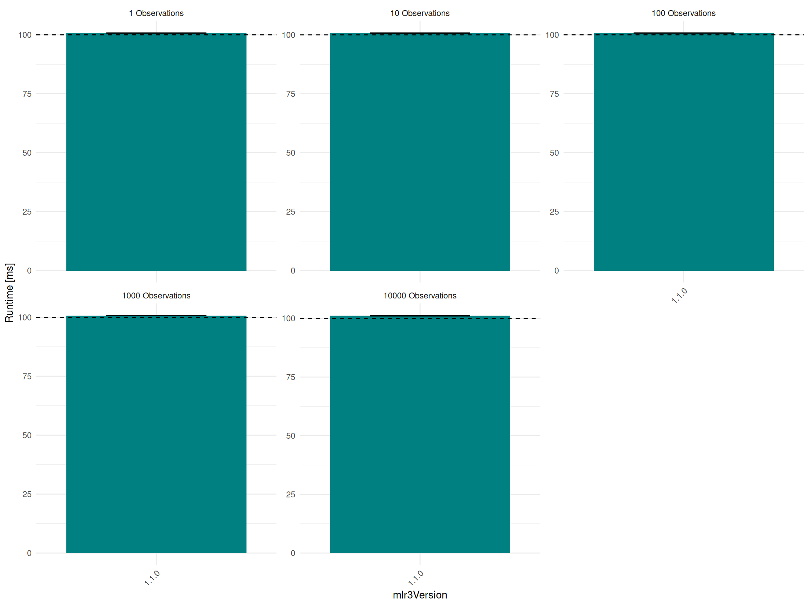
$predict_newdata_fast() with models trained for 100 ms depending on the mlr3 version. The dashed line indicates the total training time of the models. Error bars represent the median absolute deviation of the runtime.| mlr3 Version | paradox Version | Model Time [ms] | Task Size | Median Runtime [ms] | K |
|---|---|---|---|---|---|
| 1 Observation | |||||
| 1.1.0 | 1.0.1 | 100 | 1 | 101 | 1.0 |
| 10 Observations | |||||
| 1.1.0 | 1.0.1 | 100 | 10 | 101 | 1.0 |
| 100 Observations | |||||
| 1.1.0 | 1.0.1 | 100 | 100 | 101 | 1.0 |
| 1000 Observations | |||||
| 1.1.0 | 1.0.1 | 100 | 1000 | 101 | 1.0 |
| 10000 Observations | |||||
| 1.1.0 | 1.0.1 | 100 | 10000 | 101 | 1.0 |
Model Time 10 ms
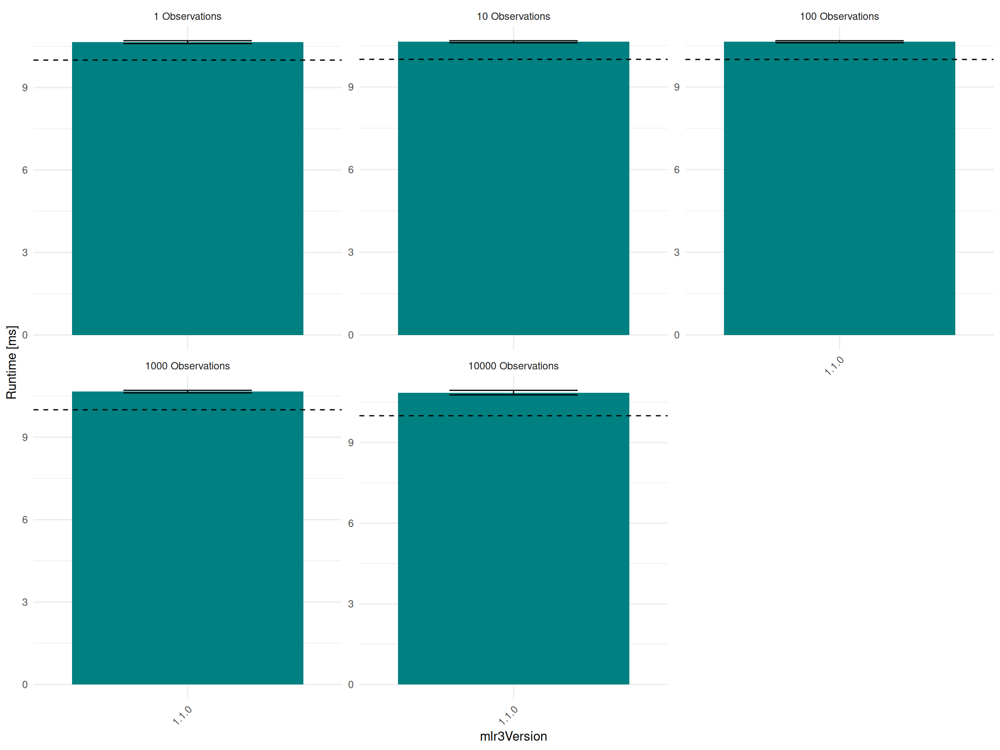
$predict_newdata_fast() with models trained for 10 ms depending on the mlr3 version. The dashed line indicates the total training time of the models. Error bars represent the median absolute deviation of the runtime.| mlr3 Version | paradox Version | Model Time [ms] | Task Size | Median Runtime [ms] | K |
|---|---|---|---|---|---|
| 1 Observation | |||||
| 1.1.0 | 1.0.1 | 10 | 1 | 11 | 1.1 |
| 10 Observations | |||||
| 1.1.0 | 1.0.1 | 10 | 10 | 11 | 1.1 |
| 100 Observations | |||||
| 1.1.0 | 1.0.1 | 10 | 100 | 11 | 1.1 |
| 1000 Observations | |||||
| 1.1.0 | 1.0.1 | 10 | 1000 | 11 | 1.1 |
| 10000 Observations | |||||
| 1.1.0 | 1.0.1 | 10 | 10000 | 11 | 1.1 |
Model Time 1 ms
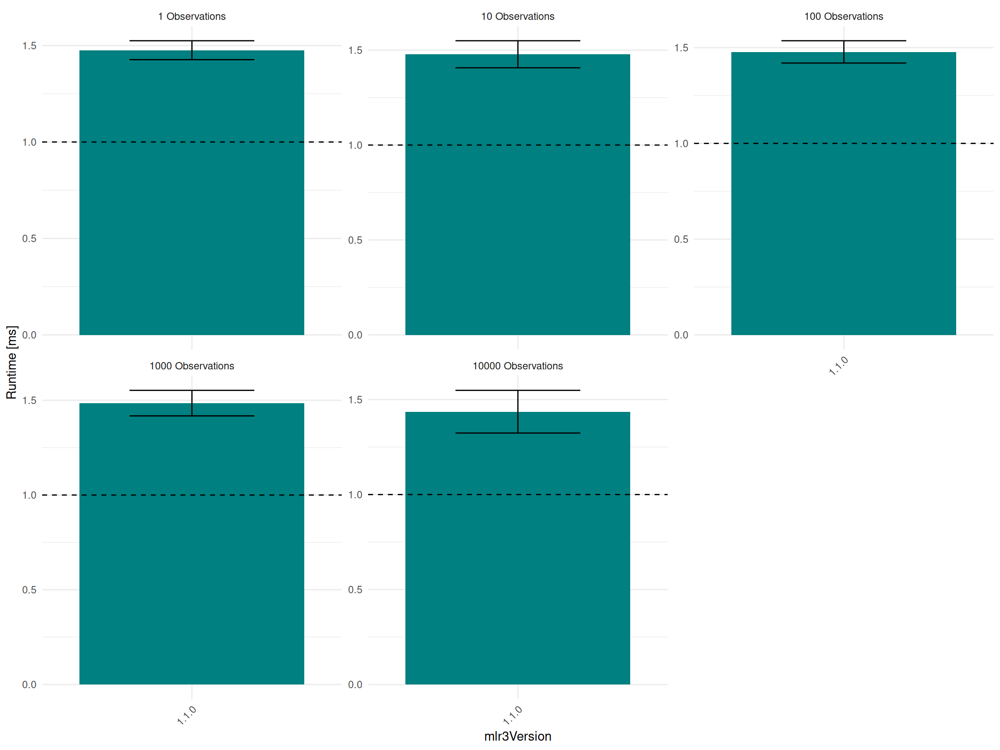
$predict_newdata_fast() with models trained for 1 ms depending on the mlr3 version. The dashed line indicates the total training time of the models. Error bars represent the median absolute deviation of the runtime.| mlr3 Version | paradox Version | Model Time [ms] | Task Size | Median Runtime [ms] | K |
|---|---|---|---|---|---|
| 1 Observation | |||||
| 1.1.0 | 1.0.1 | 1 | 1 | 1 | 1.5 |
| 10 Observations | |||||
| 1.1.0 | 1.0.1 | 1 | 10 | 1 | 1.5 |
| 100 Observations | |||||
| 1.1.0 | 1.0.1 | 1 | 100 | 1 | 1.5 |
| 1000 Observations | |||||
| 1.1.0 | 1.0.1 | 1 | 1000 | 1 | 1.5 |
| 10000 Observations | |||||
| 1.1.0 | 1.0.1 | 1 | 10000 | 1 | 1.4 |
Resampling
The runtime and memory usage of the resample() function is measured for different mlr3 versions. The models are trained for different amounts of time (1 ms, 10 ms, 100 ms, and 1000 ms) on the spam dataset with 1000 and 10,000 observations. The resampling iterations (evals) are set to 1000, 100, and 10.
task = tsk("spam")
learner = lrn("classif.sleep",
sleep_train = model_time / 2,
sleep_predict = model_time / 2)
resampling = rsmp("subsampling", repeats = evals)
resample(task, learner, resampling)Model Time 1000 ms

resample() with models trained for 1000 ms depending on the mlr3 version. The dashed line indicates the total training time of the models. Error bars represent the median absolute deviation of the runtime.| mlr3 Version | paradox Version | Model Time [ms] | Resampling Iterations | Total Model Time [s] | Median Runtime [s] | Median Runtime 10,000 [s] | K | Median Memory [MB] | Median Memory 10,000 [s] |
|---|---|---|---|---|---|---|---|---|---|
| 10 Resampling Iterations | |||||||||
| 0.13.4 | 0.9.0 | 1000 | 10 | 10 | 12 | 11 | 1.2 | 175 | 203 |
| 0.14.2 | 0.10.0 | 1000 | 10 | 10 | 12 | 11 | 1.2 | 174 | 203 |
| 0.15.0 | 0.11.1 | 1000 | 10 | 10 | 13 | 11 | 1.3 | 174 | 203 |
| 0.16.0 | 0.11.1 | 1000 | 10 | 10 | 11 | 11 | 1.1 | 174 | 203 |
| 0.17.0 | 0.11.1 | 1000 | 10 | 10 | 10 | 10 | 1.0 | 175 | 203 |
| 0.17.1 | 0.11.1 | 1000 | 10 | 10 | 10 | 10 | 1.0 | 175 | 203 |
| 0.17.2 | 0.11.1 | 1000 | 10 | 10 | 10 | 10 | 1.0 | 175 | 203 |
| 0.18.0 | 0.11.1 | 1000 | 10 | 10 | 10 | 10 | 1.0 | 175 | 203 |
| 0.19.0 | 0.11.1 | 1000 | 10 | 10 | 10 | 10 | 1.0 | 175 | 203 |
| 0.20.0 | 1.0.0 | 1000 | 10 | 10 | 10 | 10 | 1.0 | 167 | 193 |
| 0.20.1 | 1.0.1 | 1000 | 10 | 10 | 10 | 10 | 1.0 | 165 | 198 |
| 0.20.2 | 1.0.1 | 1000 | 10 | 10 | 10 | 10 | 1.0 | 165 | 197 |
| 0.21.0 | 1.0.1 | 1000 | 10 | 10 | 10 | 10 | 1.0 | 164 | 202 |
| 0.21.1 | 1.0.1 | 1000 | 10 | 10 | 10 | 10 | 1.0 | 164 | 202 |
| 0.22.0 | 1.0.1 | 1000 | 10 | 10 | 10 | 10 | 1.0 | 163 | 200 |
| 0.22.1 | 1.0.1 | 1000 | 10 | 10 | 10 | 10 | 1.0 | 163 | 200 |
| 100 Resampling Iterations | |||||||||
| 0.13.4 | 0.9.0 | 1000 | 100 | 100 | 110 | 100 | 1.1 | 222 | 203 |
| 0.14.2 | 0.10.0 | 1000 | 100 | 100 | 110 | 110 | 1.1 | 224 | 206 |
| 0.15.0 | 0.11.1 | 1000 | 100 | 100 | 110 | 110 | 1.1 | 224 | 205 |
| 0.16.0 | 0.11.1 | 1000 | 100 | 100 | 110 | 100 | 1.1 | 224 | 206 |
| 0.17.0 | 0.11.1 | 1000 | 100 | 100 | 100 | 100 | 1.0 | 247 | 209 |
| 0.17.1 | 0.11.1 | 1000 | 100 | 100 | 100 | 100 | 1.0 | 207 | 203 |
| 0.17.2 | 0.11.1 | 1000 | 100 | 100 | 100 | 100 | 1.0 | 207 | 203 |
| 0.18.0 | 0.11.1 | 1000 | 100 | 100 | 100 | 100 | 1.0 | 207 | 203 |
| 0.19.0 | 0.11.1 | 1000 | 100 | 100 | 100 | 100 | 1.0 | 207 | 203 |
| 0.20.0 | 1.0.0 | 1000 | 100 | 100 | 100 | 100 | 1.0 | 241 | 226 |
| 0.20.1 | 1.0.1 | 1000 | 100 | 100 | 100 | 100 | 1.0 | 206 | 200 |
| 0.20.2 | 1.0.1 | 1000 | 100 | 100 | 100 | 100 | 1.0 | 206 | 200 |
| 0.21.0 | 1.0.1 | 1000 | 100 | 100 | 100 | 100 | 1.0 | 182 | 202 |
| 0.21.1 | 1.0.1 | 1000 | 100 | 100 | 100 | 100 | 1.0 | 182 | 202 |
| 0.22.0 | 1.0.1 | 1000 | 100 | 100 | 100 | 100 | 1.0 | 179 | 206 |
| 0.22.1 | 1.0.1 | 1000 | 100 | 100 | 100 | 100 | 1.0 | 179 | 204 |
Model Time 100 ms

resample() with models trained for 100 ms depending on the mlr3 version. The dashed line indicates the total training time of the models. Error bars represent the median absolute deviation of the runtime.| mlr3 Version | paradox Version | Model Time [ms] | Resampling Iterations | Total Model Time [s] | Median Runtime [s] | Median Runtime 10,000 [s] | K | Median Memory [MB] | Median Memory 10,000 [s] |
|---|---|---|---|---|---|---|---|---|---|
| 10 Resampling Iterations | |||||||||
| 0.13.4 | 0.9.0 | 100 | 10 | 1 | 1.9 | 3.6 | 1.9 | 175 | 203 |
| 0.14.2 | 0.10.0 | 100 | 10 | 1 | 3.4 | 2.9 | 3.4 | 174 | 203 |
| 0.15.0 | 0.11.1 | 100 | 10 | 1 | 3.1 | 2.9 | 3.1 | 174 | 203 |
| 0.16.0 | 0.11.1 | 100 | 10 | 1 | 1.9 | 2.7 | 1.9 | 174 | 203 |
| 0.17.0 | 0.11.1 | 100 | 10 | 1 | 1.1 | 1.1 | 1.1 | 175 | 203 |
| 0.17.1 | 0.11.1 | 100 | 10 | 1 | 1.1 | 1.1 | 1.1 | 175 | 203 |
| 0.17.2 | 0.11.1 | 100 | 10 | 1 | 1.1 | 1.1 | 1.1 | 175 | 203 |
| 0.18.0 | 0.11.1 | 100 | 10 | 1 | 1.1 | 1.1 | 1.1 | 175 | 203 |
| 0.19.0 | 0.11.1 | 100 | 10 | 1 | 1.1 | 1.1 | 1.1 | 175 | 203 |
| 0.20.0 | 1.0.0 | 100 | 10 | 1 | 1.1 | 1.1 | 1.1 | 167 | 193 |
| 0.20.1 | 1.0.1 | 100 | 10 | 1 | 1.1 | 1.1 | 1.1 | 165 | 198 |
| 0.20.2 | 1.0.1 | 100 | 10 | 1 | 1.1 | 1.1 | 1.1 | 165 | 197 |
| 0.21.0 | 1.0.1 | 100 | 10 | 1 | 1.1 | 1.1 | 1.1 | 164 | 202 |
| 0.21.1 | 1.0.1 | 100 | 10 | 1 | 1.1 | 1.1 | 1.1 | 164 | 202 |
| 0.22.0 | 1.0.1 | 100 | 10 | 1 | 1.1 | 1.1 | 1.1 | 163 | 200 |
| 0.22.1 | 1.0.1 | 100 | 10 | 1 | 1.1 | 1.1 | 1.1 | 163 | 200 |
| 100 Resampling Iterations | |||||||||
| 0.13.4 | 0.9.0 | 100 | 100 | 10 | 31 | 24 | 3.1 | 222 | 203 |
| 0.14.2 | 0.10.0 | 100 | 100 | 10 | 16 | 27 | 1.6 | 224 | 206 |
| 0.15.0 | 0.11.1 | 100 | 100 | 10 | 20 | 34 | 2.0 | 224 | 205 |
| 0.16.0 | 0.11.1 | 100 | 100 | 10 | 20 | 47 | 2.0 | 224 | 206 |
| 0.17.0 | 0.11.1 | 100 | 100 | 10 | 11 | 12 | 1.1 | 247 | 209 |
| 0.17.1 | 0.11.1 | 100 | 100 | 10 | 11 | 11 | 1.1 | 207 | 203 |
| 0.17.2 | 0.11.1 | 100 | 100 | 10 | 11 | 11 | 1.1 | 207 | 203 |
| 0.18.0 | 0.11.1 | 100 | 100 | 10 | 11 | 11 | 1.1 | 207 | 203 |
| 0.19.0 | 0.11.1 | 100 | 100 | 10 | 11 | 11 | 1.1 | 207 | 203 |
| 0.20.0 | 1.0.0 | 100 | 100 | 10 | 11 | 11 | 1.1 | 241 | 226 |
| 0.20.1 | 1.0.1 | 100 | 100 | 10 | 11 | 11 | 1.1 | 206 | 200 |
| 0.20.2 | 1.0.1 | 100 | 100 | 10 | 11 | 11 | 1.1 | 206 | 200 |
| 0.21.0 | 1.0.1 | 100 | 100 | 10 | 11 | 11 | 1.1 | 182 | 202 |
| 0.21.1 | 1.0.1 | 100 | 100 | 10 | 11 | 11 | 1.1 | 182 | 202 |
| 0.22.0 | 1.0.1 | 100 | 100 | 10 | 11 | 11 | 1.1 | 179 | 206 |
| 0.22.1 | 1.0.1 | 100 | 100 | 10 | 11 | 11 | 1.1 | 179 | 204 |
| 1000 Resampling Iterations | |||||||||
| 0.13.4 | 0.9.0 | 100 | 1000 | 100 | 150 | 170 | 1.5 | 343 | 625 |
| 0.14.2 | 0.10.0 | 100 | 1000 | 100 | 140 | 170 | 1.4 | 315 | 680 |
| 0.15.0 | 0.11.1 | 100 | 1000 | 100 | 150 | 180 | 1.5 | 350 | 613 |
| 0.16.0 | 0.11.1 | 100 | 1000 | 100 | 130 | 160 | 1.3 | 316 | 564 |
| 0.17.0 | 0.11.1 | 100 | 1000 | 100 | 110 | 140 | 1.1 | 342 | 574 |
| 0.17.1 | 0.11.1 | 100 | 1000 | 100 | 110 | 110 | 1.1 | 266 | 406 |
| 0.17.2 | 0.11.1 | 100 | 1000 | 100 | 110 | 110 | 1.1 | 266 | 405 |
| 0.18.0 | 0.11.1 | 100 | 1000 | 100 | 110 | 110 | 1.1 | 267 | 408 |
| 0.19.0 | 0.11.1 | 100 | 1000 | 100 | 110 | 110 | 1.1 | 266 | 396 |
| 0.20.0 | 1.0.0 | 100 | 1000 | 100 | 110 | 110 | 1.1 | 312 | 437 |
| 0.20.1 | 1.0.1 | 100 | 1000 | 100 | 110 | 110 | 1.1 | 267 | 385 |
| 0.20.2 | 1.0.1 | 100 | 1000 | 100 | 110 | 110 | 1.1 | 267 | 385 |
| 0.21.0 | 1.0.1 | 100 | 1000 | 100 | 110 | 110 | 1.1 | 225 | 355 |
| 0.21.1 | 1.0.1 | 100 | 1000 | 100 | 110 | 110 | 1.1 | 225 | 355 |
| 0.22.0 | 1.0.1 | 100 | 1000 | 100 | 110 | 110 | 1.1 | 225 | 381 |
| 0.22.1 | 1.0.1 | 100 | 1000 | 100 | 110 | 110 | 1.1 | 225 | 382 |
Model Time 10 ms

resample() with models trained for 10 ms depending on the mlr3 version. The dashed line indicates the total training time of the models. Error bars represent the median absolute deviation of the runtime.| mlr3 Version | paradox Version | Model Time [ms] | Resampling Iterations | Total Model Time [s] | Median Runtime [s] | Median Runtime 10,000 [s] | K | Median Memory [MB] | Median Memory 10,000 [s] |
|---|---|---|---|---|---|---|---|---|---|
| 10 Resampling Iterations | |||||||||
| 0.13.4 | 0.9.0 | 10 | 10 | 0.1 | 1.2 | 0.91 | 12 | 175 | 203 |
| 0.14.2 | 0.10.0 | 10 | 10 | 0.1 | 1.2 | 0.76 | 12 | 174 | 203 |
| 0.15.0 | 0.11.1 | 10 | 10 | 0.1 | 1.8 | 1.4 | 18 | 174 | 203 |
| 0.16.0 | 0.11.1 | 10 | 10 | 0.1 | 1.2 | 1.1 | 12 | 174 | 203 |
| 0.17.0 | 0.11.1 | 10 | 10 | 0.1 | 0.19 | 0.21 | 1.9 | 175 | 203 |
| 0.17.1 | 0.11.1 | 10 | 10 | 0.1 | 0.19 | 0.21 | 1.9 | 175 | 203 |
| 0.17.2 | 0.11.1 | 10 | 10 | 0.1 | 0.19 | 0.21 | 1.9 | 175 | 203 |
| 0.18.0 | 0.11.1 | 10 | 10 | 0.1 | 0.19 | 0.21 | 1.9 | 175 | 203 |
| 0.19.0 | 0.11.1 | 10 | 10 | 0.1 | 0.19 | 0.21 | 1.9 | 175 | 203 |
| 0.20.0 | 1.0.0 | 10 | 10 | 0.1 | 0.22 | 0.25 | 2.2 | 167 | 193 |
| 0.20.1 | 1.0.1 | 10 | 10 | 0.1 | 0.19 | 0.21 | 1.9 | 165 | 198 |
| 0.20.2 | 1.0.1 | 10 | 10 | 0.1 | 0.19 | 0.21 | 1.9 | 165 | 197 |
| 0.21.0 | 1.0.1 | 10 | 10 | 0.1 | 0.18 | 0.20 | 1.8 | 164 | 202 |
| 0.21.1 | 1.0.1 | 10 | 10 | 0.1 | 0.18 | 0.21 | 1.8 | 164 | 202 |
| 0.22.0 | 1.0.1 | 10 | 10 | 0.1 | 0.19 | 0.20 | 1.9 | 163 | 200 |
| 0.22.1 | 1.0.1 | 10 | 10 | 0.1 | 0.18 | 0.20 | 1.8 | 163 | 200 |
| 100 Resampling Iterations | |||||||||
| 0.13.4 | 0.9.0 | 10 | 100 | 1.0 | 13 | 12 | 13 | 222 | 203 |
| 0.14.2 | 0.10.0 | 10 | 100 | 1.0 | 8.8 | 9.6 | 8.8 | 224 | 206 |
| 0.15.0 | 0.11.1 | 10 | 100 | 1.0 | 19 | 9.2 | 19 | 224 | 205 |
| 0.16.0 | 0.11.1 | 10 | 100 | 1.0 | 12 | 10 | 12 | 224 | 206 |
| 0.17.0 | 0.11.1 | 10 | 100 | 1.0 | 1.9 | 2.4 | 1.9 | 247 | 209 |
| 0.17.1 | 0.11.1 | 10 | 100 | 1.0 | 1.8 | 2.1 | 1.8 | 207 | 203 |
| 0.17.2 | 0.11.1 | 10 | 100 | 1.0 | 1.8 | 2.1 | 1.8 | 207 | 203 |
| 0.18.0 | 0.11.1 | 10 | 100 | 1.0 | 1.8 | 2.0 | 1.8 | 207 | 203 |
| 0.19.0 | 0.11.1 | 10 | 100 | 1.0 | 1.8 | 2.0 | 1.8 | 207 | 203 |
| 0.20.0 | 1.0.0 | 10 | 100 | 1.0 | 2.2 | 2.4 | 2.2 | 241 | 226 |
| 0.20.1 | 1.0.1 | 10 | 100 | 1.0 | 1.8 | 2.1 | 1.8 | 206 | 200 |
| 0.20.2 | 1.0.1 | 10 | 100 | 1.0 | 1.8 | 2.0 | 1.8 | 206 | 200 |
| 0.21.0 | 1.0.1 | 10 | 100 | 1.0 | 1.7 | 2.0 | 1.7 | 182 | 202 |
| 0.21.1 | 1.0.1 | 10 | 100 | 1.0 | 1.8 | 2.0 | 1.8 | 182 | 202 |
| 0.22.0 | 1.0.1 | 10 | 100 | 1.0 | 1.7 | 2.0 | 1.7 | 179 | 206 |
| 0.22.1 | 1.0.1 | 10 | 100 | 1.0 | 1.8 | 2.0 | 1.8 | 179 | 204 |
| 1000 Resampling Iterations | |||||||||
| 0.13.4 | 0.9.0 | 10 | 1000 | 10.0 | 95 | 170 | 9.5 | 343 | 625 |
| 0.14.2 | 0.10.0 | 10 | 1000 | 10.0 | 86 | 120 | 8.6 | 315 | 680 |
| 0.15.0 | 0.11.1 | 10 | 1000 | 10.0 | 140 | 150 | 14 | 350 | 613 |
| 0.16.0 | 0.11.1 | 10 | 1000 | 10.0 | 110 | 140 | 11 | 316 | 564 |
| 0.17.0 | 0.11.1 | 10 | 1000 | 10.0 | 22 | 54 | 2.2 | 342 | 574 |
| 0.17.1 | 0.11.1 | 10 | 1000 | 10.0 | 18 | 20 | 1.8 | 266 | 406 |
| 0.17.2 | 0.11.1 | 10 | 1000 | 10.0 | 18 | 20 | 1.8 | 266 | 405 |
| 0.18.0 | 0.11.1 | 10 | 1000 | 10.0 | 18 | 20 | 1.8 | 267 | 408 |
| 0.19.0 | 0.11.1 | 10 | 1000 | 10.0 | 18 | 20 | 1.8 | 266 | 396 |
| 0.20.0 | 1.0.0 | 10 | 1000 | 10.0 | 22 | 24 | 2.2 | 312 | 437 |
| 0.20.1 | 1.0.1 | 10 | 1000 | 10.0 | 18 | 20 | 1.8 | 267 | 385 |
| 0.20.2 | 1.0.1 | 10 | 1000 | 10.0 | 18 | 20 | 1.8 | 267 | 385 |
| 0.21.0 | 1.0.1 | 10 | 1000 | 10.0 | 18 | 19 | 1.8 | 225 | 355 |
| 0.21.1 | 1.0.1 | 10 | 1000 | 10.0 | 18 | 19 | 1.8 | 225 | 355 |
| 0.22.0 | 1.0.1 | 10 | 1000 | 10.0 | 18 | 19 | 1.8 | 225 | 381 |
| 0.22.1 | 1.0.1 | 10 | 1000 | 10.0 | 17 | 19 | 1.7 | 225 | 382 |
Model Time 1 ms

resample() with models trained for 1 ms depending on the mlr3 version. The dashed line indicates the total training time of the models. Error bars represent the median absolute deviation of the runtime.| mlr3 Version | paradox Version | Model Time [ms] | Resampling Iterations | Total Model Time [s] | Median Runtime [s] | Median Runtime 10,000 [s] | K | Median Memory [MB] | Median Memory 10,000 [s] |
|---|---|---|---|---|---|---|---|---|---|
| 10 Resampling Iterations | |||||||||
| 0.13.4 | 0.9.0 | 1 | 10 | 0.01 | 0.89 | 1.3 | 89 | 175 | 203 |
| 0.14.2 | 0.10.0 | 1 | 10 | 0.01 | 1.3 | 1.3 | 130 | 174 | 203 |
| 0.15.0 | 0.11.1 | 1 | 10 | 0.01 | 1.4 | 1.9 | 140 | 174 | 203 |
| 0.16.0 | 0.11.1 | 1 | 10 | 0.01 | 1.3 | 1.3 | 130 | 174 | 203 |
| 0.17.0 | 0.11.1 | 1 | 10 | 0.01 | 0.11 | 0.13 | 11 | 175 | 203 |
| 0.17.1 | 0.11.1 | 1 | 10 | 0.01 | 0.10 | 0.13 | 10 | 175 | 203 |
| 0.17.2 | 0.11.1 | 1 | 10 | 0.01 | 0.098 | 0.13 | 9.8 | 175 | 203 |
| 0.18.0 | 0.11.1 | 1 | 10 | 0.01 | 0.10 | 0.13 | 10 | 175 | 203 |
| 0.19.0 | 0.11.1 | 1 | 10 | 0.01 | 0.11 | 0.12 | 11 | 175 | 203 |
| 0.20.0 | 1.0.0 | 1 | 10 | 0.01 | 0.14 | 0.16 | 14 | 167 | 193 |
| 0.20.1 | 1.0.1 | 1 | 10 | 0.01 | 0.10 | 0.13 | 10 | 165 | 198 |
| 0.20.2 | 1.0.1 | 1 | 10 | 0.01 | 0.10 | 0.13 | 10 | 165 | 197 |
| 0.21.0 | 1.0.1 | 1 | 10 | 0.01 | 0.093 | 0.12 | 9.3 | 164 | 202 |
| 0.21.1 | 1.0.1 | 1 | 10 | 0.01 | 0.087 | 0.12 | 8.7 | 164 | 202 |
| 0.22.0 | 1.0.1 | 1 | 10 | 0.01 | 0.085 | 0.11 | 8.5 | 163 | 200 |
| 0.22.1 | 1.0.1 | 1 | 10 | 0.01 | 0.084 | 0.11 | 8.4 | 163 | 200 |
| 100 Resampling Iterations | |||||||||
| 0.13.4 | 0.9.0 | 1 | 100 | 0.10 | 10 | 13 | 100 | 222 | 203 |
| 0.14.2 | 0.10.0 | 1 | 100 | 0.10 | 12 | 15 | 120 | 224 | 206 |
| 0.15.0 | 0.11.1 | 1 | 100 | 0.10 | 19 | 17 | 190 | 224 | 205 |
| 0.16.0 | 0.11.1 | 1 | 100 | 0.10 | 11 | 9.5 | 110 | 224 | 206 |
| 0.17.0 | 0.11.1 | 1 | 100 | 0.10 | 0.97 | 1.6 | 9.7 | 247 | 209 |
| 0.17.1 | 0.11.1 | 1 | 100 | 0.10 | 0.93 | 1.2 | 9.3 | 207 | 203 |
| 0.17.2 | 0.11.1 | 1 | 100 | 0.10 | 0.94 | 1.2 | 9.4 | 207 | 203 |
| 0.18.0 | 0.11.1 | 1 | 100 | 0.10 | 0.90 | 1.2 | 9.0 | 207 | 203 |
| 0.19.0 | 0.11.1 | 1 | 100 | 0.10 | 0.90 | 1.2 | 9.0 | 207 | 203 |
| 0.20.0 | 1.0.0 | 1 | 100 | 0.10 | 1.3 | 1.5 | 13 | 241 | 226 |
| 0.20.1 | 1.0.1 | 1 | 100 | 0.10 | 0.92 | 1.2 | 9.2 | 206 | 200 |
| 0.20.2 | 1.0.1 | 1 | 100 | 0.10 | 0.91 | 1.2 | 9.1 | 206 | 200 |
| 0.21.0 | 1.0.1 | 1 | 100 | 0.10 | 0.89 | 1.1 | 8.9 | 182 | 202 |
| 0.21.1 | 1.0.1 | 1 | 100 | 0.10 | 0.87 | 1.1 | 8.7 | 182 | 202 |
| 0.22.0 | 1.0.1 | 1 | 100 | 0.10 | 0.81 | 0.96 | 8.1 | 179 | 206 |
| 0.22.1 | 1.0.1 | 1 | 100 | 0.10 | 0.84 | 0.97 | 8.4 | 179 | 204 |
| 1000 Resampling Iterations | |||||||||
| 0.13.4 | 0.9.0 | 1 | 1000 | 1.00 | 110 | 160 | 110 | 343 | 625 |
| 0.14.2 | 0.10.0 | 1 | 1000 | 1.00 | 130 | 110 | 130 | 315 | 680 |
| 0.15.0 | 0.11.1 | 1 | 1000 | 1.00 | 180 | 150 | 180 | 350 | 613 |
| 0.16.0 | 0.11.1 | 1 | 1000 | 1.00 | 87 | 120 | 87 | 316 | 564 |
| 0.17.0 | 0.11.1 | 1 | 1000 | 1.00 | 14 | 47 | 14 | 342 | 574 |
| 0.17.1 | 0.11.1 | 1 | 1000 | 1.00 | 9.7 | 12 | 9.7 | 266 | 406 |
| 0.17.2 | 0.11.1 | 1 | 1000 | 1.00 | 9.7 | 12 | 9.7 | 266 | 405 |
| 0.18.0 | 0.11.1 | 1 | 1000 | 1.00 | 9.5 | 12 | 9.5 | 267 | 408 |
| 0.19.0 | 0.11.1 | 1 | 1000 | 1.00 | 9.5 | 12 | 9.5 | 266 | 396 |
| 0.20.0 | 1.0.0 | 1 | 1000 | 1.00 | 13 | 16 | 13 | 312 | 437 |
| 0.20.1 | 1.0.1 | 1 | 1000 | 1.00 | 9.2 | 11 | 9.2 | 267 | 385 |
| 0.20.2 | 1.0.1 | 1 | 1000 | 1.00 | 9.2 | 11 | 9.2 | 267 | 385 |
| 0.21.0 | 1.0.1 | 1 | 1000 | 1.00 | 8.8 | 10 | 8.8 | 225 | 355 |
| 0.21.1 | 1.0.1 | 1 | 1000 | 1.00 | 8.6 | 9.8 | 8.6 | 225 | 355 |
| 0.22.0 | 1.0.1 | 1 | 1000 | 1.00 | 8.4 | 9.9 | 8.4 | 225 | 381 |
| 0.22.1 | 1.0.1 | 1 | 1000 | 1.00 | 8.4 | 10 | 8.4 | 225 | 382 |
Memory

resample() depending on the mlr3 version and the number of resampling iterations. Error bars represent the median absolute deviation of the memory usage.Benchmark
The runtime and memory usage of the benchmark() function is measured for different mlr3 versions. The models are trained for different amounts of time (1 ms, 10 ms, 100 ms, and 1000 ms) on the spam dataset with 1000 and 10,000 observations. The resampling iterations (evals) are set to 1000, 100, and 10.
task = tsk("spam")
learner = lrn("classif.sleep",
sleep_train = model_time / 2,
sleep_predict = model_time / 2)
resampling = rsmp("subsampling", repeats = instance$evals / 5)
design = benchmark_grid(task, replicate(5, learner), resampling)
benchmark(design)Model Time 1000 ms

benchmark() with models trained for 1000 ms depending on the mlr3 version. The dashed line indicates the total training time of the models. Error bars represent the median absolute deviation of the runtime.| mlr3 Version | paradox Version | Model Time [ms] | Resampling Iterations | Total Model Time [s] | Median Runtime [s] | Median Runtime 10,000 [s] | K | Median Memory [MB] | Median Memory 10,000 [s] |
|---|---|---|---|---|---|---|---|---|---|
| 10 Resampling Iterations | |||||||||
| 0.13.4 | 0.9.0 | 1000 | 10 | 10 | 11 | 11 | 1.1 | 170 | 204 |
| 0.14.2 | 0.10.0 | 1000 | 10 | 10 | 18 | 16 | 1.8 | 170 | 204 |
| 0.15.0 | 0.11.1 | 1000 | 10 | 10 | 11 | 12 | 1.1 | 170 | 204 |
| 0.16.0 | 0.11.1 | 1000 | 10 | 10 | 12 | 12 | 1.2 | 170 | 204 |
| 0.17.0 | 0.11.1 | 1000 | 10 | 10 | 10 | 10 | 1.0 | 171 | 204 |
| 0.17.1 | 0.11.1 | 1000 | 10 | 10 | 10 | 10 | 1.0 | 171 | 204 |
| 0.17.2 | 0.11.1 | 1000 | 10 | 10 | 10 | 10 | 1.0 | 171 | 204 |
| 0.18.0 | 0.11.1 | 1000 | 10 | 10 | 10 | 10 | 1.0 | 171 | 204 |
| 0.19.0 | 0.11.1 | 1000 | 10 | 10 | 10 | 10 | 1.0 | 171 | 204 |
| 0.20.0 | 1.0.0 | 1000 | 10 | 10 | 10 | 10 | 1.0 | 168 | 194 |
| 0.20.1 | 1.0.1 | 1000 | 10 | 10 | 10 | 10 | 1.0 | 167 | 199 |
| 0.20.2 | 1.0.1 | 1000 | 10 | 10 | 10 | 10 | 1.0 | 167 | 199 |
| 0.21.0 | 1.0.1 | 1000 | 10 | 10 | 10 | 10 | 1.0 | 166 | 202 |
| 0.21.1 | 1.0.1 | 1000 | 10 | 10 | 10 | 10 | 1.0 | 166 | 202 |
| 100 Resampling Iterations | |||||||||
| 0.13.4 | 0.9.0 | 1000 | 100 | 100 | 130 | 120 | 1.3 | 225 | 202 |
| 0.14.2 | 0.10.0 | 1000 | 100 | 100 | 150 | 120 | 1.5 | 225 | 203 |
| 0.15.0 | 0.11.1 | 1000 | 100 | 100 | 120 | 120 | 1.2 | 225 | 214 |
| 0.16.0 | 0.11.1 | 1000 | 100 | 100 | 120 | 120 | 1.2 | 225 | 215 |
| 0.17.0 | 0.11.1 | 1000 | 100 | 100 | 100 | 100 | 1.0 | 224 | 202 |
| 0.17.1 | 0.11.1 | 1000 | 100 | 100 | 100 | 100 | 1.0 | 209 | 204 |
| 0.17.2 | 0.11.1 | 1000 | 100 | 100 | 100 | 100 | 1.0 | 209 | 204 |
| 0.18.0 | 0.11.1 | 1000 | 100 | 100 | 100 | 100 | 1.0 | 209 | 204 |
| 0.19.0 | 0.11.1 | 1000 | 100 | 100 | 100 | 100 | 1.0 | 209 | 204 |
| 0.20.0 | 1.0.0 | 1000 | 100 | 100 | 100 | 100 | 1.0 | 242 | 206 |
| 0.20.1 | 1.0.1 | 1000 | 100 | 100 | 100 | 100 | 1.0 | 205 | 200 |
| 0.20.2 | 1.0.1 | 1000 | 100 | 100 | 100 | 100 | 1.0 | 205 | 201 |
| 0.21.0 | 1.0.1 | 1000 | 100 | 100 | 100 | 100 | 1.0 | 183 | 202 |
| 0.21.1 | 1.0.1 | 1000 | 100 | 100 | 100 | 100 | 1.0 | 183 | 202 |
Model Time 100 ms

benchmark() with models trained for 100 ms depending on the mlr3 version. The dashed line indicates the total training time of the models. Error bars represent the median absolute deviation of the runtime.| mlr3 Version | paradox Version | Model Time [ms] | Resampling Iterations | Total Model Time [s] | Median Runtime [s] | Median Runtime 10,000 [s] | K | Median Memory [MB] | Median Memory 10,000 [s] |
|---|---|---|---|---|---|---|---|---|---|
| 10 Resampling Iterations | |||||||||
| 0.13.4 | 0.9.0 | 100 | 10 | 1 | 3.8 | 3.9 | 3.8 | 170 | 204 |
| 0.14.2 | 0.10.0 | 100 | 10 | 1 | 7.4 | 6.5 | 7.4 | 170 | 204 |
| 0.15.0 | 0.11.1 | 100 | 10 | 1 | 4.8 | 3.3 | 4.8 | 170 | 204 |
| 0.16.0 | 0.11.1 | 100 | 10 | 1 | 2.0 | 3.3 | 2.0 | 170 | 204 |
| 0.17.0 | 0.11.1 | 100 | 10 | 1 | 1.1 | 1.1 | 1.1 | 171 | 204 |
| 0.17.1 | 0.11.1 | 100 | 10 | 1 | 1.1 | 1.1 | 1.1 | 171 | 204 |
| 0.17.2 | 0.11.1 | 100 | 10 | 1 | 1.1 | 1.1 | 1.1 | 171 | 204 |
| 0.18.0 | 0.11.1 | 100 | 10 | 1 | 1.1 | 1.1 | 1.1 | 171 | 204 |
| 0.19.0 | 0.11.1 | 100 | 10 | 1 | 1.1 | 1.1 | 1.1 | 171 | 204 |
| 0.20.0 | 1.0.0 | 100 | 10 | 1 | 1.1 | 1.1 | 1.1 | 168 | 194 |
| 0.20.1 | 1.0.1 | 100 | 10 | 1 | 1.1 | 1.1 | 1.1 | 167 | 199 |
| 0.20.2 | 1.0.1 | 100 | 10 | 1 | 1.1 | 1.1 | 1.1 | 167 | 199 |
| 0.21.0 | 1.0.1 | 100 | 10 | 1 | 1.1 | 1.1 | 1.1 | 166 | 202 |
| 0.21.1 | 1.0.1 | 100 | 10 | 1 | 1.1 | 1.1 | 1.1 | 166 | 202 |
| 100 Resampling Iterations | |||||||||
| 0.13.4 | 0.9.0 | 100 | 100 | 10 | 42 | 30 | 4.2 | 225 | 202 |
| 0.14.2 | 0.10.0 | 100 | 100 | 10 | 75 | 44 | 7.5 | 225 | 203 |
| 0.15.0 | 0.11.1 | 100 | 100 | 10 | 48 | 28 | 4.8 | 225 | 214 |
| 0.16.0 | 0.11.1 | 100 | 100 | 10 | 45 | 37 | 4.5 | 225 | 215 |
| 0.17.0 | 0.11.1 | 100 | 100 | 10 | 11 | 11 | 1.1 | 224 | 202 |
| 0.17.1 | 0.11.1 | 100 | 100 | 10 | 11 | 11 | 1.1 | 209 | 204 |
| 0.17.2 | 0.11.1 | 100 | 100 | 10 | 11 | 11 | 1.1 | 209 | 204 |
| 0.18.0 | 0.11.1 | 100 | 100 | 10 | 11 | 11 | 1.1 | 209 | 204 |
| 0.19.0 | 0.11.1 | 100 | 100 | 10 | 11 | 11 | 1.1 | 209 | 204 |
| 0.20.0 | 1.0.0 | 100 | 100 | 10 | 11 | 11 | 1.1 | 242 | 206 |
| 0.20.1 | 1.0.1 | 100 | 100 | 10 | 11 | 11 | 1.1 | 205 | 200 |
| 0.20.2 | 1.0.1 | 100 | 100 | 10 | 11 | 11 | 1.1 | 205 | 201 |
| 0.21.0 | 1.0.1 | 100 | 100 | 10 | 11 | 11 | 1.1 | 183 | 202 |
| 0.21.1 | 1.0.1 | 100 | 100 | 10 | 11 | 11 | 1.1 | 183 | 202 |
| 1000 Resampling Iterations | |||||||||
| 0.13.4 | 0.9.0 | 100 | 1000 | 100 | 230 | 220 | 2.3 | 322 | 425 |
| 0.14.2 | 0.10.0 | 100 | 1000 | 100 | 250 | 200 | 2.5 | 316 | 422 |
| 0.15.0 | 0.11.1 | 100 | 1000 | 100 | 210 | 250 | 2.1 | 325 | 457 |
| 0.16.0 | 0.11.1 | 100 | 1000 | 100 | 210 | 160 | 2.1 | 313 | 463 |
| 0.17.0 | 0.11.1 | 100 | 1000 | 100 | 110 | 120 | 1.1 | 293 | 388 |
| 0.17.1 | 0.11.1 | 100 | 1000 | 100 | 110 | 110 | 1.1 | 268 | 306 |
| 0.17.2 | 0.11.1 | 100 | 1000 | 100 | 110 | 110 | 1.1 | 268 | 306 |
| 0.18.0 | 0.11.1 | 100 | 1000 | 100 | 110 | 110 | 1.1 | 269 | 305 |
| 0.19.0 | 0.11.1 | 100 | 1000 | 100 | 110 | 110 | 1.1 | 269 | 311 |
| 0.20.0 | 1.0.0 | 100 | 1000 | 100 | 110 | 110 | 1.1 | 310 | 339 |
| 0.20.1 | 1.0.1 | 100 | 1000 | 100 | 110 | 110 | 1.1 | 265 | 300 |
| 0.20.2 | 1.0.1 | 100 | 1000 | 100 | 110 | 110 | 1.1 | 265 | 305 |
| 0.21.0 | 1.0.1 | 100 | 1000 | 100 | 110 | 110 | 1.1 | 222 | 281 |
| 0.21.1 | 1.0.1 | 100 | 1000 | 100 | 110 | 110 | 1.1 | 222 | 281 |
Model Time 10 ms

benchmark() with models trained for 10 ms depending on the mlr3 version. The dashed line indicates the total training time of the models. Error bars represent the median absolute deviation of the runtime.| mlr3 Version | paradox Version | Model Time [ms] | Resampling Iterations | Total Model Time [s] | Median Runtime [s] | Median Runtime 10,000 [s] | K | Median Memory [MB] | Median Memory 10,000 [s] |
|---|---|---|---|---|---|---|---|---|---|
| 10 Resampling Iterations | |||||||||
| 0.13.4 | 0.9.0 | 10 | 10 | 0.1 | 1.7 | 1.2 | 17 | 170 | 204 |
| 0.14.2 | 0.10.0 | 10 | 10 | 0.1 | 2.1 | 1.8 | 21 | 170 | 204 |
| 0.15.0 | 0.11.1 | 10 | 10 | 0.1 | 1.9 | 2.4 | 19 | 170 | 204 |
| 0.16.0 | 0.11.1 | 10 | 10 | 0.1 | 1.1 | 1.4 | 11 | 170 | 204 |
| 0.17.0 | 0.11.1 | 10 | 10 | 0.1 | 0.20 | 0.21 | 2.0 | 171 | 204 |
| 0.17.1 | 0.11.1 | 10 | 10 | 0.1 | 0.19 | 0.21 | 1.9 | 171 | 204 |
| 0.17.2 | 0.11.1 | 10 | 10 | 0.1 | 0.19 | 0.21 | 1.9 | 171 | 204 |
| 0.18.0 | 0.11.1 | 10 | 10 | 0.1 | 0.19 | 0.21 | 1.9 | 171 | 204 |
| 0.19.0 | 0.11.1 | 10 | 10 | 0.1 | 0.19 | 0.21 | 1.9 | 171 | 204 |
| 0.20.0 | 1.0.0 | 10 | 10 | 0.1 | 0.23 | 0.25 | 2.3 | 168 | 194 |
| 0.20.1 | 1.0.1 | 10 | 10 | 0.1 | 0.19 | 0.21 | 1.9 | 167 | 199 |
| 0.20.2 | 1.0.1 | 10 | 10 | 0.1 | 0.19 | 0.21 | 1.9 | 167 | 199 |
| 0.21.0 | 1.0.1 | 10 | 10 | 0.1 | 0.19 | 0.21 | 1.9 | 166 | 202 |
| 0.21.1 | 1.0.1 | 10 | 10 | 0.1 | 0.19 | 0.21 | 1.9 | 166 | 202 |
| 100 Resampling Iterations | |||||||||
| 0.13.4 | 0.9.0 | 10 | 100 | 1.0 | 15 | 11 | 15 | 225 | 202 |
| 0.14.2 | 0.10.0 | 10 | 100 | 1.0 | 20 | 20 | 20 | 225 | 203 |
| 0.15.0 | 0.11.1 | 10 | 100 | 1.0 | 22 | 24 | 22 | 225 | 214 |
| 0.16.0 | 0.11.1 | 10 | 100 | 1.0 | 22 | 16 | 22 | 225 | 215 |
| 0.17.0 | 0.11.1 | 10 | 100 | 1.0 | 1.8 | 2.1 | 1.8 | 224 | 202 |
| 0.17.1 | 0.11.1 | 10 | 100 | 1.0 | 1.8 | 2.0 | 1.8 | 209 | 204 |
| 0.17.2 | 0.11.1 | 10 | 100 | 1.0 | 1.8 | 2.0 | 1.8 | 209 | 204 |
| 0.18.0 | 0.11.1 | 10 | 100 | 1.0 | 1.8 | 2.0 | 1.8 | 209 | 204 |
| 0.19.0 | 0.11.1 | 10 | 100 | 1.0 | 1.8 | 2.0 | 1.8 | 209 | 204 |
| 0.20.0 | 1.0.0 | 10 | 100 | 1.0 | 2.2 | 2.3 | 2.2 | 242 | 206 |
| 0.20.1 | 1.0.1 | 10 | 100 | 1.0 | 1.8 | 2.0 | 1.8 | 205 | 200 |
| 0.20.2 | 1.0.1 | 10 | 100 | 1.0 | 1.8 | 2.0 | 1.8 | 205 | 201 |
| 0.21.0 | 1.0.1 | 10 | 100 | 1.0 | 1.8 | 1.9 | 1.8 | 183 | 202 |
| 0.21.1 | 1.0.1 | 10 | 100 | 1.0 | 1.7 | 2.0 | 1.7 | 183 | 202 |
| 1000 Resampling Iterations | |||||||||
| 0.13.4 | 0.9.0 | 10 | 1000 | 10.0 | 160 | 170 | 16 | 322 | 425 |
| 0.14.2 | 0.10.0 | 10 | 1000 | 10.0 | 110 | 170 | 11 | 316 | 422 |
| 0.15.0 | 0.11.1 | 10 | 1000 | 10.0 | 140 | 110 | 14 | 325 | 457 |
| 0.16.0 | 0.11.1 | 10 | 1000 | 10.0 | 150 | 130 | 15 | 313 | 463 |
| 0.17.0 | 0.11.1 | 10 | 1000 | 10.0 | 19 | 28 | 1.9 | 293 | 388 |
| 0.17.1 | 0.11.1 | 10 | 1000 | 10.0 | 18 | 20 | 1.8 | 268 | 306 |
| 0.17.2 | 0.11.1 | 10 | 1000 | 10.0 | 18 | 20 | 1.8 | 268 | 306 |
| 0.18.0 | 0.11.1 | 10 | 1000 | 10.0 | 18 | 20 | 1.8 | 269 | 305 |
| 0.19.0 | 0.11.1 | 10 | 1000 | 10.0 | 18 | 20 | 1.8 | 269 | 311 |
| 0.20.0 | 1.0.0 | 10 | 1000 | 10.0 | 22 | 24 | 2.2 | 310 | 339 |
| 0.20.1 | 1.0.1 | 10 | 1000 | 10.0 | 18 | 19 | 1.8 | 265 | 300 |
| 0.20.2 | 1.0.1 | 10 | 1000 | 10.0 | 18 | 20 | 1.8 | 265 | 305 |
| 0.21.0 | 1.0.1 | 10 | 1000 | 10.0 | 18 | 19 | 1.8 | 222 | 281 |
| 0.21.1 | 1.0.1 | 10 | 1000 | 10.0 | 18 | 19 | 1.8 | 222 | 281 |
Model Time 1 ms

benchmark() with models trained for 1 ms depending on the mlr3 version. The dashed line indicates the total training time of the models. Error bars represent the median absolute deviation of the runtime.| mlr3 Version | paradox Version | Model Time [ms] | Resampling Iterations | Total Model Time [s] | Median Runtime [s] | Median Runtime 10,000 [s] | K | Median Memory [MB] | Median Memory 10,000 [s] |
|---|---|---|---|---|---|---|---|---|---|
| 10 Resampling Iterations | |||||||||
| 0.13.4 | 0.9.0 | 1 | 10 | 0.01 | 2.1 | 1.4 | 210 | 170 | 204 |
| 0.14.2 | 0.10.0 | 1 | 10 | 0.01 | 1.3 | 1.9 | 130 | 170 | 204 |
| 0.15.0 | 0.11.1 | 1 | 10 | 0.01 | 1.9 | 2.8 | 190 | 170 | 204 |
| 0.16.0 | 0.11.1 | 1 | 10 | 0.01 | 1.5 | 2.1 | 150 | 170 | 204 |
| 0.17.0 | 0.11.1 | 1 | 10 | 0.01 | 0.11 | 0.13 | 11 | 171 | 204 |
| 0.17.1 | 0.11.1 | 1 | 10 | 0.01 | 0.10 | 0.12 | 10 | 171 | 204 |
| 0.17.2 | 0.11.1 | 1 | 10 | 0.01 | 0.10 | 0.13 | 10 | 171 | 204 |
| 0.18.0 | 0.11.1 | 1 | 10 | 0.01 | 0.10 | 0.13 | 10 | 171 | 204 |
| 0.19.0 | 0.11.1 | 1 | 10 | 0.01 | 0.10 | 0.13 | 10 | 171 | 204 |
| 0.20.0 | 1.0.0 | 1 | 10 | 0.01 | 0.15 | 0.17 | 15 | 168 | 194 |
| 0.20.1 | 1.0.1 | 1 | 10 | 0.01 | 0.10 | 0.13 | 10 | 167 | 199 |
| 0.20.2 | 1.0.1 | 1 | 10 | 0.01 | 0.11 | 0.13 | 11 | 167 | 199 |
| 0.21.0 | 1.0.1 | 1 | 10 | 0.01 | 0.10 | 0.12 | 10 | 166 | 202 |
| 0.21.1 | 1.0.1 | 1 | 10 | 0.01 | 0.099 | 0.12 | 9.9 | 166 | 202 |
| 100 Resampling Iterations | |||||||||
| 0.13.4 | 0.9.0 | 1 | 100 | 0.10 | 21 | 23 | 210 | 225 | 202 |
| 0.14.2 | 0.10.0 | 1 | 100 | 0.10 | 17 | 25 | 170 | 225 | 203 |
| 0.15.0 | 0.11.1 | 1 | 100 | 0.10 | 21 | 14 | 210 | 225 | 214 |
| 0.16.0 | 0.11.1 | 1 | 100 | 0.10 | 15 | 17 | 150 | 225 | 215 |
| 0.17.0 | 0.11.1 | 1 | 100 | 0.10 | 0.93 | 1.2 | 9.3 | 224 | 202 |
| 0.17.1 | 0.11.1 | 1 | 100 | 0.10 | 0.89 | 1.1 | 8.9 | 209 | 204 |
| 0.17.2 | 0.11.1 | 1 | 100 | 0.10 | 0.89 | 1.1 | 8.9 | 209 | 204 |
| 0.18.0 | 0.11.1 | 1 | 100 | 0.10 | 0.89 | 1.2 | 8.9 | 209 | 204 |
| 0.19.0 | 0.11.1 | 1 | 100 | 0.10 | 0.90 | 1.2 | 9.0 | 209 | 204 |
| 0.20.0 | 1.0.0 | 1 | 100 | 0.10 | 1.3 | 1.6 | 13 | 242 | 206 |
| 0.20.1 | 1.0.1 | 1 | 100 | 0.10 | 0.87 | 1.2 | 8.7 | 205 | 200 |
| 0.20.2 | 1.0.1 | 1 | 100 | 0.10 | 0.91 | 1.2 | 9.1 | 205 | 201 |
| 0.21.0 | 1.0.1 | 1 | 100 | 0.10 | 0.85 | 1.1 | 8.5 | 183 | 202 |
| 0.21.1 | 1.0.1 | 1 | 100 | 0.10 | 0.85 | 1.1 | 8.5 | 183 | 202 |
| 1000 Resampling Iterations | |||||||||
| 0.13.4 | 0.9.0 | 1 | 1000 | 1.00 | 150 | 210 | 150 | 322 | 425 |
| 0.14.2 | 0.10.0 | 1 | 1000 | 1.00 | 130 | 300 | 130 | 316 | 422 |
| 0.15.0 | 0.11.1 | 1 | 1000 | 1.00 | 260 | 230 | 260 | 325 | 457 |
| 0.16.0 | 0.11.1 | 1 | 1000 | 1.00 | 240 | 160 | 240 | 313 | 463 |
| 0.17.0 | 0.11.1 | 1 | 1000 | 1.00 | 10 | 19 | 10 | 293 | 388 |
| 0.17.1 | 0.11.1 | 1 | 1000 | 1.00 | 8.9 | 11 | 8.9 | 268 | 306 |
| 0.17.2 | 0.11.1 | 1 | 1000 | 1.00 | 8.9 | 11 | 8.9 | 268 | 306 |
| 0.18.0 | 0.11.1 | 1 | 1000 | 1.00 | 8.9 | 11 | 8.9 | 269 | 305 |
| 0.19.0 | 0.11.1 | 1 | 1000 | 1.00 | 9.1 | 11 | 9.1 | 269 | 311 |
| 0.20.0 | 1.0.0 | 1 | 1000 | 1.00 | 14 | 16 | 14 | 310 | 339 |
| 0.20.1 | 1.0.1 | 1 | 1000 | 1.00 | 9.0 | 11 | 9.0 | 265 | 300 |
| 0.20.2 | 1.0.1 | 1 | 1000 | 1.00 | 8.9 | 11 | 8.9 | 265 | 305 |
| 0.21.0 | 1.0.1 | 1 | 1000 | 1.00 | 8.7 | 11 | 8.7 | 222 | 281 |
| 0.21.1 | 1.0.1 | 1 | 1000 | 1.00 | 8.4 | 10 | 8.4 | 222 | 281 |
Resampling Parallel
The runtime and memory usage of the resample() function with future::multisession parallelization is measured for different mlr3 versions. The parallelization is conducted on 10 cores. The models are trained for different amounts of time (1 ms, 10 ms, 100 ms, and 1000 ms) on the spam dataset with 1000 and 10,000 observations. The resampling iterations (evals) are set to 1000, 100, and 10.
task = tsk("spam")
learner = lrn("classif.sleep",
sleep_train = model_time / 2,
sleep_predict = model_time / 2)
resampling = rsmp("subsampling", repeats = evals)
future::plan("multisession", workers = 10)
options("mlr3.exec_chunk_size" = evals / 10)
resample(task, learner, resampling)Model Time 1000 ms
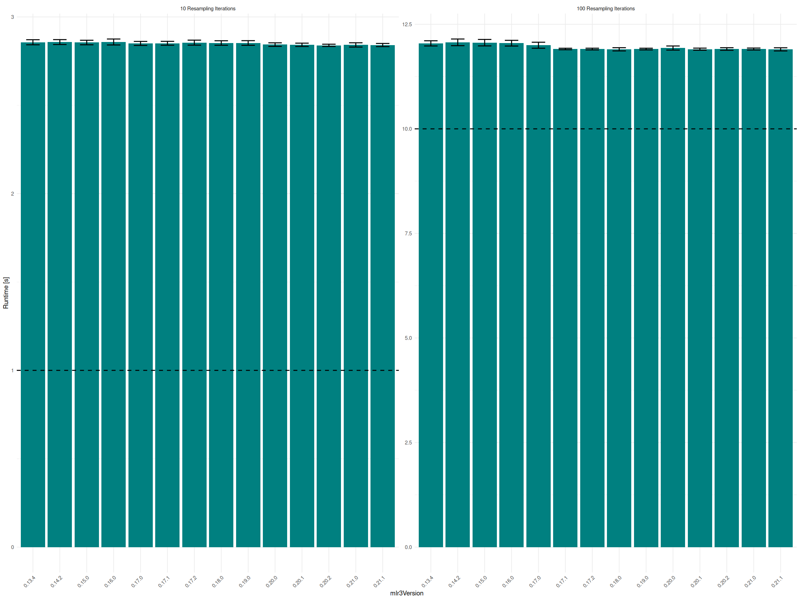
resample() on 10 cores with models trained for 1000 ms depending on the mlr3 version. The dashed line indicates the total training time of the models. Error bars represent the median absolute deviation of the runtime.| mlr3 Version | paradox Version | Model Time [ms] | Resampling Iterations | Total Model Time [s] | Median Runtime [s] | Median Runtime Sequential [s] | Median Runtime 10,000 [s] | K | Median Memory [MB] | Median Memory 10,000 [s] |
|---|---|---|---|---|---|---|---|---|---|---|
| 10 Resampling Iterations | ||||||||||
| 0.13.4 | 0.9.0 | 1000 | 10 | 10 | 2.9 | 11 | 2.7 | 2.9 | 1,147 | 1,254 |
| 0.14.2 | 0.10.0 | 1000 | 10 | 10 | 2.9 | 18 | 2.7 | 2.9 | 1,157 | 1,260 |
| 0.15.0 | 0.11.1 | 1000 | 10 | 10 | 2.9 | 11 | 2.7 | 2.9 | 1,157 | 1,260 |
| 0.16.0 | 0.11.1 | 1000 | 10 | 10 | 2.9 | 12 | 2.7 | 2.9 | 1,157 | 1,260 |
| 0.17.0 | 0.11.1 | 1000 | 10 | 10 | 2.9 | 10 | 2.8 | 2.9 | 1,147 | 1,254 |
| 0.17.1 | 0.11.1 | 1000 | 10 | 10 | 2.9 | 10 | 2.7 | 2.9 | 1,147 | 1,249 |
| 0.17.2 | 0.11.1 | 1000 | 10 | 10 | 2.9 | 10 | 2.8 | 2.9 | 1,147 | 1,249 |
| 0.18.0 | 0.11.1 | 1000 | 10 | 10 | 2.9 | 10 | 2.8 | 2.9 | 1,147 | 1,249 |
| 0.19.0 | 0.11.1 | 1000 | 10 | 10 | 2.9 | 10 | 2.8 | 2.9 | 1,147 | 1,249 |
| 0.20.0 | 1.0.0 | 1000 | 10 | 10 | 2.8 | 10 | 2.9 | 2.8 | 1,137 | 1,219 |
| 0.20.1 | 1.0.1 | 1000 | 10 | 10 | 2.8 | 10 | 2.8 | 2.8 | 1,137 | 1,219 |
| 0.20.2 | 1.0.1 | 1000 | 10 | 10 | 2.8 | 10 | 2.9 | 2.8 | 1,137 | 1,229 |
| 0.21.0 | 1.0.1 | 1000 | 10 | 10 | 2.8 | 10 | 2.8 | 2.8 | 1,137 | 1,229 |
| 0.21.1 | 1.0.1 | 1000 | 10 | 10 | 2.8 | 10 | 2.8 | 2.8 | 1,137 | 1,229 |
| 100 Resampling Iterations | ||||||||||
| 0.13.4 | 0.9.0 | 1000 | 100 | 100 | 12 | 130 | 12 | 1.2 | 1,249 | 1,638 |
| 0.14.2 | 0.10.0 | 1000 | 100 | 100 | 12 | 150 | 12 | 1.2 | 1,249 | 1,638 |
| 0.15.0 | 0.11.1 | 1000 | 100 | 100 | 12 | 120 | 12 | 1.2 | 1,249 | 1,633 |
| 0.16.0 | 0.11.1 | 1000 | 100 | 100 | 12 | 120 | 12 | 1.2 | 1,249 | 1,638 |
| 0.17.0 | 0.11.1 | 1000 | 100 | 100 | 12 | 100 | 12 | 1.2 | 1,249 | 1,633 |
| 0.17.1 | 0.11.1 | 1000 | 100 | 100 | 12 | 100 | 12 | 1.2 | 1,229 | 1,638 |
| 0.17.2 | 0.11.1 | 1000 | 100 | 100 | 12 | 100 | 12 | 1.2 | 1,229 | 1,638 |
| 0.18.0 | 0.11.1 | 1000 | 100 | 100 | 12 | 100 | 12 | 1.2 | 1,229 | 1,638 |
| 0.19.0 | 0.11.1 | 1000 | 100 | 100 | 12 | 100 | 12 | 1.2 | 1,229 | 1,638 |
| 0.20.0 | 1.0.0 | 1000 | 100 | 100 | 12 | 100 | 12 | 1.2 | 1,229 | 1,649 |
| 0.20.1 | 1.0.1 | 1000 | 100 | 100 | 12 | 100 | 12 | 1.2 | 1,219 | 1,659 |
| 0.20.2 | 1.0.1 | 1000 | 100 | 100 | 12 | 100 | 12 | 1.2 | 1,219 | 1,659 |
| 0.21.0 | 1.0.1 | 1000 | 100 | 100 | 12 | 100 | 12 | 1.2 | 1,167 | 1,669 |
| 0.21.1 | 1.0.1 | 1000 | 100 | 100 | 12 | 100 | 12 | 1.2 | 1,167 | 1,669 |
Model Time 100 ms

resample() on 10 cores with models trained for 100 ms depending on the mlr3 version. The dashed line indicates the total training time of the models. Error bars represent the median absolute deviation of the runtime.| mlr3 Version | paradox Version | Model Time [ms] | Resampling Iterations | Total Model Time [s] | Median Runtime [s] | Median Runtime Sequential [s] | Median Runtime 10,000 [s] | K | Median Memory [MB] | Median Memory 10,000 [s] |
|---|---|---|---|---|---|---|---|---|---|---|
| 10 Resampling Iterations | ||||||||||
| 0.13.4 | 0.9.0 | 100 | 10 | 1 | 2.0 | 3.8 | 2.0 | 20 | 1,147 | 1,254 |
| 0.14.2 | 0.10.0 | 100 | 10 | 1 | 2.0 | 7.4 | 2.0 | 20 | 1,157 | 1,260 |
| 0.15.0 | 0.11.1 | 100 | 10 | 1 | 2.0 | 4.8 | 2.0 | 20 | 1,157 | 1,260 |
| 0.16.0 | 0.11.1 | 100 | 10 | 1 | 2.0 | 2.0 | 2.0 | 20 | 1,157 | 1,260 |
| 0.17.0 | 0.11.1 | 100 | 10 | 1 | 2.0 | 1.1 | 2.0 | 20 | 1,147 | 1,254 |
| 0.17.1 | 0.11.1 | 100 | 10 | 1 | 2.0 | 1.1 | 2.0 | 20 | 1,147 | 1,249 |
| 0.17.2 | 0.11.1 | 100 | 10 | 1 | 2.0 | 1.1 | 2.0 | 20 | 1,147 | 1,249 |
| 0.18.0 | 0.11.1 | 100 | 10 | 1 | 2.0 | 1.1 | 2.0 | 20 | 1,147 | 1,249 |
| 0.19.0 | 0.11.1 | 100 | 10 | 1 | 2.0 | 1.1 | 2.0 | 20 | 1,147 | 1,249 |
| 0.20.0 | 1.0.0 | 100 | 10 | 1 | 2.0 | 1.1 | 2.0 | 20 | 1,137 | 1,219 |
| 0.20.1 | 1.0.1 | 100 | 10 | 1 | 2.0 | 1.1 | 2.0 | 20 | 1,137 | 1,219 |
| 0.20.2 | 1.0.1 | 100 | 10 | 1 | 2.0 | 1.1 | 2.0 | 20 | 1,137 | 1,229 |
| 0.21.0 | 1.0.1 | 100 | 10 | 1 | 2.0 | 1.1 | 1.9 | 20 | 1,137 | 1,229 |
| 0.21.1 | 1.0.1 | 100 | 10 | 1 | 2.0 | 1.1 | 1.9 | 20 | 1,137 | 1,229 |
| 100 Resampling Iterations | ||||||||||
| 0.13.4 | 0.9.0 | 100 | 100 | 10 | 3.0 | 42 | 12 | 3.0 | 1,249 | 1,638 |
| 0.14.2 | 0.10.0 | 100 | 100 | 10 | 3.0 | 75 | 11 | 3.0 | 1,249 | 1,638 |
| 0.15.0 | 0.11.1 | 100 | 100 | 10 | 3.0 | 48 | 8.9 | 3.0 | 1,249 | 1,633 |
| 0.16.0 | 0.11.1 | 100 | 100 | 10 | 3.0 | 45 | 11 | 3.0 | 1,249 | 1,638 |
| 0.17.0 | 0.11.1 | 100 | 100 | 10 | 3.0 | 11 | 8.9 | 3.0 | 1,249 | 1,633 |
| 0.17.1 | 0.11.1 | 100 | 100 | 10 | 2.9 | 11 | 2.7 | 2.9 | 1,229 | 1,638 |
| 0.17.2 | 0.11.1 | 100 | 100 | 10 | 2.9 | 11 | 2.7 | 2.9 | 1,229 | 1,638 |
| 0.18.0 | 0.11.1 | 100 | 100 | 10 | 2.9 | 11 | 2.7 | 2.9 | 1,229 | 1,638 |
| 0.19.0 | 0.11.1 | 100 | 100 | 10 | 2.9 | 11 | 2.6 | 2.9 | 1,229 | 1,638 |
| 0.20.0 | 1.0.0 | 100 | 100 | 10 | 2.9 | 11 | 2.7 | 2.9 | 1,229 | 1,649 |
| 0.20.1 | 1.0.1 | 100 | 100 | 10 | 2.9 | 11 | 2.7 | 2.9 | 1,219 | 1,659 |
| 0.20.2 | 1.0.1 | 100 | 100 | 10 | 2.9 | 11 | 2.7 | 2.9 | 1,219 | 1,659 |
| 0.21.0 | 1.0.1 | 100 | 100 | 10 | 2.9 | 11 | 2.8 | 2.9 | 1,167 | 1,669 |
| 0.21.1 | 1.0.1 | 100 | 100 | 10 | 2.9 | 11 | 2.8 | 2.9 | 1,167 | 1,669 |
| 1000 Resampling Iterations | ||||||||||
| 0.13.4 | 0.9.0 | 100 | 1000 | 100 | 18 | 230 | 260 | 1.8 | 1,751 | 2,330 |
| 0.14.2 | 0.10.0 | 100 | 1000 | 100 | 18 | 250 | 300 | 1.8 | 1,751 | 2,314 |
| 0.15.0 | 0.11.1 | 100 | 1000 | 100 | 18 | 210 | 210 | 1.8 | 1,741 | 2,355 |
| 0.16.0 | 0.11.1 | 100 | 1000 | 100 | 19 | 210 | 270 | 1.9 | 1,741 | 2,355 |
| 0.17.0 | 0.11.1 | 100 | 1000 | 100 | 17 | 110 | 210 | 1.7 | 1,751 | 2,324 |
| 0.17.1 | 0.11.1 | 100 | 1000 | 100 | 13 | 110 | 13 | 1.3 | 1,567 | 2,017 |
| 0.17.2 | 0.11.1 | 100 | 1000 | 100 | 13 | 110 | 13 | 1.3 | 1,567 | 2,017 |
| 0.18.0 | 0.11.1 | 100 | 1000 | 100 | 13 | 110 | 13 | 1.3 | 1,587 | 2,038 |
| 0.19.0 | 0.11.1 | 100 | 1000 | 100 | 13 | 110 | 13 | 1.3 | 1,567 | 2,017 |
| 0.20.0 | 1.0.0 | 100 | 1000 | 100 | 13 | 110 | 14 | 1.3 | 1,812 | 2,099 |
| 0.20.1 | 1.0.1 | 100 | 1000 | 100 | 13 | 110 | 13 | 1.3 | 1,577 | 2,017 |
| 0.20.2 | 1.0.1 | 100 | 1000 | 100 | 13 | 110 | 13 | 1.3 | 1,567 | 2,017 |
| 0.21.0 | 1.0.1 | 100 | 1000 | 100 | 13 | 110 | 13 | 1.3 | 1,362 | 1,956 |
| 0.21.1 | 1.0.1 | 100 | 1000 | 100 | 13 | 110 | 13 | 1.3 | 1,362 | 2,017 |
Model Time 10 ms

resample() on 10 cores with models trained for 10 ms depending on the mlr3 version. The dashed line indicates the total training time of the models. Error bars represent the median absolute deviation of the runtime.| mlr3 Version | paradox Version | Model Time [ms] | Resampling Iterations | Total Model Time [s] | Median Runtime [s] | Median Runtime Sequential [s] | Median Runtime 10,000 [s] | K | Median Memory [MB] | Median Memory 10,000 [s] |
|---|---|---|---|---|---|---|---|---|---|---|
| 10 Resampling Iterations | ||||||||||
| 0.13.4 | 0.9.0 | 10 | 10 | 0.1 | 1.9 | 1.7 | 1.9 | 190 | 1,147 | 1,254 |
| 0.14.2 | 0.10.0 | 10 | 10 | 0.1 | 2.0 | 2.1 | 1.9 | 200 | 1,157 | 1,260 |
| 0.15.0 | 0.11.1 | 10 | 10 | 0.1 | 2.0 | 1.9 | 1.9 | 200 | 1,157 | 1,260 |
| 0.16.0 | 0.11.1 | 10 | 10 | 0.1 | 2.0 | 1.1 | 1.9 | 200 | 1,157 | 1,260 |
| 0.17.0 | 0.11.1 | 10 | 10 | 0.1 | 1.9 | 0.20 | 1.9 | 190 | 1,147 | 1,254 |
| 0.17.1 | 0.11.1 | 10 | 10 | 0.1 | 1.9 | 0.19 | 1.9 | 190 | 1,147 | 1,249 |
| 0.17.2 | 0.11.1 | 10 | 10 | 0.1 | 1.9 | 0.19 | 2.0 | 190 | 1,147 | 1,249 |
| 0.18.0 | 0.11.1 | 10 | 10 | 0.1 | 1.9 | 0.19 | 1.9 | 190 | 1,147 | 1,249 |
| 0.19.0 | 0.11.1 | 10 | 10 | 0.1 | 1.9 | 0.19 | 1.9 | 190 | 1,147 | 1,249 |
| 0.20.0 | 1.0.0 | 10 | 10 | 0.1 | 1.9 | 0.23 | 1.9 | 190 | 1,137 | 1,219 |
| 0.20.1 | 1.0.1 | 10 | 10 | 0.1 | 1.9 | 0.19 | 1.9 | 190 | 1,137 | 1,219 |
| 0.20.2 | 1.0.1 | 10 | 10 | 0.1 | 1.9 | 0.19 | 1.9 | 190 | 1,137 | 1,229 |
| 0.21.0 | 1.0.1 | 10 | 10 | 0.1 | 1.9 | 0.19 | 1.9 | 190 | 1,137 | 1,229 |
| 0.21.1 | 1.0.1 | 10 | 10 | 0.1 | 1.9 | 0.19 | 1.9 | 190 | 1,137 | 1,229 |
| 100 Resampling Iterations | ||||||||||
| 0.13.4 | 0.9.0 | 10 | 100 | 1.0 | 2.2 | 15 | 2.4 | 22 | 1,249 | 1,638 |
| 0.14.2 | 0.10.0 | 10 | 100 | 1.0 | 2.2 | 20 | 2.4 | 22 | 1,249 | 1,638 |
| 0.15.0 | 0.11.1 | 10 | 100 | 1.0 | 2.2 | 22 | 2.9 | 22 | 1,249 | 1,633 |
| 0.16.0 | 0.11.1 | 10 | 100 | 1.0 | 2.2 | 22 | 2.5 | 22 | 1,249 | 1,638 |
| 0.17.0 | 0.11.1 | 10 | 100 | 1.0 | 2.1 | 1.8 | 2.3 | 21 | 1,249 | 1,633 |
| 0.17.1 | 0.11.1 | 10 | 100 | 1.0 | 2.0 | 1.8 | 1.8 | 20 | 1,229 | 1,638 |
| 0.17.2 | 0.11.1 | 10 | 100 | 1.0 | 2.0 | 1.8 | 1.8 | 20 | 1,229 | 1,638 |
| 0.18.0 | 0.11.1 | 10 | 100 | 1.0 | 2.0 | 1.8 | 1.8 | 20 | 1,229 | 1,638 |
| 0.19.0 | 0.11.1 | 10 | 100 | 1.0 | 2.0 | 1.8 | 1.8 | 20 | 1,229 | 1,638 |
| 0.20.0 | 1.0.0 | 10 | 100 | 1.0 | 2.1 | 2.2 | 1.8 | 21 | 1,229 | 1,649 |
| 0.20.1 | 1.0.1 | 10 | 100 | 1.0 | 2.1 | 1.8 | 1.8 | 21 | 1,219 | 1,659 |
| 0.20.2 | 1.0.1 | 10 | 100 | 1.0 | 2.1 | 1.8 | 1.8 | 21 | 1,219 | 1,659 |
| 0.21.0 | 1.0.1 | 10 | 100 | 1.0 | 2.1 | 1.8 | 1.9 | 21 | 1,167 | 1,669 |
| 0.21.1 | 1.0.1 | 10 | 100 | 1.0 | 2.1 | 1.7 | 1.9 | 21 | 1,167 | 1,669 |
| 1000 Resampling Iterations | ||||||||||
| 0.13.4 | 0.9.0 | 10 | 1000 | 10.0 | 9.3 | 160 | 160 | 9.3 | 1,751 | 2,330 |
| 0.14.2 | 0.10.0 | 10 | 1000 | 10.0 | 10 | 110 | 220 | 10 | 1,751 | 2,314 |
| 0.15.0 | 0.11.1 | 10 | 1000 | 10.0 | 12 | 140 | 160 | 12 | 1,741 | 2,355 |
| 0.16.0 | 0.11.1 | 10 | 1000 | 10.0 | 11 | 150 | 200 | 11 | 1,741 | 2,355 |
| 0.17.0 | 0.11.1 | 10 | 1000 | 10.0 | 7.8 | 19 | 200 | 7.8 | 1,751 | 2,324 |
| 0.17.1 | 0.11.1 | 10 | 1000 | 10.0 | 3.9 | 18 | 4.3 | 3.9 | 1,567 | 2,017 |
| 0.17.2 | 0.11.1 | 10 | 1000 | 10.0 | 3.9 | 18 | 4.2 | 3.9 | 1,567 | 2,017 |
| 0.18.0 | 0.11.1 | 10 | 1000 | 10.0 | 3.9 | 18 | 4.2 | 3.9 | 1,587 | 2,038 |
| 0.19.0 | 0.11.1 | 10 | 1000 | 10.0 | 3.9 | 18 | 4.2 | 3.9 | 1,567 | 2,017 |
| 0.20.0 | 1.0.0 | 10 | 1000 | 10.0 | 4.2 | 22 | 4.6 | 4.2 | 1,812 | 2,099 |
| 0.20.1 | 1.0.1 | 10 | 1000 | 10.0 | 3.9 | 18 | 4.2 | 3.9 | 1,577 | 2,017 |
| 0.20.2 | 1.0.1 | 10 | 1000 | 10.0 | 3.9 | 18 | 4.3 | 3.9 | 1,567 | 2,017 |
| 0.21.0 | 1.0.1 | 10 | 1000 | 10.0 | 3.9 | 18 | 4.2 | 3.9 | 1,362 | 1,956 |
| 0.21.1 | 1.0.1 | 10 | 1000 | 10.0 | 3.9 | 18 | 4.2 | 3.9 | 1,362 | 2,017 |
Model Time 1 ms

resample() on 10 cores with models trained for 1 ms depending on the mlr3 version. The dashed line indicates the total training time of the models. Error bars represent the median absolute deviation of the runtime.| mlr3 Version | paradox Version | Model Time [ms] | Resampling Iterations | Total Model Time [s] | Median Runtime [s] | Median Runtime Sequential [s] | Median Runtime 10,000 [s] | K | Median Memory [MB] | Median Memory 10,000 [s] |
|---|---|---|---|---|---|---|---|---|---|---|
| 10 Resampling Iterations | ||||||||||
| 0.13.4 | 0.9.0 | 1 | 10 | 0.01 | 1.9 | 2.1 | 1.9 | 1,900 | 1,147 | 1,254 |
| 0.14.2 | 0.10.0 | 1 | 10 | 0.01 | 1.9 | 1.3 | 1.9 | 1,900 | 1,157 | 1,260 |
| 0.15.0 | 0.11.1 | 1 | 10 | 0.01 | 2.0 | 1.9 | 1.9 | 2,000 | 1,157 | 1,260 |
| 0.16.0 | 0.11.1 | 1 | 10 | 0.01 | 1.9 | 1.5 | 1.9 | 1,900 | 1,157 | 1,260 |
| 0.17.0 | 0.11.1 | 1 | 10 | 0.01 | 1.9 | 0.11 | 1.9 | 1,900 | 1,147 | 1,254 |
| 0.17.1 | 0.11.1 | 1 | 10 | 0.01 | 1.9 | 0.10 | 1.9 | 1,900 | 1,147 | 1,249 |
| 0.17.2 | 0.11.1 | 1 | 10 | 0.01 | 1.9 | 0.10 | 1.9 | 1,900 | 1,147 | 1,249 |
| 0.18.0 | 0.11.1 | 1 | 10 | 0.01 | 1.9 | 0.10 | 1.9 | 1,900 | 1,147 | 1,249 |
| 0.19.0 | 0.11.1 | 1 | 10 | 0.01 | 1.9 | 0.10 | 1.9 | 1,900 | 1,147 | 1,249 |
| 0.20.0 | 1.0.0 | 1 | 10 | 0.01 | 1.9 | 0.15 | 1.9 | 1,900 | 1,137 | 1,219 |
| 0.20.1 | 1.0.1 | 1 | 10 | 0.01 | 1.9 | 0.10 | 1.9 | 1,900 | 1,137 | 1,219 |
| 0.20.2 | 1.0.1 | 1 | 10 | 0.01 | 1.9 | 0.11 | 1.9 | 1,900 | 1,137 | 1,229 |
| 0.21.0 | 1.0.1 | 1 | 10 | 0.01 | 1.9 | 0.10 | 1.9 | 1,900 | 1,137 | 1,229 |
| 0.21.1 | 1.0.1 | 1 | 10 | 0.01 | 1.9 | 0.099 | 1.9 | 1,900 | 1,137 | 1,229 |
| 100 Resampling Iterations | ||||||||||
| 0.13.4 | 0.9.0 | 1 | 100 | 0.10 | 2.0 | 21 | 2.2 | 200 | 1,249 | 1,638 |
| 0.14.2 | 0.10.0 | 1 | 100 | 0.10 | 2.1 | 17 | 2.2 | 210 | 1,249 | 1,638 |
| 0.15.0 | 0.11.1 | 1 | 100 | 0.10 | 2.1 | 21 | 2.2 | 210 | 1,249 | 1,633 |
| 0.16.0 | 0.11.1 | 1 | 100 | 0.10 | 2.1 | 15 | 2.2 | 210 | 1,249 | 1,638 |
| 0.17.0 | 0.11.1 | 1 | 100 | 0.10 | 2.0 | 0.93 | 2.1 | 200 | 1,249 | 1,633 |
| 0.17.1 | 0.11.1 | 1 | 100 | 0.10 | 1.9 | 0.89 | 1.7 | 190 | 1,229 | 1,638 |
| 0.17.2 | 0.11.1 | 1 | 100 | 0.10 | 1.9 | 0.89 | 1.7 | 190 | 1,229 | 1,638 |
| 0.18.0 | 0.11.1 | 1 | 100 | 0.10 | 1.9 | 0.89 | 1.7 | 190 | 1,229 | 1,638 |
| 0.19.0 | 0.11.1 | 1 | 100 | 0.10 | 1.9 | 0.90 | 1.7 | 190 | 1,229 | 1,638 |
| 0.20.0 | 1.0.0 | 1 | 100 | 0.10 | 2.0 | 1.3 | 1.7 | 200 | 1,229 | 1,649 |
| 0.20.1 | 1.0.1 | 1 | 100 | 0.10 | 2.0 | 0.87 | 1.7 | 200 | 1,219 | 1,659 |
| 0.20.2 | 1.0.1 | 1 | 100 | 0.10 | 2.0 | 0.91 | 1.7 | 200 | 1,219 | 1,659 |
| 0.21.0 | 1.0.1 | 1 | 100 | 0.10 | 2.0 | 0.85 | 1.9 | 200 | 1,167 | 1,669 |
| 0.21.1 | 1.0.1 | 1 | 100 | 0.10 | 2.0 | 0.85 | 1.8 | 200 | 1,167 | 1,669 |
| 1000 Resampling Iterations | ||||||||||
| 0.13.4 | 0.9.0 | 1 | 1000 | 1.00 | 8.8 | 150 | 170 | 88 | 1,751 | 2,330 |
| 0.14.2 | 0.10.0 | 1 | 1000 | 1.00 | 15 | 130 | 130 | 150 | 1,751 | 2,314 |
| 0.15.0 | 0.11.1 | 1 | 1000 | 1.00 | 11 | 260 | 140 | 110 | 1,741 | 2,355 |
| 0.16.0 | 0.11.1 | 1 | 1000 | 1.00 | 18 | 240 | 140 | 180 | 1,741 | 2,355 |
| 0.17.0 | 0.11.1 | 1 | 1000 | 1.00 | 6.9 | 10 | 140 | 69 | 1,751 | 2,324 |
| 0.17.1 | 0.11.1 | 1 | 1000 | 1.00 | 2.9 | 8.9 | 3.3 | 29 | 1,567 | 2,017 |
| 0.17.2 | 0.11.1 | 1 | 1000 | 1.00 | 2.9 | 8.9 | 3.2 | 29 | 1,567 | 2,017 |
| 0.18.0 | 0.11.1 | 1 | 1000 | 1.00 | 2.9 | 8.9 | 3.2 | 29 | 1,587 | 2,038 |
| 0.19.0 | 0.11.1 | 1 | 1000 | 1.00 | 3.0 | 9.1 | 3.2 | 30 | 1,567 | 2,017 |
| 0.20.0 | 1.0.0 | 1 | 1000 | 1.00 | 3.3 | 14 | 3.7 | 33 | 1,812 | 2,099 |
| 0.20.1 | 1.0.1 | 1 | 1000 | 1.00 | 2.9 | 9.0 | 3.3 | 29 | 1,577 | 2,017 |
| 0.20.2 | 1.0.1 | 1 | 1000 | 1.00 | 3.0 | 8.9 | 3.4 | 30 | 1,567 | 2,017 |
| 0.21.0 | 1.0.1 | 1 | 1000 | 1.00 | 2.9 | 8.7 | 3.3 | 29 | 1,362 | 1,956 |
| 0.21.1 | 1.0.1 | 1 | 1000 | 1.00 | 2.9 | 8.4 | 3.3 | 29 | 1,362 | 2,017 |
Memory

resample() on 10 cores depending on the mlr3 version. Error bars represent the median absolute deviation of the memory usage.Benchmark Parallel
The runtime and memory usage of the benchmark() function with future::multisession parallelization is measured for different mlr3 versions. The parallelization is conducted on 10 cores. The models are trained for different amounts of time (1 ms, 10 ms, 100 ms, and 1000 ms) on the spam dataset with 1000 and 10,000 observations. The resampling iterations (evals) are set to 1000, 100, and 10.
task = tsk("spam")
learner = lrn("classif.sleep",
sleep_train = model_time / 2,
sleep_predict = model_time / 2)
resampling = rsmp("subsampling", repeats = instance$evals / 5)
design = benchmark_grid(task, replicate(5, learner), resampling)
future::plan("multisession", workers = 10)
options("mlr3.exec_chunk_size" = evals / 10)
benchmark(design)Model Time 1000 ms
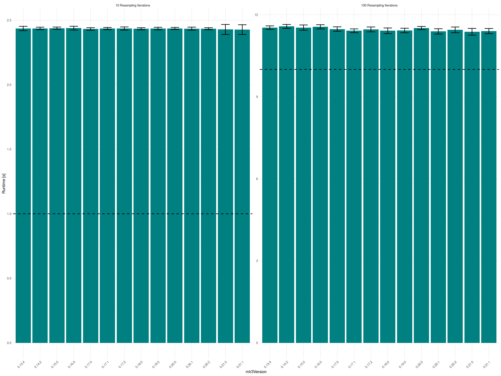
benchmark() with models trained for 1000 ms depending on the mlr3 version. The dashed line indicates the total training time of the models. Error bars represent the median absolute deviation of the runtime.| mlr3 Version | paradox Version | Model Time [ms] | Resampling Iterations | Total Model Time [s] | Median Runtime [s] | Median Runtime Sequential [s] | Median Runtime 10,000 [s] | K | Median Memory [MB] | Median Memory 10,000 [s] |
|---|---|---|---|---|---|---|---|---|---|---|
| 10 Resampling Iterations | ||||||||||
| 0.13.4 | 0.9.0 | 1000 | 10 | 10 | 2.4 | 11 | 2.4 | 2.4 | 1,147 | 1,249 |
| 0.14.2 | 0.10.0 | 1000 | 10 | 10 | 2.4 | 18 | 2.4 | 2.4 | 1,147 | 1,249 |
| 0.15.0 | 0.11.1 | 1000 | 10 | 10 | 2.4 | 11 | 2.4 | 2.4 | 1,152 | 1,249 |
| 0.16.0 | 0.11.1 | 1000 | 10 | 10 | 2.4 | 12 | 2.4 | 2.4 | 1,147 | 1,249 |
| 0.17.0 | 0.11.1 | 1000 | 10 | 10 | 2.4 | 10 | 2.4 | 2.4 | 1,147 | 1,244 |
| 0.17.1 | 0.11.1 | 1000 | 10 | 10 | 2.4 | 10 | 2.4 | 2.4 | 1,147 | 1,239 |
| 0.17.2 | 0.11.1 | 1000 | 10 | 10 | 2.4 | 10 | 2.4 | 2.4 | 1,147 | 1,239 |
| 0.18.0 | 0.11.1 | 1000 | 10 | 10 | 2.4 | 10 | 2.4 | 2.4 | 1,147 | 1,239 |
| 0.19.0 | 0.11.1 | 1000 | 10 | 10 | 2.4 | 10 | 2.4 | 2.4 | 1,152 | 1,249 |
| 0.20.0 | 1.0.0 | 1000 | 10 | 10 | 2.4 | 10 | 2.4 | 2.4 | 1,137 | 1,219 |
| 0.20.1 | 1.0.1 | 1000 | 10 | 10 | 2.4 | 10 | 2.4 | 2.4 | 1,137 | 1,219 |
| 0.20.2 | 1.0.1 | 1000 | 10 | 10 | 2.4 | 10 | 2.4 | 2.4 | 1,137 | 1,229 |
| 0.21.0 | 1.0.1 | 1000 | 10 | 10 | 2.4 | 10 | 2.4 | 2.4 | 1,137 | 1,229 |
| 0.21.1 | 1.0.1 | 1000 | 10 | 10 | 2.4 | 10 | 2.4 | 2.4 | 1,137 | 1,229 |
| 100 Resampling Iterations | ||||||||||
| 0.13.4 | 0.9.0 | 1000 | 100 | 100 | 12 | 130 | 12 | 1.2 | 1,229 | 1,618 |
| 0.14.2 | 0.10.0 | 1000 | 100 | 100 | 12 | 150 | 12 | 1.2 | 1,229 | 1,608 |
| 0.15.0 | 0.11.1 | 1000 | 100 | 100 | 12 | 120 | 12 | 1.2 | 1,229 | 1,613 |
| 0.16.0 | 0.11.1 | 1000 | 100 | 100 | 12 | 120 | 12 | 1.2 | 1,229 | 1,608 |
| 0.17.0 | 0.11.1 | 1000 | 100 | 100 | 11 | 100 | 12 | 1.1 | 1,229 | 1,597 |
| 0.17.1 | 0.11.1 | 1000 | 100 | 100 | 11 | 100 | 12 | 1.1 | 1,229 | 1,608 |
| 0.17.2 | 0.11.1 | 1000 | 100 | 100 | 11 | 100 | 12 | 1.1 | 1,229 | 1,613 |
| 0.18.0 | 0.11.1 | 1000 | 100 | 100 | 11 | 100 | 12 | 1.1 | 1,229 | 1,608 |
| 0.19.0 | 0.11.1 | 1000 | 100 | 100 | 11 | 100 | 12 | 1.1 | 1,229 | 1,608 |
| 0.20.0 | 1.0.0 | 1000 | 100 | 100 | 12 | 100 | 12 | 1.2 | 1,229 | 1,618 |
| 0.20.1 | 1.0.1 | 1000 | 100 | 100 | 11 | 100 | 12 | 1.1 | 1,219 | 1,654 |
| 0.20.2 | 1.0.1 | 1000 | 100 | 100 | 11 | 100 | 12 | 1.1 | 1,219 | 1,659 |
| 0.21.0 | 1.0.1 | 1000 | 100 | 100 | 11 | 100 | 11 | 1.1 | 1,167 | 1,649 |
| 0.21.1 | 1.0.1 | 1000 | 100 | 100 | 11 | 100 | 11 | 1.1 | 1,167 | 1,649 |
Model Time 100 ms
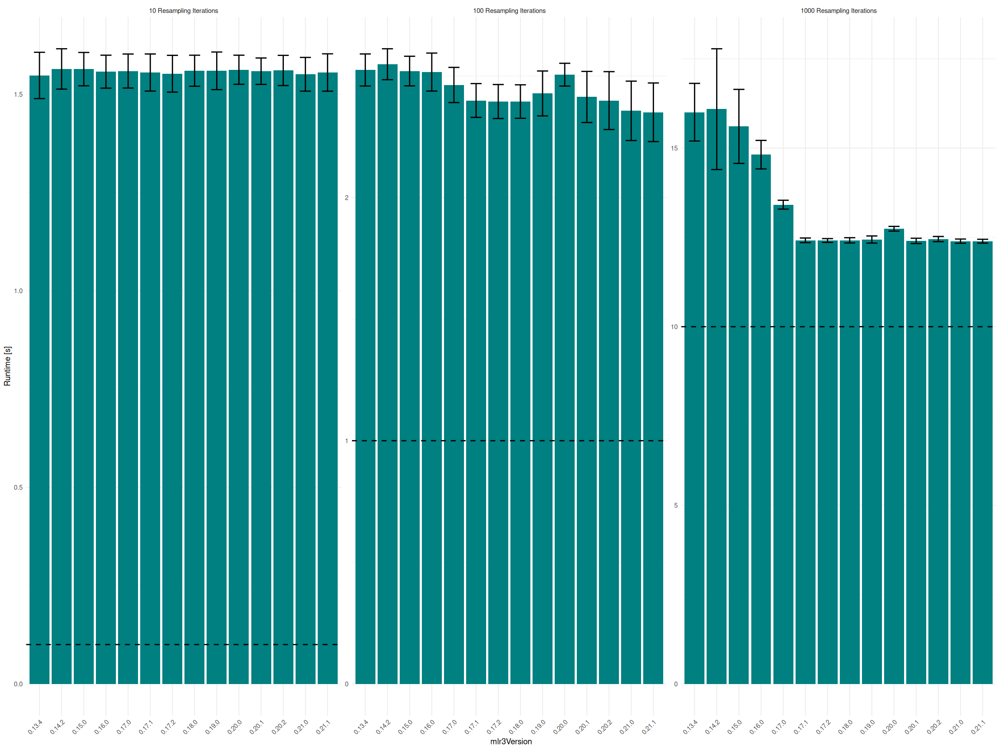
benchmark() with models trained for 100 ms depending on the mlr3 version. The dashed line indicates the total training time of the models. Error bars represent the median absolute deviation of the runtime.| mlr3 Version | paradox Version | Model Time [ms] | Resampling Iterations | Total Model Time [s] | Median Runtime [s] | Median Runtime Sequential [s] | Median Runtime 10,000 [s] | K | Median Memory [MB] | Median Memory 10,000 [s] |
|---|---|---|---|---|---|---|---|---|---|---|
| 10 Resampling Iterations | ||||||||||
| 0.13.4 | 0.9.0 | 100 | 10 | 1 | 1.5 | 3.8 | 1.6 | 15 | 1,147 | 1,249 |
| 0.14.2 | 0.10.0 | 100 | 10 | 1 | 1.6 | 7.4 | 1.6 | 16 | 1,147 | 1,249 |
| 0.15.0 | 0.11.1 | 100 | 10 | 1 | 1.6 | 4.8 | 1.6 | 16 | 1,152 | 1,249 |
| 0.16.0 | 0.11.1 | 100 | 10 | 1 | 1.6 | 2.0 | 1.6 | 16 | 1,147 | 1,249 |
| 0.17.0 | 0.11.1 | 100 | 10 | 1 | 1.6 | 1.1 | 1.6 | 16 | 1,147 | 1,244 |
| 0.17.1 | 0.11.1 | 100 | 10 | 1 | 1.6 | 1.1 | 1.6 | 16 | 1,147 | 1,239 |
| 0.17.2 | 0.11.1 | 100 | 10 | 1 | 1.6 | 1.1 | 1.6 | 16 | 1,147 | 1,239 |
| 0.18.0 | 0.11.1 | 100 | 10 | 1 | 1.6 | 1.1 | 1.6 | 16 | 1,147 | 1,239 |
| 0.19.0 | 0.11.1 | 100 | 10 | 1 | 1.6 | 1.1 | 1.6 | 16 | 1,152 | 1,249 |
| 0.20.0 | 1.0.0 | 100 | 10 | 1 | 1.6 | 1.1 | 1.6 | 16 | 1,137 | 1,219 |
| 0.20.1 | 1.0.1 | 100 | 10 | 1 | 1.6 | 1.1 | 1.6 | 16 | 1,137 | 1,219 |
| 0.20.2 | 1.0.1 | 100 | 10 | 1 | 1.6 | 1.1 | 1.5 | 16 | 1,137 | 1,229 |
| 0.21.0 | 1.0.1 | 100 | 10 | 1 | 1.6 | 1.1 | 1.6 | 16 | 1,137 | 1,229 |
| 0.21.1 | 1.0.1 | 100 | 10 | 1 | 1.6 | 1.1 | 1.5 | 16 | 1,137 | 1,229 |
| 100 Resampling Iterations | ||||||||||
| 0.13.4 | 0.9.0 | 100 | 100 | 10 | 2.5 | 42 | 11 | 2.5 | 1,229 | 1,618 |
| 0.14.2 | 0.10.0 | 100 | 100 | 10 | 2.5 | 75 | 12 | 2.5 | 1,229 | 1,608 |
| 0.15.0 | 0.11.1 | 100 | 100 | 10 | 2.5 | 48 | 21 | 2.5 | 1,229 | 1,613 |
| 0.16.0 | 0.11.1 | 100 | 100 | 10 | 2.5 | 45 | 9.8 | 2.5 | 1,229 | 1,608 |
| 0.17.0 | 0.11.1 | 100 | 100 | 10 | 2.5 | 11 | 9.2 | 2.5 | 1,229 | 1,597 |
| 0.17.1 | 0.11.1 | 100 | 100 | 10 | 2.4 | 11 | 2.5 | 2.4 | 1,229 | 1,608 |
| 0.17.2 | 0.11.1 | 100 | 100 | 10 | 2.4 | 11 | 2.5 | 2.4 | 1,229 | 1,613 |
| 0.18.0 | 0.11.1 | 100 | 100 | 10 | 2.4 | 11 | 2.5 | 2.4 | 1,229 | 1,608 |
| 0.19.0 | 0.11.1 | 100 | 100 | 10 | 2.4 | 11 | 2.5 | 2.4 | 1,229 | 1,608 |
| 0.20.0 | 1.0.0 | 100 | 100 | 10 | 2.5 | 11 | 2.5 | 2.5 | 1,229 | 1,618 |
| 0.20.1 | 1.0.1 | 100 | 100 | 10 | 2.4 | 11 | 2.5 | 2.4 | 1,219 | 1,654 |
| 0.20.2 | 1.0.1 | 100 | 100 | 10 | 2.4 | 11 | 2.5 | 2.4 | 1,219 | 1,659 |
| 0.21.0 | 1.0.1 | 100 | 100 | 10 | 2.4 | 11 | 2.4 | 2.4 | 1,167 | 1,649 |
| 0.21.1 | 1.0.1 | 100 | 100 | 10 | 2.4 | 11 | 2.4 | 2.4 | 1,167 | 1,649 |
| 1000 Resampling Iterations | ||||||||||
| 0.13.4 | 0.9.0 | 100 | 1000 | 100 | 16 | 230 | 220 | 1.6 | 1,649 | 2,104 |
| 0.14.2 | 0.10.0 | 100 | 1000 | 100 | 16 | 250 | 280 | 1.6 | 1,638 | 2,145 |
| 0.15.0 | 0.11.1 | 100 | 1000 | 100 | 16 | 210 | 280 | 1.6 | 1,638 | 2,089 |
| 0.16.0 | 0.11.1 | 100 | 1000 | 100 | 15 | 210 | 150 | 1.5 | 1,628 | 2,130 |
| 0.17.0 | 0.11.1 | 100 | 1000 | 100 | 13 | 110 | 200 | 1.3 | 1,649 | 2,068 |
| 0.17.1 | 0.11.1 | 100 | 1000 | 100 | 12 | 110 | 12 | 1.2 | 1,536 | 1,884 |
| 0.17.2 | 0.11.1 | 100 | 1000 | 100 | 12 | 110 | 12 | 1.2 | 1,536 | 1,884 |
| 0.18.0 | 0.11.1 | 100 | 1000 | 100 | 12 | 110 | 12 | 1.2 | 1,546 | 1,884 |
| 0.19.0 | 0.11.1 | 100 | 1000 | 100 | 12 | 110 | 12 | 1.2 | 1,536 | 1,884 |
| 0.20.0 | 1.0.0 | 100 | 1000 | 100 | 13 | 110 | 13 | 1.3 | 1,772 | 2,007 |
| 0.20.1 | 1.0.1 | 100 | 1000 | 100 | 12 | 110 | 12 | 1.2 | 1,536 | 1,874 |
| 0.20.2 | 1.0.1 | 100 | 1000 | 100 | 12 | 110 | 12 | 1.2 | 1,526 | 1,874 |
| 0.21.0 | 1.0.1 | 100 | 1000 | 100 | 12 | 110 | 12 | 1.2 | 1,321 | 1,761 |
| 0.21.1 | 1.0.1 | 100 | 1000 | 100 | 12 | 110 | 12 | 1.2 | 1,321 | 1,761 |
Model Time 10 ms
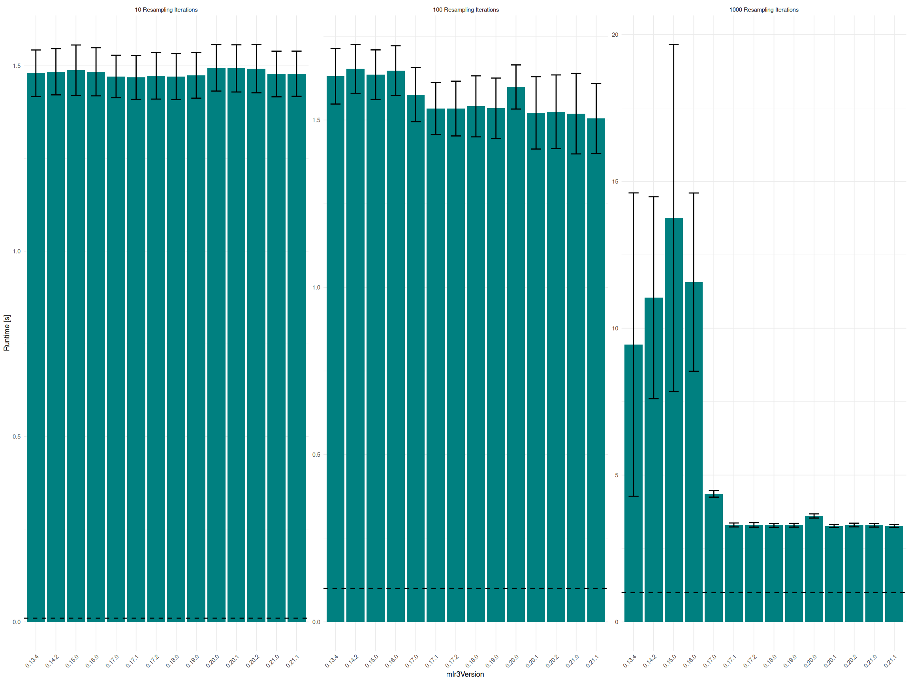
benchmark() with models trained for 10 ms depending on the mlr3 version. The dashed line indicates the total training time of the models. Error bars represent the median absolute deviation of the runtime.| mlr3 Version | paradox Version | Model Time [ms] | Resampling Iterations | Total Model Time [s] | Median Runtime [s] | Median Runtime Sequential [s] | Median Runtime 10,000 [s] | K | Median Memory [MB] | Median Memory 10,000 [s] |
|---|---|---|---|---|---|---|---|---|---|---|
| 10 Resampling Iterations | ||||||||||
| 0.13.4 | 0.9.0 | 10 | 10 | 0.1 | 1.5 | 1.7 | 1.5 | 150 | 1,147 | 1,249 |
| 0.14.2 | 0.10.0 | 10 | 10 | 0.1 | 1.5 | 2.1 | 1.5 | 150 | 1,147 | 1,249 |
| 0.15.0 | 0.11.1 | 10 | 10 | 0.1 | 1.5 | 1.9 | 1.5 | 150 | 1,152 | 1,249 |
| 0.16.0 | 0.11.1 | 10 | 10 | 0.1 | 1.5 | 1.1 | 1.5 | 150 | 1,147 | 1,249 |
| 0.17.0 | 0.11.1 | 10 | 10 | 0.1 | 1.5 | 0.20 | 1.5 | 150 | 1,147 | 1,244 |
| 0.17.1 | 0.11.1 | 10 | 10 | 0.1 | 1.5 | 0.19 | 1.5 | 150 | 1,147 | 1,239 |
| 0.17.2 | 0.11.1 | 10 | 10 | 0.1 | 1.5 | 0.19 | 1.5 | 150 | 1,147 | 1,239 |
| 0.18.0 | 0.11.1 | 10 | 10 | 0.1 | 1.5 | 0.19 | 1.5 | 150 | 1,147 | 1,239 |
| 0.19.0 | 0.11.1 | 10 | 10 | 0.1 | 1.5 | 0.19 | 1.5 | 150 | 1,152 | 1,249 |
| 0.20.0 | 1.0.0 | 10 | 10 | 0.1 | 1.5 | 0.23 | 1.5 | 150 | 1,137 | 1,219 |
| 0.20.1 | 1.0.1 | 10 | 10 | 0.1 | 1.5 | 0.19 | 1.5 | 150 | 1,137 | 1,219 |
| 0.20.2 | 1.0.1 | 10 | 10 | 0.1 | 1.5 | 0.19 | 1.5 | 150 | 1,137 | 1,229 |
| 0.21.0 | 1.0.1 | 10 | 10 | 0.1 | 1.5 | 0.19 | 1.5 | 150 | 1,137 | 1,229 |
| 0.21.1 | 1.0.1 | 10 | 10 | 0.1 | 1.5 | 0.19 | 1.5 | 150 | 1,137 | 1,229 |
| 100 Resampling Iterations | ||||||||||
| 0.13.4 | 0.9.0 | 10 | 100 | 1.0 | 1.6 | 15 | 7.2 | 16 | 1,229 | 1,618 |
| 0.14.2 | 0.10.0 | 10 | 100 | 1.0 | 1.7 | 20 | 5.8 | 17 | 1,229 | 1,608 |
| 0.15.0 | 0.11.1 | 10 | 100 | 1.0 | 1.6 | 22 | 3.3 | 16 | 1,229 | 1,613 |
| 0.16.0 | 0.11.1 | 10 | 100 | 1.0 | 1.6 | 22 | 5.9 | 16 | 1,229 | 1,608 |
| 0.17.0 | 0.11.1 | 10 | 100 | 1.0 | 1.6 | 1.8 | 1.8 | 16 | 1,229 | 1,597 |
| 0.17.1 | 0.11.1 | 10 | 100 | 1.0 | 1.5 | 1.8 | 1.6 | 15 | 1,229 | 1,608 |
| 0.17.2 | 0.11.1 | 10 | 100 | 1.0 | 1.5 | 1.8 | 1.6 | 15 | 1,229 | 1,613 |
| 0.18.0 | 0.11.1 | 10 | 100 | 1.0 | 1.5 | 1.8 | 1.6 | 15 | 1,229 | 1,608 |
| 0.19.0 | 0.11.1 | 10 | 100 | 1.0 | 1.5 | 1.8 | 1.6 | 15 | 1,229 | 1,608 |
| 0.20.0 | 1.0.0 | 10 | 100 | 1.0 | 1.6 | 2.2 | 1.7 | 16 | 1,229 | 1,618 |
| 0.20.1 | 1.0.1 | 10 | 100 | 1.0 | 1.5 | 1.8 | 1.6 | 15 | 1,219 | 1,654 |
| 0.20.2 | 1.0.1 | 10 | 100 | 1.0 | 1.5 | 1.8 | 1.6 | 15 | 1,219 | 1,659 |
| 0.21.0 | 1.0.1 | 10 | 100 | 1.0 | 1.5 | 1.8 | 1.6 | 15 | 1,167 | 1,649 |
| 0.21.1 | 1.0.1 | 10 | 100 | 1.0 | 1.5 | 1.7 | 1.5 | 15 | 1,167 | 1,649 |
| 1000 Resampling Iterations | ||||||||||
| 0.13.4 | 0.9.0 | 10 | 1000 | 10.0 | 9.4 | 160 | 130 | 9.4 | 1,649 | 2,104 |
| 0.14.2 | 0.10.0 | 10 | 1000 | 10.0 | 11 | 110 | 110 | 11 | 1,638 | 2,145 |
| 0.15.0 | 0.11.1 | 10 | 1000 | 10.0 | 14 | 140 | 110 | 14 | 1,638 | 2,089 |
| 0.16.0 | 0.11.1 | 10 | 1000 | 10.0 | 12 | 150 | 120 | 12 | 1,628 | 2,130 |
| 0.17.0 | 0.11.1 | 10 | 1000 | 10.0 | 4.4 | 19 | 91 | 4.4 | 1,649 | 2,068 |
| 0.17.1 | 0.11.1 | 10 | 1000 | 10.0 | 3.3 | 18 | 3.4 | 3.3 | 1,536 | 1,884 |
| 0.17.2 | 0.11.1 | 10 | 1000 | 10.0 | 3.3 | 18 | 3.3 | 3.3 | 1,536 | 1,884 |
| 0.18.0 | 0.11.1 | 10 | 1000 | 10.0 | 3.3 | 18 | 3.2 | 3.3 | 1,546 | 1,884 |
| 0.19.0 | 0.11.1 | 10 | 1000 | 10.0 | 3.3 | 18 | 3.2 | 3.3 | 1,536 | 1,884 |
| 0.20.0 | 1.0.0 | 10 | 1000 | 10.0 | 3.6 | 22 | 3.6 | 3.6 | 1,772 | 2,007 |
| 0.20.1 | 1.0.1 | 10 | 1000 | 10.0 | 3.3 | 18 | 3.3 | 3.3 | 1,536 | 1,874 |
| 0.20.2 | 1.0.1 | 10 | 1000 | 10.0 | 3.3 | 18 | 3.3 | 3.3 | 1,526 | 1,874 |
| 0.21.0 | 1.0.1 | 10 | 1000 | 10.0 | 3.3 | 18 | 3.3 | 3.3 | 1,321 | 1,761 |
| 0.21.1 | 1.0.1 | 10 | 1000 | 10.0 | 3.3 | 18 | 3.3 | 3.3 | 1,321 | 1,761 |
Model Time 1 ms
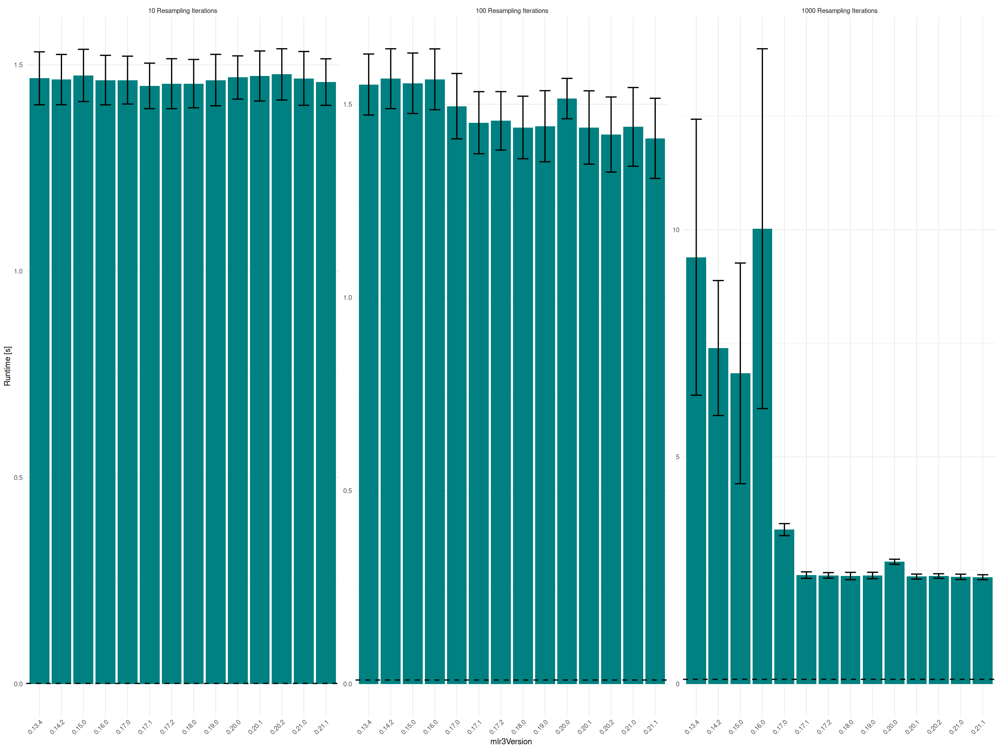
benchmark() with models trained for 1 ms depending on the mlr3 version. The dashed line indicates the total training time of the models. Error bars represent the median absolute deviation of the runtime.| mlr3 Version | paradox Version | Model Time [ms] | Resampling Iterations | Total Model Time [s] | Median Runtime [s] | Median Runtime Sequential [s] | Median Runtime 10,000 [s] | K | Median Memory [MB] | Median Memory 10,000 [s] |
|---|---|---|---|---|---|---|---|---|---|---|
| 10 Resampling Iterations | ||||||||||
| 0.13.4 | 0.9.0 | 1 | 10 | 0.01 | 1.5 | 2.1 | 1.5 | 1,500 | 1,147 | 1,249 |
| 0.14.2 | 0.10.0 | 1 | 10 | 0.01 | 1.5 | 1.3 | 1.5 | 1,500 | 1,147 | 1,249 |
| 0.15.0 | 0.11.1 | 1 | 10 | 0.01 | 1.5 | 1.9 | 1.5 | 1,500 | 1,152 | 1,249 |
| 0.16.0 | 0.11.1 | 1 | 10 | 0.01 | 1.5 | 1.5 | 1.5 | 1,500 | 1,147 | 1,249 |
| 0.17.0 | 0.11.1 | 1 | 10 | 0.01 | 1.5 | 0.11 | 1.5 | 1,500 | 1,147 | 1,244 |
| 0.17.1 | 0.11.1 | 1 | 10 | 0.01 | 1.4 | 0.10 | 1.5 | 1,400 | 1,147 | 1,239 |
| 0.17.2 | 0.11.1 | 1 | 10 | 0.01 | 1.5 | 0.10 | 1.5 | 1,500 | 1,147 | 1,239 |
| 0.18.0 | 0.11.1 | 1 | 10 | 0.01 | 1.5 | 0.10 | 1.5 | 1,500 | 1,147 | 1,239 |
| 0.19.0 | 0.11.1 | 1 | 10 | 0.01 | 1.5 | 0.10 | 1.5 | 1,500 | 1,152 | 1,249 |
| 0.20.0 | 1.0.0 | 1 | 10 | 0.01 | 1.5 | 0.15 | 1.5 | 1,500 | 1,137 | 1,219 |
| 0.20.1 | 1.0.1 | 1 | 10 | 0.01 | 1.5 | 0.10 | 1.5 | 1,500 | 1,137 | 1,219 |
| 0.20.2 | 1.0.1 | 1 | 10 | 0.01 | 1.5 | 0.11 | 1.5 | 1,500 | 1,137 | 1,229 |
| 0.21.0 | 1.0.1 | 1 | 10 | 0.01 | 1.5 | 0.10 | 1.5 | 1,500 | 1,137 | 1,229 |
| 0.21.1 | 1.0.1 | 1 | 10 | 0.01 | 1.5 | 0.099 | 1.5 | 1,500 | 1,137 | 1,229 |
| 100 Resampling Iterations | ||||||||||
| 0.13.4 | 0.9.0 | 1 | 100 | 0.10 | 1.6 | 21 | 1.7 | 160 | 1,229 | 1,618 |
| 0.14.2 | 0.10.0 | 1 | 100 | 0.10 | 1.6 | 17 | 1.7 | 160 | 1,229 | 1,608 |
| 0.15.0 | 0.11.1 | 1 | 100 | 0.10 | 1.6 | 21 | 1.7 | 160 | 1,229 | 1,613 |
| 0.16.0 | 0.11.1 | 1 | 100 | 0.10 | 1.6 | 15 | 1.7 | 160 | 1,229 | 1,608 |
| 0.17.0 | 0.11.1 | 1 | 100 | 0.10 | 1.5 | 0.93 | 1.6 | 150 | 1,229 | 1,597 |
| 0.17.1 | 0.11.1 | 1 | 100 | 0.10 | 1.5 | 0.89 | 1.5 | 150 | 1,229 | 1,608 |
| 0.17.2 | 0.11.1 | 1 | 100 | 0.10 | 1.5 | 0.89 | 1.5 | 150 | 1,229 | 1,613 |
| 0.18.0 | 0.11.1 | 1 | 100 | 0.10 | 1.4 | 0.89 | 1.5 | 140 | 1,229 | 1,608 |
| 0.19.0 | 0.11.1 | 1 | 100 | 0.10 | 1.4 | 0.90 | 1.5 | 140 | 1,229 | 1,608 |
| 0.20.0 | 1.0.0 | 1 | 100 | 0.10 | 1.5 | 1.3 | 1.6 | 150 | 1,229 | 1,618 |
| 0.20.1 | 1.0.1 | 1 | 100 | 0.10 | 1.4 | 0.87 | 1.5 | 140 | 1,219 | 1,654 |
| 0.20.2 | 1.0.1 | 1 | 100 | 0.10 | 1.4 | 0.91 | 1.5 | 140 | 1,219 | 1,659 |
| 0.21.0 | 1.0.1 | 1 | 100 | 0.10 | 1.4 | 0.85 | 1.5 | 140 | 1,167 | 1,649 |
| 0.21.1 | 1.0.1 | 1 | 100 | 0.10 | 1.4 | 0.85 | 1.5 | 140 | 1,167 | 1,649 |
| 1000 Resampling Iterations | ||||||||||
| 0.13.4 | 0.9.0 | 1 | 1000 | 1.00 | 9.4 | 150 | 130 | 94 | 1,649 | 2,104 |
| 0.14.2 | 0.10.0 | 1 | 1000 | 1.00 | 7.4 | 130 | 140 | 74 | 1,638 | 2,145 |
| 0.15.0 | 0.11.1 | 1 | 1000 | 1.00 | 6.8 | 260 | 130 | 68 | 1,638 | 2,089 |
| 0.16.0 | 0.11.1 | 1 | 1000 | 1.00 | 10 | 240 | 140 | 100 | 1,628 | 2,130 |
| 0.17.0 | 0.11.1 | 1 | 1000 | 1.00 | 3.4 | 10 | 58 | 34 | 1,649 | 2,068 |
| 0.17.1 | 0.11.1 | 1 | 1000 | 1.00 | 2.4 | 8.9 | 2.2 | 24 | 1,536 | 1,884 |
| 0.17.2 | 0.11.1 | 1 | 1000 | 1.00 | 2.4 | 8.9 | 2.3 | 24 | 1,536 | 1,884 |
| 0.18.0 | 0.11.1 | 1 | 1000 | 1.00 | 2.4 | 8.9 | 2.3 | 24 | 1,546 | 1,884 |
| 0.19.0 | 0.11.1 | 1 | 1000 | 1.00 | 2.4 | 9.1 | 2.3 | 24 | 1,536 | 1,884 |
| 0.20.0 | 1.0.0 | 1 | 1000 | 1.00 | 2.7 | 14 | 2.7 | 27 | 1,772 | 2,007 |
| 0.20.1 | 1.0.1 | 1 | 1000 | 1.00 | 2.4 | 9.0 | 2.3 | 24 | 1,536 | 1,874 |
| 0.20.2 | 1.0.1 | 1 | 1000 | 1.00 | 2.4 | 8.9 | 2.3 | 24 | 1,526 | 1,874 |
| 0.21.0 | 1.0.1 | 1 | 1000 | 1.00 | 2.4 | 8.7 | 2.3 | 24 | 1,321 | 1,761 |
| 0.21.1 | 1.0.1 | 1 | 1000 | 1.00 | 2.3 | 8.4 | 2.4 | 23 | 1,321 | 1,761 |
Memory

benchmark() on 10 cores depending on the mlr3 version. Error bars represent the median absolute deviation of the memory usage.Encapsulation
The runtime and memory usage of the $train() method is measured for different encapsulation methods and mlr3 versions.
task = tsk("spam")
learner = lrn("classif.sleep",
sleep_train = 1 / 1000 / 2,
sleep_predict = 1 / 1000 / 2)
learner$encapsulate(method, fallback = lrn("classif.featureless"))
learner$train(task)Runtime
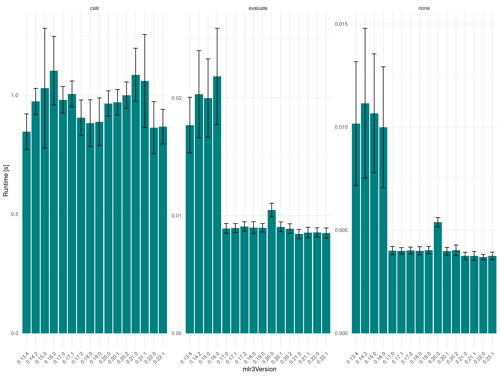
$train() for different encapsulation methods depending on the mlr3 version.Memory
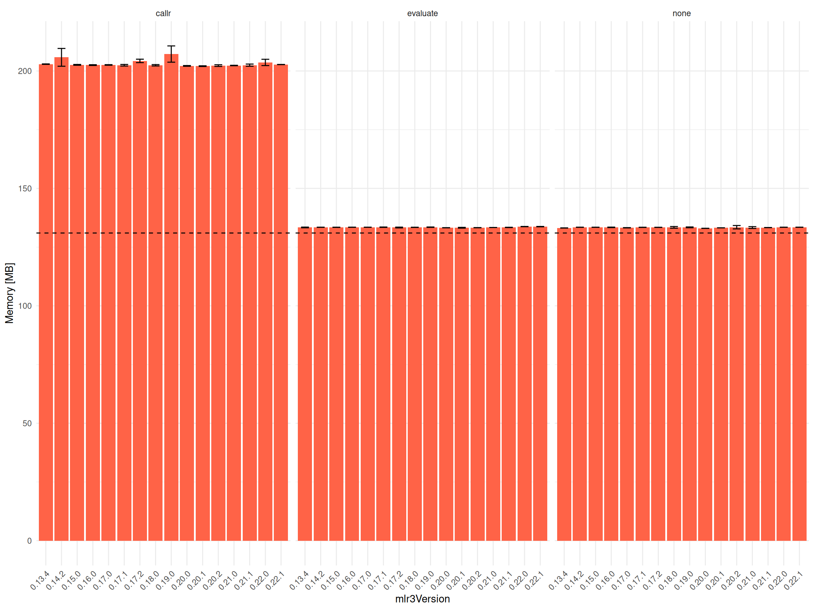
$train() for different encapsulation methods depending on the mlr3 version.Object Size
The size of different mlr3 objects is compared for different mlr3 versions. The size is measured in memory and after calling serialize() and unserialize().
Task
task = tsk("spam_1000")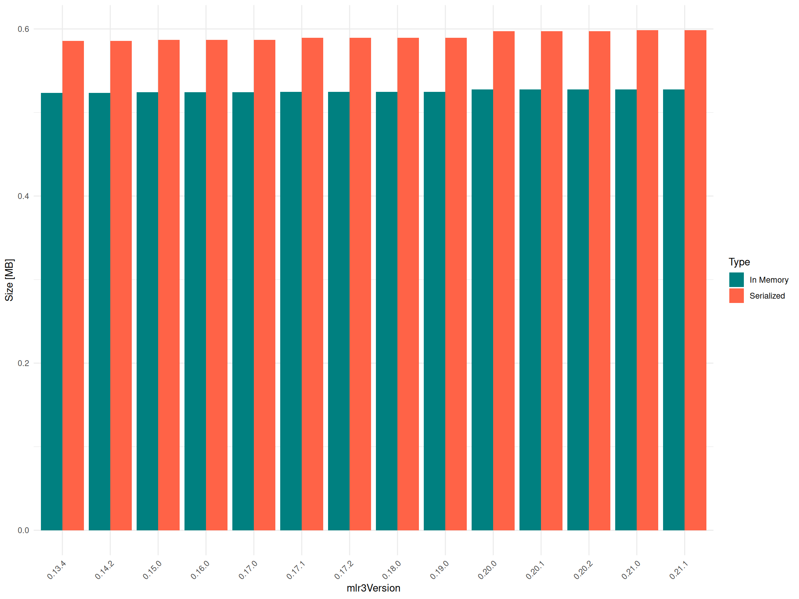
Task object depending on the mlr3 version. The size is measured in memory and after calling serialize() and unserialize().| mlr3 Version | paradox Version | Resampling Iterations | In Memory [MB] | In Memory 10,000 [MB] | Serialized [MB] | Serialized 10,000 [MB] |
|---|---|---|---|---|---|---|
| 10 Resampling Iterations | ||||||
| 0.13.4 | 0.9.0 | 10 | 0.52 | 4.6 | 0.59 | 4.7 |
| 0.14.2 | 0.10.0 | 10 | 0.52 | 4.6 | 0.59 | 4.7 |
| 0.15.0 | 0.11.1 | 10 | 0.52 | 4.6 | 0.59 | 4.7 |
| 0.16.0 | 0.11.1 | 10 | 0.52 | 4.6 | 0.59 | 4.7 |
| 0.17.0 | 0.11.1 | 10 | 0.52 | 4.6 | 0.59 | 4.7 |
| 0.17.1 | 0.11.1 | 10 | 0.52 | 4.6 | 0.59 | 4.7 |
| 0.17.2 | 0.11.1 | 10 | 0.52 | 4.6 | 0.59 | 4.7 |
| 0.18.0 | 0.11.1 | 10 | 0.52 | 4.6 | 0.59 | 4.7 |
| 0.19.0 | 0.11.1 | 10 | 0.52 | 4.6 | 0.59 | 4.7 |
| 0.20.0 | 1.0.0 | 10 | 0.53 | 4.6 | 0.60 | 4.7 |
| 0.20.1 | 1.0.1 | 10 | 0.53 | 4.6 | 0.60 | 4.7 |
| 0.20.2 | 1.0.1 | 10 | 0.53 | 4.6 | 0.60 | 4.7 |
| 0.21.0 | 1.0.1 | 10 | 0.53 | 4.6 | 0.60 | 4.7 |
| 0.21.1 | 1.0.1 | 10 | 0.53 | 4.6 | 0.60 | 4.7 |
| 100 Resampling Iterations | ||||||
| 0.13.4 | 0.9.0 | 100 | 0.52 | 4.6 | 0.59 | 4.7 |
| 0.14.2 | 0.10.0 | 100 | 0.52 | 4.6 | 0.59 | 4.7 |
| 0.15.0 | 0.11.1 | 100 | 0.52 | 4.6 | 0.59 | 4.7 |
| 0.16.0 | 0.11.1 | 100 | 0.52 | 4.6 | 0.59 | 4.7 |
| 0.17.0 | 0.11.1 | 100 | 0.52 | 4.6 | 0.59 | 4.7 |
| 0.17.1 | 0.11.1 | 100 | 0.52 | 4.6 | 0.59 | 4.7 |
| 0.17.2 | 0.11.1 | 100 | 0.52 | 4.6 | 0.59 | 4.7 |
| 0.18.0 | 0.11.1 | 100 | 0.52 | 4.6 | 0.59 | 4.7 |
| 0.19.0 | 0.11.1 | 100 | 0.52 | 4.6 | 0.59 | 4.7 |
| 0.20.0 | 1.0.0 | 100 | 0.53 | 4.6 | 0.60 | 4.7 |
| 0.20.1 | 1.0.1 | 100 | 0.53 | 4.6 | 0.60 | 4.7 |
| 0.20.2 | 1.0.1 | 100 | 0.53 | 4.6 | 0.60 | 4.7 |
| 0.21.0 | 1.0.1 | 100 | 0.53 | 4.6 | 0.60 | 4.7 |
| 0.21.1 | 1.0.1 | 100 | 0.53 | 4.6 | 0.60 | 4.7 |
| 1000 Resampling Iterations | ||||||
| 0.13.4 | 0.9.0 | 1000 | 0.52 | 4.6 | 0.59 | 4.7 |
| 0.14.2 | 0.10.0 | 1000 | 0.52 | 4.6 | 0.59 | 4.7 |
| 0.15.0 | 0.11.1 | 1000 | 0.52 | 4.6 | 0.59 | 4.7 |
| 0.16.0 | 0.11.1 | 1000 | 0.52 | 4.6 | 0.59 | 4.7 |
| 0.17.0 | 0.11.1 | 1000 | 0.52 | 4.6 | 0.59 | 4.7 |
| 0.17.1 | 0.11.1 | 1000 | 0.52 | 4.6 | 0.59 | 4.7 |
| 0.17.2 | 0.11.1 | 1000 | 0.52 | 4.6 | 0.59 | 4.7 |
| 0.18.0 | 0.11.1 | 1000 | 0.52 | 4.6 | 0.59 | 4.7 |
| 0.19.0 | 0.11.1 | 1000 | 0.52 | 4.6 | 0.59 | 4.7 |
| 0.20.0 | 1.0.0 | 1000 | 0.53 | 4.6 | 0.60 | 4.7 |
| 0.20.1 | 1.0.1 | 1000 | 0.53 | 4.6 | 0.60 | 4.7 |
| 0.20.2 | 1.0.1 | 1000 | 0.53 | 4.6 | 0.60 | 4.7 |
| 0.21.0 | 1.0.1 | 1000 | 0.53 | 4.6 | 0.60 | 4.7 |
| 0.21.1 | 1.0.1 | 1000 | 0.53 | 4.6 | 0.60 | 4.7 |
Learner
learner = lrn("classif.rpart")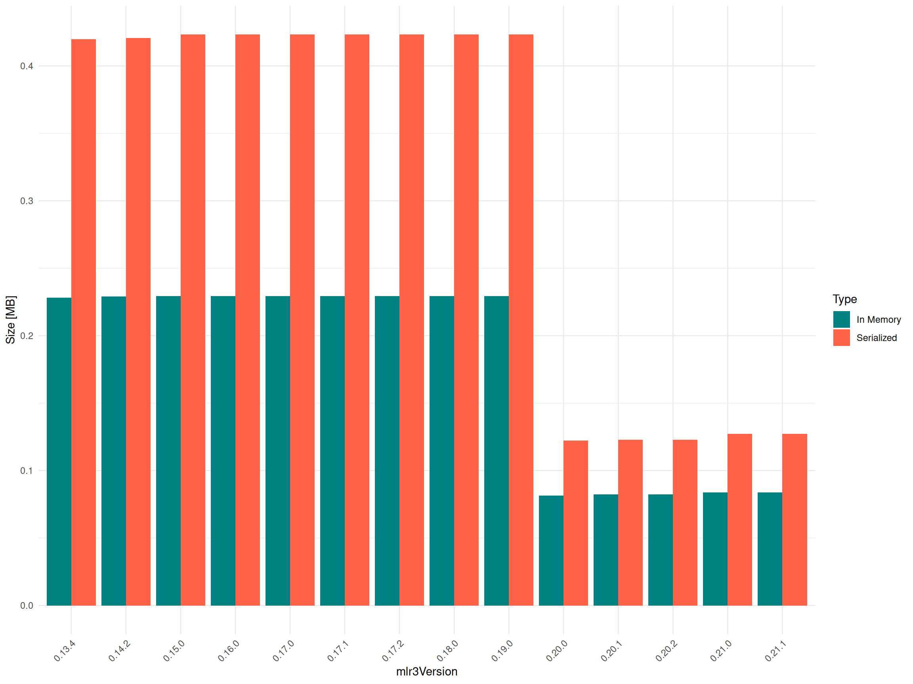
lrn("classif.rpart")object depending on the mlr3 version. The size is measured in memory and after calling serialize() and unserialize().| mlr3 Version | paradox Version | Resampling Iterations | In Memory [MB] | In Memory 10,000 [MB] | Serialized [MB] | Serialized 10,000 [MB] |
|---|---|---|---|---|---|---|
| 10 Resampling Iterations | ||||||
| 0.13.4 | 0.9.0 | 10 | 0.23 | 0.23 | 0.42 | 0.42 |
| 0.14.2 | 0.10.0 | 10 | 0.23 | 0.23 | 0.42 | 0.42 |
| 0.15.0 | 0.11.1 | 10 | 0.23 | 0.23 | 0.42 | 0.42 |
| 0.16.0 | 0.11.1 | 10 | 0.23 | 0.23 | 0.42 | 0.42 |
| 0.17.0 | 0.11.1 | 10 | 0.23 | 0.23 | 0.42 | 0.42 |
| 0.17.1 | 0.11.1 | 10 | 0.23 | 0.23 | 0.42 | 0.42 |
| 0.17.2 | 0.11.1 | 10 | 0.23 | 0.23 | 0.42 | 0.42 |
| 0.18.0 | 0.11.1 | 10 | 0.23 | 0.23 | 0.42 | 0.42 |
| 0.19.0 | 0.11.1 | 10 | 0.23 | 0.23 | 0.42 | 0.42 |
| 0.20.0 | 1.0.0 | 10 | 0.081 | 0.081 | 0.12 | 0.12 |
| 0.20.1 | 1.0.1 | 10 | 0.082 | 0.082 | 0.12 | 0.12 |
| 0.20.2 | 1.0.1 | 10 | 0.082 | 0.082 | 0.12 | 0.12 |
| 0.21.0 | 1.0.1 | 10 | 0.084 | 0.084 | 0.13 | 0.13 |
| 0.21.1 | 1.0.1 | 10 | 0.084 | 0.084 | 0.13 | 0.13 |
| 100 Resampling Iterations | ||||||
| 0.13.4 | 0.9.0 | 100 | 0.23 | 0.23 | 0.42 | 0.42 |
| 0.14.2 | 0.10.0 | 100 | 0.23 | 0.23 | 0.42 | 0.42 |
| 0.15.0 | 0.11.1 | 100 | 0.23 | 0.23 | 0.42 | 0.42 |
| 0.16.0 | 0.11.1 | 100 | 0.23 | 0.23 | 0.42 | 0.42 |
| 0.17.0 | 0.11.1 | 100 | 0.23 | 0.23 | 0.42 | 0.42 |
| 0.17.1 | 0.11.1 | 100 | 0.23 | 0.23 | 0.42 | 0.42 |
| 0.17.2 | 0.11.1 | 100 | 0.23 | 0.23 | 0.42 | 0.42 |
| 0.18.0 | 0.11.1 | 100 | 0.23 | 0.23 | 0.42 | 0.42 |
| 0.19.0 | 0.11.1 | 100 | 0.23 | 0.23 | 0.42 | 0.42 |
| 0.20.0 | 1.0.0 | 100 | 0.081 | 0.081 | 0.12 | 0.12 |
| 0.20.1 | 1.0.1 | 100 | 0.082 | 0.082 | 0.12 | 0.12 |
| 0.20.2 | 1.0.1 | 100 | 0.082 | 0.082 | 0.12 | 0.12 |
| 0.21.0 | 1.0.1 | 100 | 0.084 | 0.084 | 0.13 | 0.13 |
| 0.21.1 | 1.0.1 | 100 | 0.084 | 0.084 | 0.13 | 0.13 |
| 1000 Resampling Iterations | ||||||
| 0.13.4 | 0.9.0 | 1000 | 0.23 | 0.23 | 0.42 | 0.42 |
| 0.14.2 | 0.10.0 | 1000 | 0.23 | 0.23 | 0.42 | 0.42 |
| 0.15.0 | 0.11.1 | 1000 | 0.23 | 0.23 | 0.42 | 0.42 |
| 0.16.0 | 0.11.1 | 1000 | 0.23 | 0.23 | 0.42 | 0.42 |
| 0.17.0 | 0.11.1 | 1000 | 0.23 | 0.23 | 0.42 | 0.42 |
| 0.17.1 | 0.11.1 | 1000 | 0.23 | 0.23 | 0.42 | 0.42 |
| 0.17.2 | 0.11.1 | 1000 | 0.23 | 0.23 | 0.42 | 0.42 |
| 0.18.0 | 0.11.1 | 1000 | 0.23 | 0.23 | 0.42 | 0.42 |
| 0.19.0 | 0.11.1 | 1000 | 0.23 | 0.23 | 0.42 | 0.42 |
| 0.20.0 | 1.0.0 | 1000 | 0.081 | 0.081 | 0.12 | 0.12 |
| 0.20.1 | 1.0.1 | 1000 | 0.082 | 0.082 | 0.12 | 0.12 |
| 0.20.2 | 1.0.1 | 1000 | 0.082 | 0.082 | 0.12 | 0.12 |
| 0.21.0 | 1.0.1 | 1000 | 0.084 | 0.084 | 0.13 | 0.13 |
| 0.21.1 | 1.0.1 | 1000 | 0.084 | 0.084 | 0.13 | 0.13 |
learner$train(task)
lrn("classif.rpart")object depending on the mlr3 version. The size is measured in memory and after calling serialize() and unserialize().| mlr3 Version | paradox Version | Resampling Iterations | In Memory [MB] | In Memory 10,000 [MB] | Serialized [MB] | Serialized 10,000 [MB] |
|---|---|---|---|---|---|---|
| 10 Resampling Iterations | ||||||
| 0.13.4 | 0.9.0 | 10 | 0.39 | 0.50 | 0.64 | 0.74 |
| 0.14.2 | 0.10.0 | 10 | 0.39 | 0.50 | 0.64 | 0.74 |
| 0.15.0 | 0.11.1 | 10 | 0.39 | 0.50 | 0.64 | 0.75 |
| 0.16.0 | 0.11.1 | 10 | 0.39 | 0.50 | 0.64 | 0.75 |
| 0.17.0 | 0.11.1 | 10 | 0.39 | 0.50 | 0.64 | 0.75 |
| 0.17.1 | 0.11.1 | 10 | 0.39 | 0.50 | 0.64 | 0.75 |
| 0.17.2 | 0.11.1 | 10 | 0.39 | 0.50 | 0.64 | 0.75 |
| 0.18.0 | 0.11.1 | 10 | 0.39 | 0.50 | 0.64 | 0.75 |
| 0.19.0 | 0.11.1 | 10 | 0.39 | 0.50 | 0.64 | 0.75 |
| 0.20.0 | 1.0.0 | 10 | 0.25 | 0.35 | 0.35 | 0.46 |
| 0.20.1 | 1.0.1 | 10 | 0.25 | 0.36 | 0.35 | 0.46 |
| 0.20.2 | 1.0.1 | 10 | 0.25 | 0.36 | 0.35 | 0.46 |
| 0.21.0 | 1.0.1 | 10 | 0.25 | 0.36 | 0.36 | 0.46 |
| 0.21.1 | 1.0.1 | 10 | 0.25 | 0.36 | 0.36 | 0.46 |
| 100 Resampling Iterations | ||||||
| 0.13.4 | 0.9.0 | 100 | 0.39 | 0.50 | 0.64 | 0.74 |
| 0.14.2 | 0.10.0 | 100 | 0.39 | 0.50 | 0.64 | 0.74 |
| 0.15.0 | 0.11.1 | 100 | 0.39 | 0.50 | 0.64 | 0.75 |
| 0.16.0 | 0.11.1 | 100 | 0.39 | 0.50 | 0.64 | 0.75 |
| 0.17.0 | 0.11.1 | 100 | 0.39 | 0.50 | 0.64 | 0.75 |
| 0.17.1 | 0.11.1 | 100 | 0.39 | 0.50 | 0.64 | 0.75 |
| 0.17.2 | 0.11.1 | 100 | 0.39 | 0.50 | 0.64 | 0.75 |
| 0.18.0 | 0.11.1 | 100 | 0.39 | 0.50 | 0.64 | 0.75 |
| 0.19.0 | 0.11.1 | 100 | 0.39 | 0.50 | 0.64 | 0.75 |
| 0.20.0 | 1.0.0 | 100 | 0.25 | 0.35 | 0.35 | 0.46 |
| 0.20.1 | 1.0.1 | 100 | 0.25 | 0.36 | 0.35 | 0.46 |
| 0.20.2 | 1.0.1 | 100 | 0.25 | 0.36 | 0.35 | 0.46 |
| 0.21.0 | 1.0.1 | 100 | 0.25 | 0.36 | 0.36 | 0.46 |
| 0.21.1 | 1.0.1 | 100 | 0.25 | 0.36 | 0.36 | 0.46 |
| 1000 Resampling Iterations | ||||||
| 0.13.4 | 0.9.0 | 1000 | 0.39 | 0.50 | 0.64 | 0.74 |
| 0.14.2 | 0.10.0 | 1000 | 0.39 | 0.50 | 0.64 | 0.74 |
| 0.15.0 | 0.11.1 | 1000 | 0.39 | 0.50 | 0.64 | 0.75 |
| 0.16.0 | 0.11.1 | 1000 | 0.39 | 0.50 | 0.64 | 0.75 |
| 0.17.0 | 0.11.1 | 1000 | 0.39 | 0.50 | 0.64 | 0.75 |
| 0.17.1 | 0.11.1 | 1000 | 0.39 | 0.50 | 0.64 | 0.75 |
| 0.17.2 | 0.11.1 | 1000 | 0.39 | 0.50 | 0.64 | 0.75 |
| 0.18.0 | 0.11.1 | 1000 | 0.39 | 0.50 | 0.64 | 0.75 |
| 0.19.0 | 0.11.1 | 1000 | 0.39 | 0.50 | 0.64 | 0.75 |
| 0.20.0 | 1.0.0 | 1000 | 0.25 | 0.35 | 0.35 | 0.46 |
| 0.20.1 | 1.0.1 | 1000 | 0.25 | 0.36 | 0.35 | 0.46 |
| 0.20.2 | 1.0.1 | 1000 | 0.25 | 0.36 | 0.35 | 0.46 |
| 0.21.0 | 1.0.1 | 1000 | 0.25 | 0.36 | 0.36 | 0.46 |
| 0.21.1 | 1.0.1 | 1000 | 0.25 | 0.36 | 0.36 | 0.46 |
learner$model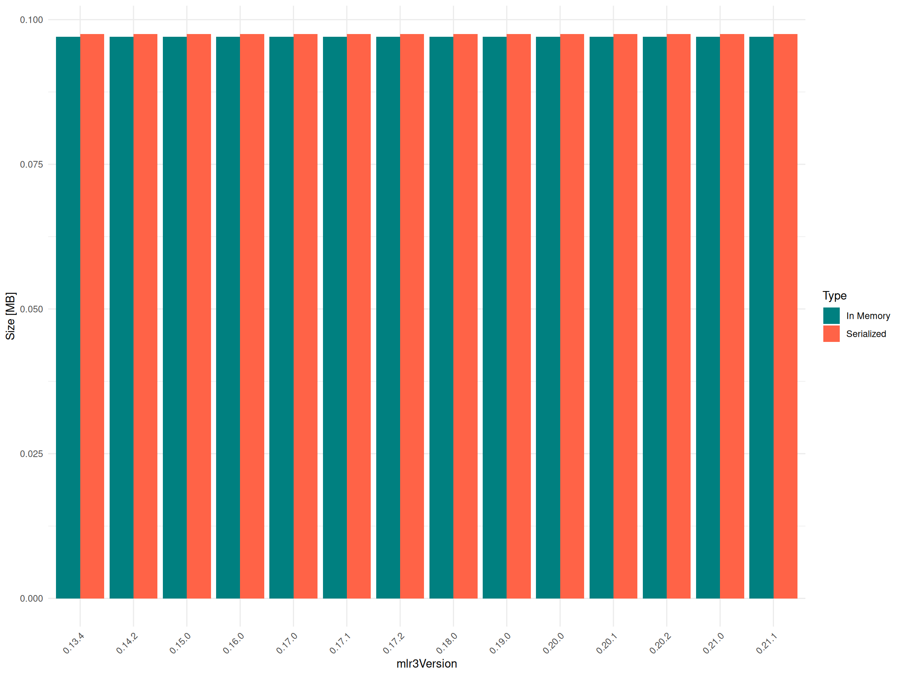
lrn("classif.rpart")object depending on the mlr3 version. The size is measured in memory and after calling serialize() and unserialize().| mlr3 Version | paradox Version | Resampling Iterations | In Memory [MB] | In Memory 10,000 [MB] | Serialized [MB] | Serialized 10,000 [MB] |
|---|---|---|---|---|---|---|
| 10 Resampling Iterations | ||||||
| 0.13.4 | 0.9.0 | 10 | 0.097 | 0.17 | 0.098 | 0.17 |
| 0.14.2 | 0.10.0 | 10 | 0.097 | 0.17 | 0.098 | 0.17 |
| 0.15.0 | 0.11.1 | 10 | 0.097 | 0.17 | 0.098 | 0.17 |
| 0.16.0 | 0.11.1 | 10 | 0.097 | 0.17 | 0.098 | 0.17 |
| 0.17.0 | 0.11.1 | 10 | 0.097 | 0.17 | 0.098 | 0.17 |
| 0.17.1 | 0.11.1 | 10 | 0.097 | 0.17 | 0.098 | 0.17 |
| 0.17.2 | 0.11.1 | 10 | 0.097 | 0.17 | 0.098 | 0.17 |
| 0.18.0 | 0.11.1 | 10 | 0.097 | 0.17 | 0.098 | 0.17 |
| 0.19.0 | 0.11.1 | 10 | 0.097 | 0.17 | 0.098 | 0.17 |
| 0.20.0 | 1.0.0 | 10 | 0.097 | 0.17 | 0.098 | 0.17 |
| 0.20.1 | 1.0.1 | 10 | 0.097 | 0.17 | 0.098 | 0.17 |
| 0.20.2 | 1.0.1 | 10 | 0.097 | 0.17 | 0.098 | 0.17 |
| 0.21.0 | 1.0.1 | 10 | 0.097 | 0.17 | 0.098 | 0.17 |
| 0.21.1 | 1.0.1 | 10 | 0.097 | 0.17 | 0.098 | 0.17 |
| 100 Resampling Iterations | ||||||
| 0.13.4 | 0.9.0 | 100 | 0.097 | 0.17 | 0.098 | 0.17 |
| 0.14.2 | 0.10.0 | 100 | 0.097 | 0.17 | 0.098 | 0.17 |
| 0.15.0 | 0.11.1 | 100 | 0.097 | 0.17 | 0.098 | 0.17 |
| 0.16.0 | 0.11.1 | 100 | 0.097 | 0.17 | 0.098 | 0.17 |
| 0.17.0 | 0.11.1 | 100 | 0.097 | 0.17 | 0.098 | 0.17 |
| 0.17.1 | 0.11.1 | 100 | 0.097 | 0.17 | 0.098 | 0.17 |
| 0.17.2 | 0.11.1 | 100 | 0.097 | 0.17 | 0.098 | 0.17 |
| 0.18.0 | 0.11.1 | 100 | 0.097 | 0.17 | 0.098 | 0.17 |
| 0.19.0 | 0.11.1 | 100 | 0.097 | 0.17 | 0.098 | 0.17 |
| 0.20.0 | 1.0.0 | 100 | 0.097 | 0.17 | 0.098 | 0.17 |
| 0.20.1 | 1.0.1 | 100 | 0.097 | 0.17 | 0.098 | 0.17 |
| 0.20.2 | 1.0.1 | 100 | 0.097 | 0.17 | 0.098 | 0.17 |
| 0.21.0 | 1.0.1 | 100 | 0.097 | 0.17 | 0.098 | 0.17 |
| 0.21.1 | 1.0.1 | 100 | 0.097 | 0.17 | 0.098 | 0.17 |
| 1000 Resampling Iterations | ||||||
| 0.13.4 | 0.9.0 | 1000 | 0.097 | 0.17 | 0.098 | 0.17 |
| 0.14.2 | 0.10.0 | 1000 | 0.097 | 0.17 | 0.098 | 0.17 |
| 0.15.0 | 0.11.1 | 1000 | 0.097 | 0.17 | 0.098 | 0.17 |
| 0.16.0 | 0.11.1 | 1000 | 0.097 | 0.17 | 0.098 | 0.17 |
| 0.17.0 | 0.11.1 | 1000 | 0.097 | 0.17 | 0.098 | 0.17 |
| 0.17.1 | 0.11.1 | 1000 | 0.097 | 0.17 | 0.098 | 0.17 |
| 0.17.2 | 0.11.1 | 1000 | 0.097 | 0.17 | 0.098 | 0.17 |
| 0.18.0 | 0.11.1 | 1000 | 0.097 | 0.17 | 0.098 | 0.17 |
| 0.19.0 | 0.11.1 | 1000 | 0.097 | 0.17 | 0.098 | 0.17 |
| 0.20.0 | 1.0.0 | 1000 | 0.097 | 0.17 | 0.098 | 0.17 |
| 0.20.1 | 1.0.1 | 1000 | 0.097 | 0.17 | 0.098 | 0.17 |
| 0.20.2 | 1.0.1 | 1000 | 0.097 | 0.17 | 0.098 | 0.17 |
| 0.21.0 | 1.0.1 | 1000 | 0.097 | 0.17 | 0.098 | 0.17 |
| 0.21.1 | 1.0.1 | 1000 | 0.097 | 0.17 | 0.098 | 0.17 |
learner$param_set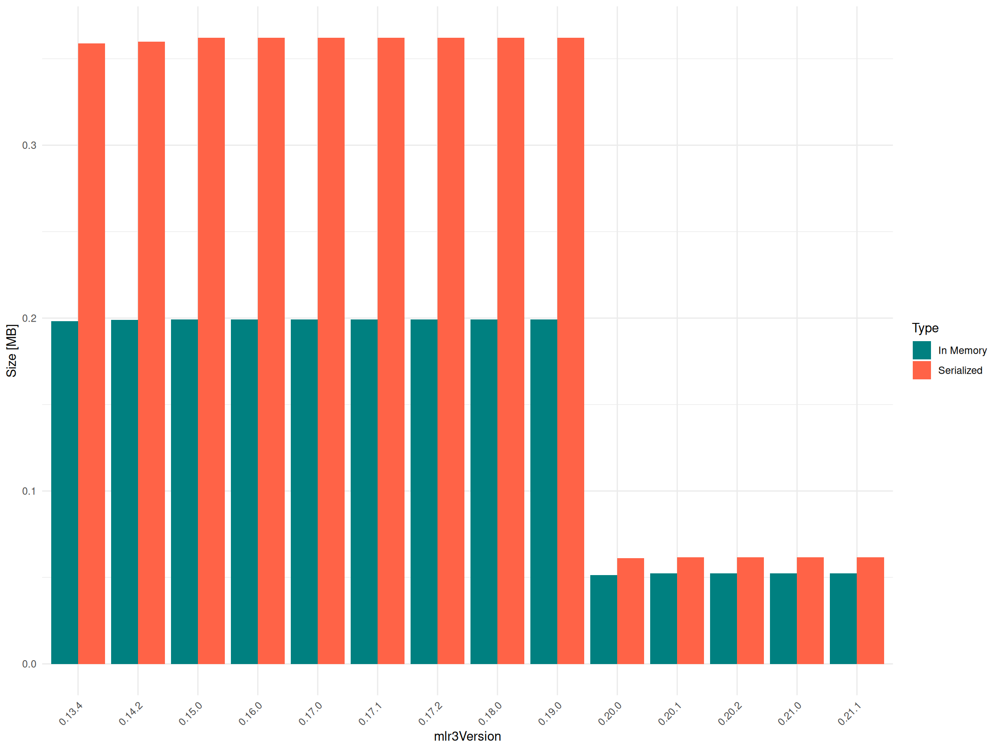
ParamSet of a lrn("classif.rpart")object depending on the mlr3 version. The size is measured in memory and after calling serialize() and unserialize().| mlr3 Version | paradox Version | Resampling Iterations | In Memory [MB] | In Memory 10,000 [MB] | Serialized [MB] | Serialized 10,000 [MB] |
|---|---|---|---|---|---|---|
| 10 Resampling Iterations | ||||||
| 0.13.4 | 0.9.0 | 10 | 0.20 | 0.20 | 0.36 | 0.36 |
| 0.14.2 | 0.10.0 | 10 | 0.20 | 0.20 | 0.36 | 0.36 |
| 0.15.0 | 0.11.1 | 10 | 0.20 | 0.20 | 0.36 | 0.36 |
| 0.16.0 | 0.11.1 | 10 | 0.20 | 0.20 | 0.36 | 0.36 |
| 0.17.0 | 0.11.1 | 10 | 0.20 | 0.20 | 0.36 | 0.36 |
| 0.17.1 | 0.11.1 | 10 | 0.20 | 0.20 | 0.36 | 0.36 |
| 0.17.2 | 0.11.1 | 10 | 0.20 | 0.20 | 0.36 | 0.36 |
| 0.18.0 | 0.11.1 | 10 | 0.20 | 0.20 | 0.36 | 0.36 |
| 0.19.0 | 0.11.1 | 10 | 0.20 | 0.20 | 0.36 | 0.36 |
| 0.20.0 | 1.0.0 | 10 | 0.051 | 0.051 | 0.061 | 0.061 |
| 0.20.1 | 1.0.1 | 10 | 0.052 | 0.052 | 0.062 | 0.062 |
| 0.20.2 | 1.0.1 | 10 | 0.052 | 0.052 | 0.062 | 0.062 |
| 0.21.0 | 1.0.1 | 10 | 0.052 | 0.052 | 0.062 | 0.062 |
| 0.21.1 | 1.0.1 | 10 | 0.052 | 0.052 | 0.062 | 0.062 |
| 100 Resampling Iterations | ||||||
| 0.13.4 | 0.9.0 | 100 | 0.20 | 0.20 | 0.36 | 0.36 |
| 0.14.2 | 0.10.0 | 100 | 0.20 | 0.20 | 0.36 | 0.36 |
| 0.15.0 | 0.11.1 | 100 | 0.20 | 0.20 | 0.36 | 0.36 |
| 0.16.0 | 0.11.1 | 100 | 0.20 | 0.20 | 0.36 | 0.36 |
| 0.17.0 | 0.11.1 | 100 | 0.20 | 0.20 | 0.36 | 0.36 |
| 0.17.1 | 0.11.1 | 100 | 0.20 | 0.20 | 0.36 | 0.36 |
| 0.17.2 | 0.11.1 | 100 | 0.20 | 0.20 | 0.36 | 0.36 |
| 0.18.0 | 0.11.1 | 100 | 0.20 | 0.20 | 0.36 | 0.36 |
| 0.19.0 | 0.11.1 | 100 | 0.20 | 0.20 | 0.36 | 0.36 |
| 0.20.0 | 1.0.0 | 100 | 0.051 | 0.051 | 0.061 | 0.061 |
| 0.20.1 | 1.0.1 | 100 | 0.052 | 0.052 | 0.062 | 0.062 |
| 0.20.2 | 1.0.1 | 100 | 0.052 | 0.052 | 0.062 | 0.062 |
| 0.21.0 | 1.0.1 | 100 | 0.052 | 0.052 | 0.062 | 0.062 |
| 0.21.1 | 1.0.1 | 100 | 0.052 | 0.052 | 0.062 | 0.062 |
| 1000 Resampling Iterations | ||||||
| 0.13.4 | 0.9.0 | 1000 | 0.20 | 0.20 | 0.36 | 0.36 |
| 0.14.2 | 0.10.0 | 1000 | 0.20 | 0.20 | 0.36 | 0.36 |
| 0.15.0 | 0.11.1 | 1000 | 0.20 | 0.20 | 0.36 | 0.36 |
| 0.16.0 | 0.11.1 | 1000 | 0.20 | 0.20 | 0.36 | 0.36 |
| 0.17.0 | 0.11.1 | 1000 | 0.20 | 0.20 | 0.36 | 0.36 |
| 0.17.1 | 0.11.1 | 1000 | 0.20 | 0.20 | 0.36 | 0.36 |
| 0.17.2 | 0.11.1 | 1000 | 0.20 | 0.20 | 0.36 | 0.36 |
| 0.18.0 | 0.11.1 | 1000 | 0.20 | 0.20 | 0.36 | 0.36 |
| 0.19.0 | 0.11.1 | 1000 | 0.20 | 0.20 | 0.36 | 0.36 |
| 0.20.0 | 1.0.0 | 1000 | 0.051 | 0.051 | 0.061 | 0.061 |
| 0.20.1 | 1.0.1 | 1000 | 0.052 | 0.052 | 0.062 | 0.062 |
| 0.20.2 | 1.0.1 | 1000 | 0.052 | 0.052 | 0.062 | 0.062 |
| 0.21.0 | 1.0.1 | 1000 | 0.052 | 0.052 | 0.062 | 0.062 |
| 0.21.1 | 1.0.1 | 1000 | 0.052 | 0.052 | 0.062 | 0.062 |
Prediction
pred = learner$predict(task)lobstr::obj_size() seems to misreport the size of pred$data$response. Thus the objects size appears smaller after unserializing.

Prediction object depending on the mlr3 version. The size is measured in memory and after calling serialize() and unserialize().| mlr3 Version | paradox Version | Resampling Iterations | In Memory [MB] | In Memory 10,000 [MB] | Serialized [MB] | Serialized 10,000 [MB] |
|---|---|---|---|---|---|---|
| 10 Resampling Iterations | ||||||
| 0.13.4 | 0.9.0 | 10 | 0.092 | 0.78 | 0.034 | 0.14 |
| 0.14.2 | 0.10.0 | 10 | 0.092 | 0.78 | 0.034 | 0.14 |
| 0.15.0 | 0.11.1 | 10 | 0.092 | 0.78 | 0.034 | 0.14 |
| 0.16.0 | 0.11.1 | 10 | 0.092 | 0.78 | 0.034 | 0.14 |
| 0.17.0 | 0.11.1 | 10 | 0.093 | 0.78 | 0.034 | 0.14 |
| 0.17.1 | 0.11.1 | 10 | 0.093 | 0.78 | 0.034 | 0.14 |
| 0.17.2 | 0.11.1 | 10 | 0.093 | 0.78 | 0.034 | 0.14 |
| 0.18.0 | 0.11.1 | 10 | 0.093 | 0.78 | 0.034 | 0.14 |
| 0.19.0 | 0.11.1 | 10 | 0.093 | 0.78 | 0.034 | 0.14 |
| 0.20.0 | 1.0.0 | 10 | 0.093 | 0.78 | 0.034 | 0.14 |
| 0.20.1 | 1.0.1 | 10 | 0.093 | 0.78 | 0.034 | 0.14 |
| 0.20.2 | 1.0.1 | 10 | 0.093 | 0.78 | 0.034 | 0.14 |
| 0.21.0 | 1.0.1 | 10 | 0.093 | 0.78 | 0.035 | 0.14 |
| 0.21.1 | 1.0.1 | 10 | 0.093 | 0.78 | 0.035 | 0.14 |
| 100 Resampling Iterations | ||||||
| 0.13.4 | 0.9.0 | 100 | 0.092 | 0.78 | 0.034 | 0.14 |
| 0.14.2 | 0.10.0 | 100 | 0.092 | 0.78 | 0.034 | 0.14 |
| 0.15.0 | 0.11.1 | 100 | 0.092 | 0.78 | 0.034 | 0.14 |
| 0.16.0 | 0.11.1 | 100 | 0.092 | 0.78 | 0.034 | 0.14 |
| 0.17.0 | 0.11.1 | 100 | 0.093 | 0.78 | 0.034 | 0.14 |
| 0.17.1 | 0.11.1 | 100 | 0.093 | 0.78 | 0.034 | 0.14 |
| 0.17.2 | 0.11.1 | 100 | 0.093 | 0.78 | 0.034 | 0.14 |
| 0.18.0 | 0.11.1 | 100 | 0.093 | 0.78 | 0.034 | 0.14 |
| 0.19.0 | 0.11.1 | 100 | 0.093 | 0.78 | 0.034 | 0.14 |
| 0.20.0 | 1.0.0 | 100 | 0.093 | 0.78 | 0.034 | 0.14 |
| 0.20.1 | 1.0.1 | 100 | 0.093 | 0.78 | 0.034 | 0.14 |
| 0.20.2 | 1.0.1 | 100 | 0.093 | 0.78 | 0.034 | 0.14 |
| 0.21.0 | 1.0.1 | 100 | 0.093 | 0.78 | 0.035 | 0.14 |
| 0.21.1 | 1.0.1 | 100 | 0.093 | 0.78 | 0.035 | 0.14 |
| 1000 Resampling Iterations | ||||||
| 0.13.4 | 0.9.0 | 1000 | 0.092 | 0.78 | 0.034 | 0.14 |
| 0.14.2 | 0.10.0 | 1000 | 0.092 | 0.78 | 0.034 | 0.14 |
| 0.15.0 | 0.11.1 | 1000 | 0.092 | 0.78 | 0.034 | 0.14 |
| 0.16.0 | 0.11.1 | 1000 | 0.092 | 0.78 | 0.034 | 0.14 |
| 0.17.0 | 0.11.1 | 1000 | 0.093 | 0.78 | 0.034 | 0.14 |
| 0.17.1 | 0.11.1 | 1000 | 0.093 | 0.78 | 0.034 | 0.14 |
| 0.17.2 | 0.11.1 | 1000 | 0.093 | 0.78 | 0.034 | 0.14 |
| 0.18.0 | 0.11.1 | 1000 | 0.093 | 0.78 | 0.034 | 0.14 |
| 0.19.0 | 0.11.1 | 1000 | 0.093 | 0.78 | 0.034 | 0.14 |
| 0.20.0 | 1.0.0 | 1000 | 0.093 | 0.78 | 0.034 | 0.14 |
| 0.20.1 | 1.0.1 | 1000 | 0.093 | 0.78 | 0.034 | 0.14 |
| 0.20.2 | 1.0.1 | 1000 | 0.093 | 0.78 | 0.034 | 0.14 |
| 0.21.0 | 1.0.1 | 1000 | 0.093 | 0.78 | 0.035 | 0.14 |
| 0.21.1 | 1.0.1 | 1000 | 0.093 | 0.78 | 0.035 | 0.14 |
Resampling
resampling = rsmp("subsampling", repeats = evals)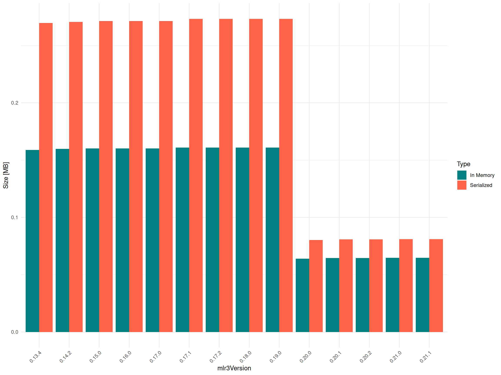
Resampling object depending on the mlr3 version. The size is measured in memory and after calling serialize() and unserialize().| mlr3 Version | paradox Version | Resampling Iterations | In Memory [MB] | In Memory 10,000 [MB] | Serialized [MB] | Serialized 10,000 [MB] |
|---|---|---|---|---|---|---|
| 10 Resampling Iterations | ||||||
| 0.13.4 | 0.9.0 | 10 | 0.16 | 0.16 | 0.27 | 0.27 |
| 0.14.2 | 0.10.0 | 10 | 0.16 | 0.16 | 0.27 | 0.27 |
| 0.15.0 | 0.11.1 | 10 | 0.16 | 0.16 | 0.27 | 0.27 |
| 0.16.0 | 0.11.1 | 10 | 0.16 | 0.16 | 0.27 | 0.27 |
| 0.17.0 | 0.11.1 | 10 | 0.16 | 0.16 | 0.27 | 0.27 |
| 0.17.1 | 0.11.1 | 10 | 0.16 | 0.16 | 0.27 | 0.27 |
| 0.17.2 | 0.11.1 | 10 | 0.16 | 0.16 | 0.27 | 0.27 |
| 0.18.0 | 0.11.1 | 10 | 0.16 | 0.16 | 0.27 | 0.27 |
| 0.19.0 | 0.11.1 | 10 | 0.16 | 0.16 | 0.27 | 0.27 |
| 0.20.0 | 1.0.0 | 10 | 0.064 | 0.064 | 0.080 | 0.080 |
| 0.20.1 | 1.0.1 | 10 | 0.064 | 0.064 | 0.081 | 0.081 |
| 0.20.2 | 1.0.1 | 10 | 0.064 | 0.064 | 0.081 | 0.081 |
| 0.21.0 | 1.0.1 | 10 | 0.065 | 0.065 | 0.081 | 0.081 |
| 0.21.1 | 1.0.1 | 10 | 0.065 | 0.065 | 0.081 | 0.081 |
| 100 Resampling Iterations | ||||||
| 0.13.4 | 0.9.0 | 100 | 0.16 | 0.16 | 0.27 | 0.27 |
| 0.14.2 | 0.10.0 | 100 | 0.16 | 0.16 | 0.27 | 0.27 |
| 0.15.0 | 0.11.1 | 100 | 0.16 | 0.16 | 0.27 | 0.27 |
| 0.16.0 | 0.11.1 | 100 | 0.16 | 0.16 | 0.27 | 0.27 |
| 0.17.0 | 0.11.1 | 100 | 0.16 | 0.16 | 0.27 | 0.27 |
| 0.17.1 | 0.11.1 | 100 | 0.16 | 0.16 | 0.27 | 0.27 |
| 0.17.2 | 0.11.1 | 100 | 0.16 | 0.16 | 0.27 | 0.27 |
| 0.18.0 | 0.11.1 | 100 | 0.16 | 0.16 | 0.27 | 0.27 |
| 0.19.0 | 0.11.1 | 100 | 0.16 | 0.16 | 0.27 | 0.27 |
| 0.20.0 | 1.0.0 | 100 | 0.064 | 0.064 | 0.080 | 0.080 |
| 0.20.1 | 1.0.1 | 100 | 0.064 | 0.064 | 0.081 | 0.081 |
| 0.20.2 | 1.0.1 | 100 | 0.064 | 0.064 | 0.081 | 0.081 |
| 0.21.0 | 1.0.1 | 100 | 0.065 | 0.065 | 0.081 | 0.081 |
| 0.21.1 | 1.0.1 | 100 | 0.065 | 0.065 | 0.081 | 0.081 |
| 1000 Resampling Iterations | ||||||
| 0.13.4 | 0.9.0 | 1000 | 0.16 | 0.16 | 0.27 | 0.27 |
| 0.14.2 | 0.10.0 | 1000 | 0.16 | 0.16 | 0.27 | 0.27 |
| 0.15.0 | 0.11.1 | 1000 | 0.16 | 0.16 | 0.27 | 0.27 |
| 0.16.0 | 0.11.1 | 1000 | 0.16 | 0.16 | 0.27 | 0.27 |
| 0.17.0 | 0.11.1 | 1000 | 0.16 | 0.16 | 0.27 | 0.27 |
| 0.17.1 | 0.11.1 | 1000 | 0.16 | 0.16 | 0.27 | 0.27 |
| 0.17.2 | 0.11.1 | 1000 | 0.16 | 0.16 | 0.27 | 0.27 |
| 0.18.0 | 0.11.1 | 1000 | 0.16 | 0.16 | 0.27 | 0.27 |
| 0.19.0 | 0.11.1 | 1000 | 0.16 | 0.16 | 0.27 | 0.27 |
| 0.20.0 | 1.0.0 | 1000 | 0.064 | 0.064 | 0.080 | 0.080 |
| 0.20.1 | 1.0.1 | 1000 | 0.064 | 0.064 | 0.081 | 0.081 |
| 0.20.2 | 1.0.1 | 1000 | 0.064 | 0.064 | 0.081 | 0.081 |
| 0.21.0 | 1.0.1 | 1000 | 0.065 | 0.065 | 0.081 | 0.081 |
| 0.21.1 | 1.0.1 | 1000 | 0.065 | 0.065 | 0.081 | 0.081 |
resampling$instantiate(task)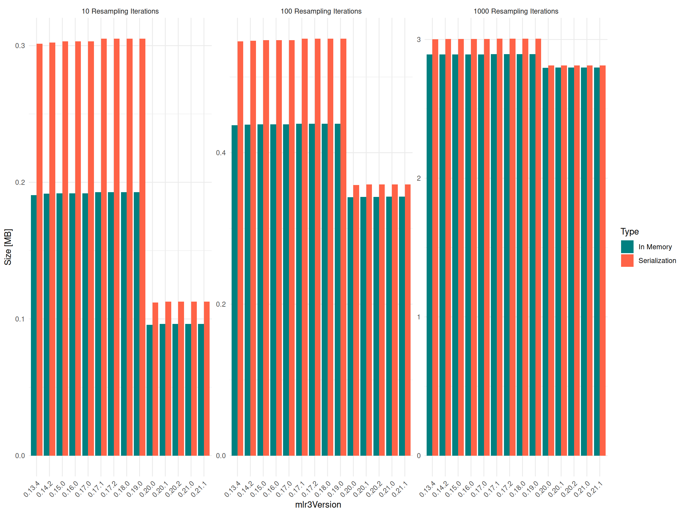
Resampling object depending on the mlr3 version. The size is measured in memory and after calling serialize() and unserialize().| mlr3 Version | paradox Version | Resampling Iterations | In Memory [MB] | In Memory 10,000 [MB] | Serialized [MB] | Serialized 10,000 [MB] |
|---|---|---|---|---|---|---|
| 10 Resampling Iterations | ||||||
| 0.13.4 | 0.9.0 | 10 | 0.19 | 0.47 | 0.30 | 0.58 |
| 0.14.2 | 0.10.0 | 10 | 0.19 | 0.47 | 0.30 | 0.58 |
| 0.15.0 | 0.11.1 | 10 | 0.19 | 0.47 | 0.30 | 0.58 |
| 0.16.0 | 0.11.1 | 10 | 0.19 | 0.47 | 0.30 | 0.58 |
| 0.17.0 | 0.11.1 | 10 | 0.19 | 0.47 | 0.30 | 0.58 |
| 0.17.1 | 0.11.1 | 10 | 0.19 | 0.47 | 0.31 | 0.58 |
| 0.17.2 | 0.11.1 | 10 | 0.19 | 0.47 | 0.31 | 0.58 |
| 0.18.0 | 0.11.1 | 10 | 0.19 | 0.47 | 0.31 | 0.58 |
| 0.19.0 | 0.11.1 | 10 | 0.19 | 0.47 | 0.31 | 0.58 |
| 0.20.0 | 1.0.0 | 10 | 0.096 | 0.37 | 0.11 | 0.39 |
| 0.20.1 | 1.0.1 | 10 | 0.096 | 0.37 | 0.11 | 0.39 |
| 0.20.2 | 1.0.1 | 10 | 0.096 | 0.37 | 0.11 | 0.39 |
| 0.21.0 | 1.0.1 | 10 | 0.096 | 0.37 | 0.11 | 0.39 |
| 0.21.1 | 1.0.1 | 10 | 0.096 | 0.37 | 0.11 | 0.39 |
| 100 Resampling Iterations | ||||||
| 0.13.4 | 0.9.0 | 100 | 0.44 | 2.9 | 0.55 | 3.0 |
| 0.14.2 | 0.10.0 | 100 | 0.44 | 2.9 | 0.55 | 3.0 |
| 0.15.0 | 0.11.1 | 100 | 0.44 | 2.9 | 0.55 | 3.0 |
| 0.16.0 | 0.11.1 | 100 | 0.44 | 2.9 | 0.55 | 3.0 |
| 0.17.0 | 0.11.1 | 100 | 0.44 | 2.9 | 0.55 | 3.0 |
| 0.17.1 | 0.11.1 | 100 | 0.44 | 2.9 | 0.55 | 3.0 |
| 0.17.2 | 0.11.1 | 100 | 0.44 | 2.9 | 0.55 | 3.0 |
| 0.18.0 | 0.11.1 | 100 | 0.44 | 2.9 | 0.55 | 3.0 |
| 0.19.0 | 0.11.1 | 100 | 0.44 | 2.9 | 0.55 | 3.0 |
| 0.20.0 | 1.0.0 | 100 | 0.34 | 2.8 | 0.36 | 2.8 |
| 0.20.1 | 1.0.1 | 100 | 0.34 | 2.8 | 0.36 | 2.8 |
| 0.20.2 | 1.0.1 | 100 | 0.34 | 2.8 | 0.36 | 2.8 |
| 0.21.0 | 1.0.1 | 100 | 0.34 | 2.8 | 0.36 | 2.8 |
| 0.21.1 | 1.0.1 | 100 | 0.34 | 2.8 | 0.36 | 2.8 |
| 1000 Resampling Iterations | ||||||
| 0.13.4 | 0.9.0 | 1000 | 2.9 | 27 | 3.0 | 27 |
| 0.14.2 | 0.10.0 | 1000 | 2.9 | 27 | 3.0 | 27 |
| 0.15.0 | 0.11.1 | 1000 | 2.9 | 27 | 3.0 | 27 |
| 0.16.0 | 0.11.1 | 1000 | 2.9 | 27 | 3.0 | 27 |
| 0.17.0 | 0.11.1 | 1000 | 2.9 | 27 | 3.0 | 27 |
| 0.17.1 | 0.11.1 | 1000 | 2.9 | 27 | 3.0 | 27 |
| 0.17.2 | 0.11.1 | 1000 | 2.9 | 27 | 3.0 | 27 |
| 0.18.0 | 0.11.1 | 1000 | 2.9 | 27 | 3.0 | 27 |
| 0.19.0 | 0.11.1 | 1000 | 2.9 | 27 | 3.0 | 27 |
| 0.20.0 | 1.0.0 | 1000 | 2.8 | 27 | 2.8 | 27 |
| 0.20.1 | 1.0.1 | 1000 | 2.8 | 27 | 2.8 | 27 |
| 0.20.2 | 1.0.1 | 1000 | 2.8 | 27 | 2.8 | 27 |
| 0.21.0 | 1.0.1 | 1000 | 2.8 | 27 | 2.8 | 27 |
| 0.21.1 | 1.0.1 | 1000 | 2.8 | 27 | 2.8 | 27 |
Resample Result
rr = resample(task, learner, resampling)
ResampleResult object depending on the mlr3 version. The size is measured in memory and after calling serialize() and unserialize().| mlr3 Version | paradox Version | Resampling Iterations | In Memory [MB] | In Memory 10,000 [MB] | Serialized [MB] | Serialized 10,000 [MB] |
|---|---|---|---|---|---|---|
| 10 Resampling Iterations | ||||||
| 0.13.4 | 0.9.0 | 10 | 1.0 | 5.7 | 1.5 | 6.3 |
| 0.14.2 | 0.10.0 | 10 | 1.0 | 5.7 | 1.5 | 6.3 |
| 0.15.0 | 0.11.1 | 10 | 1.0 | 5.7 | 1.5 | 6.3 |
| 0.16.0 | 0.11.1 | 10 | 1.0 | 5.7 | 1.5 | 6.3 |
| 0.17.0 | 0.11.1 | 10 | 1.0 | 5.7 | 1.5 | 6.3 |
| 0.17.1 | 0.11.1 | 10 | 0.98 | 6.1 | 1.4 | 6.2 |
| 0.17.2 | 0.11.1 | 10 | 0.98 | 6.1 | 1.4 | 6.2 |
| 0.18.0 | 0.11.1 | 10 | 0.98 | 6.1 | 1.4 | 6.2 |
| 0.19.0 | 0.11.1 | 10 | 0.99 | 6.1 | 1.4 | 6.2 |
| 0.20.0 | 1.0.0 | 10 | 0.83 | 5.9 | 0.94 | 5.7 |
| 0.20.1 | 1.0.1 | 10 | 0.83 | 5.9 | 0.94 | 5.7 |
| 0.20.2 | 1.0.1 | 10 | 0.83 | 5.9 | 0.94 | 5.7 |
| 0.21.0 | 1.0.1 | 10 | 0.84 | 5.9 | 0.95 | 5.7 |
| 0.21.1 | 1.0.1 | 10 | 0.84 | 5.9 | 0.95 | 5.7 |
| 100 Resampling Iterations | ||||||
| 0.13.4 | 0.9.0 | 100 | 2.9 | 13 | 3.3 | 14 |
| 0.14.2 | 0.10.0 | 100 | 2.9 | 13 | 3.3 | 14 |
| 0.15.0 | 0.11.1 | 100 | 2.9 | 13 | 3.3 | 14 |
| 0.16.0 | 0.11.1 | 100 | 2.9 | 13 | 3.3 | 14 |
| 0.17.0 | 0.11.1 | 100 | 2.9 | 13 | 3.3 | 14 |
| 0.17.1 | 0.11.1 | 100 | 2.2 | 15 | 2.4 | 13 |
| 0.17.2 | 0.11.1 | 100 | 2.2 | 15 | 2.4 | 13 |
| 0.18.0 | 0.11.1 | 100 | 2.2 | 15 | 2.4 | 13 |
| 0.19.0 | 0.11.1 | 100 | 2.2 | 15 | 2.4 | 13 |
| 0.20.0 | 1.0.0 | 100 | 2.1 | 15 | 1.9 | 12 |
| 0.20.1 | 1.0.1 | 100 | 2.1 | 15 | 1.9 | 12 |
| 0.20.2 | 1.0.1 | 100 | 2.1 | 15 | 1.9 | 12 |
| 0.21.0 | 1.0.1 | 100 | 2.1 | 15 | 1.9 | 12 |
| 0.21.1 | 1.0.1 | 100 | 2.1 | 15 | 1.9 | 12 |
| 1000 Resampling Iterations | ||||||
| 0.13.4 | 0.9.0 | 1000 | 21 | 85 | 22 | 86 |
| 0.14.2 | 0.10.0 | 1000 | 21 | 85 | 22 | 86 |
| 0.15.0 | 0.11.1 | 1000 | 21 | 85 | 22 | 86 |
| 0.16.0 | 0.11.1 | 1000 | 21 | 85 | 22 | 86 |
| 0.17.0 | 0.11.1 | 1000 | 21 | 85 | 22 | 86 |
| 0.17.1 | 0.11.1 | 1000 | 14 | 100 | 12 | 76 |
| 0.17.2 | 0.11.1 | 1000 | 14 | 100 | 12 | 76 |
| 0.18.0 | 0.11.1 | 1000 | 14 | 100 | 12 | 76 |
| 0.19.0 | 0.11.1 | 1000 | 15 | 100 | 12 | 76 |
| 0.20.0 | 1.0.0 | 1000 | 14 | 100 | 12 | 76 |
| 0.20.1 | 1.0.1 | 1000 | 14 | 100 | 12 | 76 |
| 0.20.2 | 1.0.1 | 1000 | 14 | 100 | 12 | 76 |
| 0.21.0 | 1.0.1 | 1000 | 14 | 100 | 12 | 76 |
| 0.21.1 | 1.0.1 | 1000 | 14 | 100 | 12 | 76 |
rr = resample(task, learner, resampling, store_models = TRUE)
ResamplingResult object with models depending on the mlr3 version. The size is measured in memory and after calling serialize() and unserialize().| mlr3 Version | paradox Version | Resampling Iterations | In Memory [MB] | In Memory 10,000 [MB] | Serialized [MB] | Serialized 10,000 [MB] |
|---|---|---|---|---|---|---|
| 10 Resampling Iterations | ||||||
| 0.13.4 | 0.9.0 | 10 | 1.7 | 7.7 | 2.4 | 8.5 |
| 0.14.2 | 0.10.0 | 10 | 1.7 | 7.7 | 2.4 | 8.5 |
| 0.15.0 | 0.11.1 | 10 | 1.7 | 7.7 | 2.4 | 8.5 |
| 0.16.0 | 0.11.1 | 10 | 1.7 | 7.7 | 2.4 | 8.5 |
| 0.17.0 | 0.11.1 | 10 | 1.7 | 7.7 | 2.4 | 8.5 |
| 0.17.1 | 0.11.1 | 10 | 1.6 | 7.9 | 2.3 | 8.4 |
| 0.17.2 | 0.11.1 | 10 | 1.6 | 7.9 | 2.3 | 8.4 |
| 0.18.0 | 0.11.1 | 10 | 1.6 | 7.9 | 2.3 | 8.4 |
| 0.19.0 | 0.11.1 | 10 | 1.6 | 7.9 | 2.3 | 8.4 |
| 0.20.0 | 1.0.0 | 10 | 1.5 | 7.7 | 1.8 | 7.9 |
| 0.20.1 | 1.0.1 | 10 | 1.5 | 7.7 | 1.8 | 7.9 |
| 0.20.2 | 1.0.1 | 10 | 1.5 | 7.7 | 1.8 | 7.9 |
| 0.21.0 | 1.0.1 | 10 | 1.5 | 7.7 | 1.8 | 7.9 |
| 0.21.1 | 1.0.1 | 10 | 1.5 | 7.7 | 1.8 | 7.9 |
| 100 Resampling Iterations | ||||||
| 0.13.4 | 0.9.0 | 100 | 8.7 | 29 | 12 | 32 |
| 0.14.2 | 0.10.0 | 100 | 8.7 | 29 | 12 | 32 |
| 0.15.0 | 0.11.1 | 100 | 8.7 | 29 | 12 | 32 |
| 0.16.0 | 0.11.1 | 100 | 8.7 | 29 | 12 | 32 |
| 0.17.0 | 0.11.1 | 100 | 8.7 | 29 | 12 | 32 |
| 0.17.1 | 0.11.1 | 100 | 8.0 | 30 | 11 | 31 |
| 0.17.2 | 0.11.1 | 100 | 8.0 | 30 | 11 | 31 |
| 0.18.0 | 0.11.1 | 100 | 8.0 | 30 | 11 | 31 |
| 0.19.0 | 0.11.1 | 100 | 8.0 | 30 | 11 | 31 |
| 0.20.0 | 1.0.0 | 100 | 7.9 | 30 | 10 | 30 |
| 0.20.1 | 1.0.1 | 100 | 7.9 | 30 | 10 | 30 |
| 0.20.2 | 1.0.1 | 100 | 7.9 | 30 | 10 | 30 |
| 0.21.0 | 1.0.1 | 100 | 7.9 | 30 | 10 | 30 |
| 0.21.1 | 1.0.1 | 100 | 7.9 | 30 | 10 | 30 |
| 1000 Resampling Iterations | ||||||
| 0.13.4 | 0.9.0 | 1000 | 79 | 240 | 110 | 270 |
| 0.14.2 | 0.10.0 | 1000 | 79 | 240 | 110 | 270 |
| 0.15.0 | 0.11.1 | 1000 | 79 | 240 | 110 | 270 |
| 0.16.0 | 0.11.1 | 1000 | 79 | 240 | 110 | 270 |
| 0.17.0 | 0.11.1 | 1000 | 79 | 240 | 110 | 270 |
| 0.17.1 | 0.11.1 | 1000 | 72 | 260 | 96 | 260 |
| 0.17.2 | 0.11.1 | 1000 | 72 | 260 | 96 | 260 |
| 0.18.0 | 0.11.1 | 1000 | 72 | 260 | 96 | 260 |
| 0.19.0 | 0.11.1 | 1000 | 72 | 260 | 96 | 260 |
| 0.20.0 | 1.0.0 | 1000 | 72 | 260 | 96 | 260 |
| 0.20.1 | 1.0.1 | 1000 | 72 | 260 | 96 | 260 |
| 0.20.2 | 1.0.1 | 1000 | 72 | 260 | 96 | 260 |
| 0.21.0 | 1.0.1 | 1000 | 72 | 260 | 96 | 260 |
| 0.21.1 | 1.0.1 | 1000 | 72 | 260 | 96 | 260 |
Benchmark Result
bmr = benchmark(task, learner, resampling)
BenchmarkResult object depending on the mlr3 version. The size is measured in memory and after calling serialize() and unserialize().| mlr3 Version | paradox Version | Resampling Iterations | In Memory [MB] | In Memory 10,000 [MB] | Serialized [MB] | Serialized 10,000 [MB] |
|---|---|---|---|---|---|---|
| 10 Resampling Iterations | ||||||
| 0.13.4 | 0.9.0 | 10 | 1.1 | 5.6 | 1.6 | 6.2 |
| 0.14.2 | 0.10.0 | 10 | 1.1 | 5.6 | 1.6 | 6.2 |
| 0.15.0 | 0.11.1 | 10 | 1.1 | 5.6 | 1.6 | 6.2 |
| 0.16.0 | 0.11.1 | 10 | 1.1 | 5.6 | 1.6 | 6.2 |
| 0.17.0 | 0.11.1 | 10 | 1.1 | 5.6 | 1.6 | 6.2 |
| 0.17.1 | 0.11.1 | 10 | 1.0 | 5.9 | 1.5 | 6.1 |
| 0.17.2 | 0.11.1 | 10 | 1.0 | 5.9 | 1.5 | 6.1 |
| 0.18.0 | 0.11.1 | 10 | 1.0 | 5.9 | 1.5 | 6.1 |
| 0.19.0 | 0.11.1 | 10 | 1.0 | 5.9 | 1.5 | 6.1 |
| 0.20.0 | 1.0.0 | 10 | 0.80 | 5.7 | 0.91 | 5.5 |
| 0.20.1 | 1.0.1 | 10 | 0.80 | 5.7 | 0.92 | 5.5 |
| 0.20.2 | 1.0.1 | 10 | 0.80 | 5.7 | 0.92 | 5.5 |
| 0.21.0 | 1.0.1 | 10 | 0.80 | 5.7 | 0.92 | 5.5 |
| 0.21.1 | 1.0.1 | 10 | 0.80 | 5.7 | 0.92 | 5.5 |
| 100 Resampling Iterations | ||||||
| 0.13.4 | 0.9.0 | 100 | 2.6 | 11 | 3.2 | 11 |
| 0.14.2 | 0.10.0 | 100 | 2.6 | 11 | 3.2 | 11 |
| 0.15.0 | 0.11.1 | 100 | 2.6 | 11 | 3.2 | 11 |
| 0.16.0 | 0.11.1 | 100 | 2.6 | 11 | 3.2 | 11 |
| 0.17.0 | 0.11.1 | 100 | 2.6 | 11 | 3.2 | 11 |
| 0.17.1 | 0.11.1 | 100 | 1.9 | 13 | 2.3 | 11 |
| 0.17.2 | 0.11.1 | 100 | 1.9 | 13 | 2.3 | 11 |
| 0.18.0 | 0.11.1 | 100 | 1.9 | 13 | 2.3 | 11 |
| 0.19.0 | 0.11.1 | 100 | 2.0 | 13 | 2.3 | 11 |
| 0.20.0 | 1.0.0 | 100 | 1.7 | 12 | 1.7 | 9.9 |
| 0.20.1 | 1.0.1 | 100 | 1.7 | 12 | 1.7 | 9.9 |
| 0.20.2 | 1.0.1 | 100 | 1.7 | 12 | 1.7 | 9.9 |
| 0.21.0 | 1.0.1 | 100 | 1.7 | 12 | 1.7 | 10 |
| 0.21.1 | 1.0.1 | 100 | 1.7 | 12 | 1.7 | 10 |
| 1000 Resampling Iterations | ||||||
| 0.13.4 | 0.9.0 | 1000 | 18 | 63 | 19 | 64 |
| 0.14.2 | 0.10.0 | 1000 | 18 | 63 | 19 | 64 |
| 0.15.0 | 0.11.1 | 1000 | 18 | 63 | 19 | 64 |
| 0.16.0 | 0.11.1 | 1000 | 18 | 63 | 19 | 64 |
| 0.17.0 | 0.11.1 | 1000 | 18 | 63 | 19 | 64 |
| 0.17.1 | 0.11.1 | 1000 | 11 | 80 | 9.9 | 55 |
| 0.17.2 | 0.11.1 | 1000 | 11 | 80 | 9.9 | 55 |
| 0.18.0 | 0.11.1 | 1000 | 11 | 80 | 9.9 | 55 |
| 0.19.0 | 0.11.1 | 1000 | 11 | 80 | 10 | 55 |
| 0.20.0 | 1.0.0 | 1000 | 11 | 80 | 9.4 | 54 |
| 0.20.1 | 1.0.1 | 1000 | 11 | 80 | 9.4 | 54 |
| 0.20.2 | 1.0.1 | 1000 | 11 | 80 | 9.4 | 54 |
| 0.21.0 | 1.0.1 | 1000 | 11 | 80 | 9.4 | 54 |
| 0.21.1 | 1.0.1 | 1000 | 11 | 80 | 9.4 | 54 |
bmr = benchmark(task, learner, resampling, store_models = TRUE)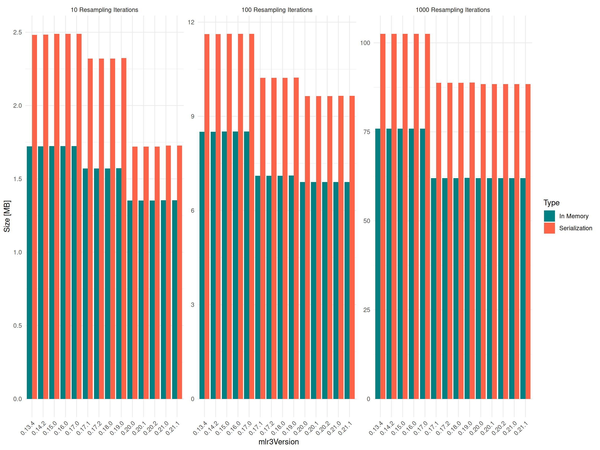
BenchmarkResult object with models depending on the mlr3 version. The size is measured in memory and after calling serialize() and unserialize().| mlr3 Version | paradox Version | Resampling Iterations | In Memory [MB] | In Memory 10,000 [MB] | Serialized [MB] | Serialized 10,000 [MB] |
|---|---|---|---|---|---|---|
| 10 Resampling Iterations | ||||||
| 0.13.4 | 0.9.0 | 10 | 1.7 | 7.5 | 2.5 | 8.4 |
| 0.14.2 | 0.10.0 | 10 | 1.7 | 7.5 | 2.5 | 8.4 |
| 0.15.0 | 0.11.1 | 10 | 1.7 | 7.5 | 2.5 | 8.4 |
| 0.16.0 | 0.11.1 | 10 | 1.7 | 7.5 | 2.5 | 8.4 |
| 0.17.0 | 0.11.1 | 10 | 1.7 | 7.5 | 2.5 | 8.4 |
| 0.17.1 | 0.11.1 | 10 | 1.6 | 7.0 | 2.3 | 7.4 |
| 0.17.2 | 0.11.1 | 10 | 1.6 | 7.0 | 2.3 | 7.4 |
| 0.18.0 | 0.11.1 | 10 | 1.6 | 7.0 | 2.3 | 7.4 |
| 0.19.0 | 0.11.1 | 10 | 1.6 | 7.0 | 2.3 | 7.4 |
| 0.20.0 | 1.0.0 | 10 | 1.4 | 6.8 | 1.7 | 6.8 |
| 0.20.1 | 1.0.1 | 10 | 1.4 | 6.8 | 1.7 | 6.8 |
| 0.20.2 | 1.0.1 | 10 | 1.4 | 6.8 | 1.7 | 6.8 |
| 0.21.0 | 1.0.1 | 10 | 1.4 | 6.8 | 1.7 | 6.8 |
| 0.21.1 | 1.0.1 | 10 | 1.4 | 6.8 | 1.7 | 6.8 |
| 100 Resampling Iterations | ||||||
| 0.13.4 | 0.9.0 | 100 | 8.5 | 27 | 12 | 30 |
| 0.14.2 | 0.10.0 | 100 | 8.5 | 27 | 12 | 30 |
| 0.15.0 | 0.11.1 | 100 | 8.5 | 27 | 12 | 30 |
| 0.16.0 | 0.11.1 | 100 | 8.5 | 27 | 12 | 30 |
| 0.17.0 | 0.11.1 | 100 | 8.5 | 27 | 12 | 30 |
| 0.17.1 | 0.11.1 | 100 | 7.1 | 23 | 10 | 23 |
| 0.17.2 | 0.11.1 | 100 | 7.1 | 23 | 10 | 23 |
| 0.18.0 | 0.11.1 | 100 | 7.1 | 23 | 10 | 23 |
| 0.19.0 | 0.11.1 | 100 | 7.1 | 23 | 10 | 23 |
| 0.20.0 | 1.0.0 | 100 | 6.9 | 22 | 9.6 | 23 |
| 0.20.1 | 1.0.1 | 100 | 6.9 | 22 | 9.6 | 23 |
| 0.20.2 | 1.0.1 | 100 | 6.9 | 22 | 9.6 | 23 |
| 0.21.0 | 1.0.1 | 100 | 6.9 | 22 | 9.7 | 23 |
| 0.21.1 | 1.0.1 | 100 | 6.9 | 22 | 9.7 | 23 |
| 1000 Resampling Iterations | ||||||
| 0.13.4 | 0.9.0 | 1000 | 76 | 220 | 100 | 240 |
| 0.14.2 | 0.10.0 | 1000 | 76 | 220 | 100 | 240 |
| 0.15.0 | 0.11.1 | 1000 | 76 | 220 | 100 | 240 |
| 0.16.0 | 0.11.1 | 1000 | 76 | 220 | 100 | 240 |
| 0.17.0 | 0.11.1 | 1000 | 76 | 220 | 100 | 240 |
| 0.17.1 | 0.11.1 | 1000 | 62 | 180 | 89 | 180 |
| 0.17.2 | 0.11.1 | 1000 | 62 | 180 | 89 | 180 |
| 0.18.0 | 0.11.1 | 1000 | 62 | 180 | 89 | 180 |
| 0.19.0 | 0.11.1 | 1000 | 62 | 180 | 89 | 180 |
| 0.20.0 | 1.0.0 | 1000 | 62 | 180 | 88 | 180 |
| 0.20.1 | 1.0.1 | 1000 | 62 | 180 | 88 | 180 |
| 0.20.2 | 1.0.1 | 1000 | 62 | 180 | 88 | 180 |
| 0.21.0 | 1.0.1 | 1000 | 62 | 180 | 88 | 180 |
| 0.21.1 | 1.0.1 | 1000 | 62 | 180 | 88 | 180 |
Version Histroy
This section provides an overview of the changes in the mlr3 and paradox packages regarding memory usage and runtime.
mlr3
mlr3 0.21.0
- Optimize the runtime of fixing factor levels.
- Optimize the runtime of setting row roles.
- Optimize the runtime of marshalling.
- Optimize the runtime of
Task$col_info.
mlr3 0.18.0
- Skip unnecessary clone of learner’s state in
resample().
mlr3 0.17.1
- Remove
data_prototypewhen resampling fromlearner$stateto reduce memory consumption. - Optimize runtime of
resample()andbenchmark()by reducing the number of hashing operations. - Reduce number of threads used by data.table and BLAS to 1 when running
resample()orbenchmark()in parallel.
mlr3 0.17.0
- Speed up resampling by removing unnecessary calls to
packageVersion(). - The
designofbenchmark()can now include parameter settings.
paradox
paradox 1.0.1
- Performance improvements.
paradox 1.0.0
- Removed Param objects. ParamSet now uses a data.table internally; individual parameters are more like Domain objects now.